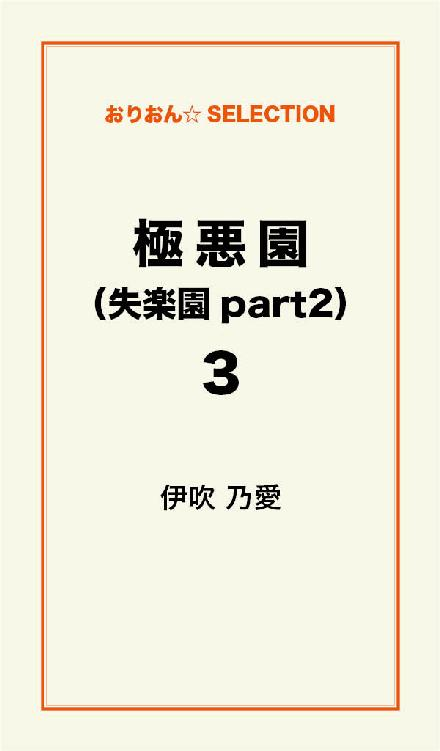

| 極悪園（失楽園part2） 完全版 | |
| 伊吹乃愛 | |
この本は横書きでレイアウトされています。
また、ご覧になる機種により、表示の差が認められることがあります。
「あんた、一生身売りだよ！」
愛子がそんな心の声で目覚めたのは、ある朝のこと。
時は梅雨の頃。
初夏とも言うのか、衣替えが済み街の人々は半袖一色、ビールが旨くなる季節である。
野島愛子と西岡銀龍が初めて一緒に酒を酌み交わしたのは、居酒屋「さくら」のカウンター席である。
愛子は「さくら」で週二回アルバイトをしていた。
銀龍が初めてこの店に現れたのは、昨年の暮れ、愛子が５歳年下の29歳の男と、遊び始めた頃である。
愛子は現実に疲れ、現実から逃げる為、出会い系サイトで知り合ったのがきっかけで、一緒に香蘭渓にドライブに行った事からすべてが狂い始めていった。
幸せそうに見えていた夫婦生活も、所詮は仮面夫婦で、すっかり覚めきっていた。
その結婚生活にピリオドを打とうとしていた。
愛子と夫との間には子供がいない事が、幸か不幸か、離婚の引き金となっていった。
子供のいない愛子は、７年間ただひたすら、妻として、嫁として、旦那に尽くし、浪費癖の激しい夫の為に、がむしゃらに働いてきた。
唯一、心に安らぎを与えてくれたのは、寅猫のオサコである。
夜の生活は、６年程全くと言っていい程なく、愛子の寂しさは我慢の限界に達していた。
浮気心が芽生えたのは、やむを得なかった。
年下の男と遊ぶようになってから、愛子は少しずつ変わっていった。
化粧も服装も若返っていった。
これまで、お洒落をしている暇もなければ、お金もなかった。
心にゆとりがなかった。
ただひたすら生活する事に疲れ、所帯じみていた。
ところが年下のエキスを吸収し、人生観が変わっていった。
そんな時に、居酒屋で働いていた愛子は、銀龍と出会ってしまった。
もう一人の常連の自称ヤクザと言っている、二郎という55歳の男と二人で飲んでいた。
銀龍に対し、二郎がこう言った。
「いい女やろう。三万でやらしたると......」
愛子は、内心「何やって～、馬鹿にしやがって......ふざけんな」と思ったが、その前に銀龍は即答した。
「いらんわ～」
その一言で終わった。
愛子は複雑な心境だった。
「いらんわ～」
とはなんや～。
魅力ないって事かぁ～。
けど、ここで「お～、よし買うわ」と言われても、
「あほんだら～、こんなおっさん、いくら積まれても、いらんわ～」
と思っていたに違いない。
愛子の銀龍に対する第一印象は大きな声でよ～しゃべる奴や。
けど、どこか違う。
他の田舎のおやじとは、どこか一味違うと思った。
何が違うのかは分からないが、どこか垢抜けしており、都会的な衣服を身に纏い、話し方は、何か人間の大きさを感じた。
その人が本当の現役ヤクザと知るまでは......。
それもそのはずである。
歳にして53歳。
三十数年極道一筋で生きてきている人間である。
その時の会話はその一言で終わったが、ただ淡々と社会情勢や金儲けの事、商売の仕方等を、二郎と居酒屋の大将と語っていた。
愛子はまるで興味を示さなかった。
どころか、別世界の人であり、とうてい、近づけられる人間ではないと、敬遠していた。
それ以降、銀龍は居酒屋「さくら」に何度か来ていたのかも知れないが、愛子が再度顔を合わせたのは、半年後くらいの五月の頃。
愛子の家庭は崩壊寸前。
何度も別居を繰り返し、ついには、五月のゴールデンウイークには路頭に迷い、現実逃避の為、一人で、いや二人、猫を連れ、車で郡上まであてのない一人旅に出た。
猫がいくらか、癒してはくれたが、運転していても涙が出て、白鳥の道の駅に車を止め、チューハイを飲んで、気を紛らわした。
酒が更に涙をそそった。
けど、このまま死んでしまいたいと思った。
生きていても無駄だ。
無駄ばかりしてきた。
一生懸命やってきた七年間は何だったのか。
何故、旦那の方から、別れを告げられてしまったのか？
購入したばかりのマンションから追い出されなければならないのか？
旦那にもプライドがあったのか。
妻が浮気に走りつつある事を知ってか知らずか、最終決断を自分なりに考えたのであろう。
慰謝料を払ってでも、別れたい理由は、後々分かる事になるが、その時はただ、倦怠期であるとしか、考えられなかった。
離婚に至った決定的引き金になったのは、紛れもなく、銀龍との再会である。
そして、銀龍と躯の関係をもってしまった為である。
銀龍がちょくちょく店に現れるようになったのは、二郎やその仲間が来なくなってからである。
舎弟関係にあるのか、二郎は銀龍に対して、親分とか兄貴と呼んでいる。
そんなある日、銀龍は若造の男を連れて飲みに来た。
歳の頃は三十前後であろうか、ほとんどしゃべらず、おとなしげで、人の良さそうな子である。
それもそのはず、銀龍は酒を飲むと人が変わったかのように変貌するのである。
酒を飲まなければ、いい男。
紳士と言われているように、実に酒を飲むと、激しい変わり様なので、皆、一緒に酒を飲むのを恐れている。
故に、舎弟関係にある若造なんぞ、恐ろしくて、銀龍に逆らおうものなら、殴られかねないし、怒鳴られかねないので、静かに大人しく、話を聞いているだけなのである。
愛子は何となく、それを察していたのか、銀龍の言葉に相槌を入れたり、質問したり、時には笑ったり、時には反論したり、驚いたりして、上手く交わしていた。
それが銀龍にとっては、嬉しかったのか、大きな声で、気分よさ気に、語りかけてくる。
意外にも、山へ山菜を積みに行ったり、川へ行ったり、時には彼女を連れて云々の話もあった。
まだその時は、後々、愛子自信がその彼女になるなんぞ、予想もしていなかった。
「男も女もセックス嫌いな奴おるか？」と、モーションかけてきたりもした。
そして何度か店に訪れるようになり、愛子がいるのを狙ってか否か、度々顔を合わせるようになり、段々と接近する日が近づいてきたのである。
来る度来る度、話題は豊富で、話のネタは尽きず、日に日に、世界情勢から、歴史、更には知的で高度な話となり、頭の良さ、記憶力の良さを思わせるまでとなった。
愛子は、店に来るのが、楽しみになっていった。
話題も豊富だし、何よりも頭の良さに感心していた。
そして、少しずつ惹かれていった。
夫と別居を始めて、実家に戻り、寂しさがピークに達した調度二ヶ月が過ぎようとしていた頃、銀龍が福ちゃんという相棒と二人で飲みに来た。
愛子は銀龍に対し、意識し始めていた為、必要以上に近寄らないし、必要以上にしゃべらなかった。
しかし、福ちゃんは以前からの常連でしばらくご無沙汰だったが、久しぶりに店に来て、愛子が彼の隣の席を片付けようとしていた時
「愛ちゃんだっけ？ やっとここへ来てくれたなぁ～」と話し掛けてきた時、銀龍の視線を感じた。
福ちゃんが「お前も飲め」と言ってくれたのがきっかけで、銀龍も「おー、飲め飲め！」と奨めてくれた。
そして、銀龍が焼酎の烏龍茶割りを作ってくれた。
その時、愛子は銀龍の性格を手に取るように分かった。
何ておおざっぱな人なんだろう？
そして、何て大きな人なんだろう？
愛子は焼酎を一口飲んで、思わず「おいしい！」と言ってしまった。
本心からそう思えたのだ。
隣に、心惹かれた男がいて、その人に作ってもらった酒は、なんとも、旨いものに思えた。
調子に乗り、仕事そっちのけで、話に花が咲いてしまった。
銀龍と愛子は意気投合してしまった。
薄々ヤクザと知りつつも、半信半疑で、愛子は相手が誰であろうと話口調は変わらず、ざっくばらんな性格である。
既に相棒の福ちゃんは酔いつぶれており、愛子も何を話したか半分くらい記憶にないが、福ちゃんが
「どうせ帰っても一人だろー？」
そこへ銀龍が、
「おっ、何でだ？ 旦那は？」
「だって別居中だもん」
「ＳＥＸしてまえなんだかぁ～？」
「そうとも言う。50過ぎてるの？ えっ、見えないね～。若く見えるね」
と友達口調で話していた事は覚えている。
銀龍も調子に乗り「彼女はたくさんおるぞ～」と言う。
「そんな感じする～」
「でも電話は昼間しかかかってこない。なんでや言うたら、人の妻だから......何で女の人、一人で飲みに来るか、知っとるか～？ 刺激を求める為、一人で飲んでるんや～。ほんやから、俺は一人で飲むより二人で飲む方がええと思って声かけたるんや～」
と、プレイボーイぶりを自慢げに話していた。
「もしか、俺とねぇちゃんがそういう事になったら、どうなる言うんや？ どうにかなる言うんか？」
すると、愛子が「絶対なる！」と、言い切った。
銀龍が「絶対って事はないさ......」笑みを浮かべて言った。
しかし、愛子はそういう銀龍にますます魅力を感じ、何故ならば、こんな人に一度遊ばれたいと思ったからである。
店の大将が「ラーメンでも食べに行くか......」と言ったらしい。
そのまま愛子は、銀龍の車に、引き憑かれたかのように、乗っていった。
覚えているのは「どの車？ これ？ クラウン？」と言った言葉と、車中ではふと我に返り、「あっ、どうしよう？ どこ行くの？ いやや、どうしよう、怖い。大将は？ 本当に大将来る？ 私なんかでいいの？ 本当にいいの？」と、ただ謙虚な気持ちでいっぱいだった事だ。
そして「おお、ええよ。ここへ電話してこい！」と銀龍が電話番号を教えてくれた。
酔っ払っているにもかかわらず、はっきりと番号を把握し、自分の携帯へ打ち込み、発信してみた。
よし、これで自分の番号も相手に伝わった。
と、満足感いっぱいだった事は覚えている。
銀龍は、愛子の手を握った。
愛子も銀龍の手を握り返した。
寂しさが、正にピークに達していた証である。
愛子はそれだけで、感無量だった。
もうどうなってもいい。
この人なら、どこに連れられても悔いはないと思った。
電話番号を聞いた愛子は、家に帰ると即座に電話してみた。
「まだ、飲んでるの？」
「お～、何でも買ったるぞ～！ 何処でも連れてったるぞ～！」
と、酔っ払い口調で銀龍が言った。
それが、愛の始まりでもあり、地獄の始まりでもあった。正に、極道への第一歩であった。
愛子と銀龍が結ばれたのは、酒を酌み交わした二日後である。
翌日には電話あるも、お互い二日酔いで、愛子は、それにもかかわらず、妹の誕生日の為、犬山のお菓子の城まで、遊びに行っていた。
銀龍は「今日はゆっくり寝るだわ」と言い残し、翌々日、昼過ぎに電話があり「東海大橋か千本松か？」とぶっきらぼうな言い方で、愛子は戸惑いを感じつつも、早く会いたい。会ってどうにでもなれと、半ば投げやりの気持ちで、
「じゃあ、木曽三川の駐車場に来てよ！」
と相手をヤクザだという事をすっかり忘れ、持ち前の姐御肌ぶりを見せ付けた。
愛子の車を置き、銀龍の車に乗り込み、鰻を食べに行った。
愛子は座敷に座るなり「ここお酒あるの？」と尋ねると銀龍は、
「昼間っから酔っ払ってまうがや～、やめとけ～」と苦笑する。
銀龍は愛子に身の上調査をするかのように、淡々と質問してくる。
愛子は馬鹿がつく程正直者で、問われる事に淡々と答えていった。
愛子は不安になる。
こんなにペラペラ自分の事ばかり、しゃべってしまっていいのか、後々嵌められ、ごっそり財産まるごと取られてしまう材料になってんじゃないだろうか？と話せば話す程不安になる。
思えば、離婚の事、旦那の事、破局の原因、実家の家の事、妹の家の事、何処で働いているとか、何してるとか、情報収集しているかのように思えた。
そうかと言って、愛子が質問をすると、返ってくる答えは、とても抽象的で、言葉を濁らせたり、あやふやだったりで、話が続かない。
例えば「何処に住んでるの？」と聞くと「今は桑名」ただそれだけ。
「仕事何してるの？」と聞けば「色々......」の一言。
そんなんじゃ、話が繋がっていかないではないか......。
愛子は不安になる。
どうしたらいいんだ。
この場をどう切り抜けたらいいんだ......？
銀龍はさっさと鰻重を食べ、吸い物を残し、さっさと次の行動へ移したいようである。
せっかちなのか、一つ一つの行動が淡々としていて、かつ潔い。
ぱっぱっと次の行動に移していく。
ホテルまでの車中「自分なんで旦那と別居しとるんや？」とか、他愛のない話をし「自分名前何て言うんだ？」と聞かれた。
愛子は「皆は愛ちゃんって言うよ」と言うと
「違う！ 名字は？」と照れ隠しか、名字を問い直した。
「あ～、野島だよ」と離婚後の名前を教える。
確かに大の男が、ましてやヤクザの親分が「愛ちゃん」なんて、プライドが許さないだろう。
結局、名前で呼ぶ事などなく「自分......」とそれが初めて会う女に対する口癖のようにも思えた。
「お前飲ん兵衛やなぁ～」と銀龍が言うと
「最近特によく飲むね」と愛子が答える。
銀龍が愛子を連れて行ったのは、行き慣れたモーテルで、土曜日のせいか満室であった。
そこで、引き返し、地元のホテルへ移った。
愛子は、ヤバイとうとう、不倫してしまうと思った。
結婚して初めての浮気、初めての不倫であった。
自分で自分が怖いと思った。
もう後には引き下がれない。
銀龍は車を止めるやいなや
「誰か来た！ 隠れろー！」とドスのきいた声で愛子を指示した。
そして、部屋に入ると、そこはコスプレルームで、愛子は照れ隠しの為、
「ここ面白い。セーラー服着よか？ 白衣がいっか？」
とおちゃらけて見せると、銀龍は赤い襦袢に指差し
「これが色っぺぇがやー」と乗ってきた。
愛子が赤い襦袢をとり。
「なら、これ着よか......」と言うと、
「やめとけ～、誰が着たか分からんよーな奴、汚い」と振り払った。
愛子がベットの足元に座っていると、銀龍は近づいて来て、胸を触れようとした瞬間、愛子は、
「ないよ！」
と銀龍の手を振り払った。
愛子は胸がないのが、コンプレックスのようなもので
「私なんかつまらないだろうなあ」
と思いつつも、申し訳ない気持ちでいっぱいだった。
銀龍が「先、風呂入って来い！」と言い、愛子は素直に先に風呂に入りに行った。
上がったところを見計らって、銀龍は勢いよく、洗面所まで素っ裸で入って来た。
愛子は思わず絶句し「はっ！」と息を飲んだ。
真っ先に目にしたのは、腕から肩にかけて、掘ってある入れ墨だった。
本当におしまいだ。
我が人生、最悪に陥ってしまった。
と愛子は後悔の念でいっぱいだった。
ところがその瞬間、銀龍が差し出したのは、歯ブラシだった。
「歯磨けよ！」
と、ドキドキした愛子を少し和ませた。
拍子抜けでもあった。
ヤクザが歯磨き励行？
ピンとこない事である。
入れ墨にも驚いたが、それ以上に驚いた。
このヤクザさん、何かと几帳面？
綺麗好きで意外な部分が、愛子の心を燻った。
愛子は先にベットの上で、ＡＶを見ながら
「やってしまった～......、どうしよう？ 取り返しのつかない事をしてしまった！」
と親に申し訳ない気持ちでいっぱいになった。
銀龍は風呂から上がると、
「ビデオを見とったんかぁ～？」
と待ち伏せている愛子にリラックスさせようと、言葉をかけてきた。
コーヒーを取り出したが、コーヒーメーカーで挽かなければならず、結局、冷蔵庫からポカリを取り出し、半分コップに入れて、愛子に、
「お前飲むか？」と差し出してくれた。
愛子はどうしたらいいのか分からず、じーっとビデオを見て待ち構えていた。
心臓がバクバクし、緊張感に満ちていると、銀龍の手が愛子の肩口にまわった。
既に愛子の花園は潤いに満ちていた。
銀龍の肌を見るなり、思わず、
「きれいな躯」という言葉が出てしまった。
入れ墨もさることながら、肌ツヤがとても50代とは思えない。
張りのある躯をしている。
愛子は銀龍の乳首を舌で愛撫し、徐々に下の方へ進んでいく。
ぎこちない愛子は、再び、銀龍の男性自身を見るやいなや、
「ねえ、綺麗好きなん？」
と思わず声を発してしまった。
しばらく貪っていると、銀龍は、
「上手だね～」と言葉を発する。
愛子は、
「うそっ？」と、不思議そうに、
「私なんかほとんど男性経験ないのに、上手とは、またお上手な事......」
と内心思うが、一生懸命に感じるところを見つけ出している。
そして、銀龍が上位になり、いきなり挿入してくる。
愛子は必死にもがき、必死に喘ぐ。
「や～、あ～、いく......いく」
愛子は夫に申し訳ないと思いつつも、すべてを忘れて、快楽の世界、極悪の世界に浸っていた。
銀龍も愛子もお互い果てると、さっさと銀龍はシャワーを浴びに行った。
愛子は後悔の念でいっぱいだった。
「私の人生これでおしまい、どうなってもいいとは思ったが、ヤクザとなんか寝てしまい、抜けられなくなったらどうしよう、薬づけにされたらどうしよう？」
なんて考えると、背筋が凍るような思いだった。
愛子もシャワーを浴びると、ベットの上で銀龍の腕枕で横になっていた。
愛子は質問した。
「ねぇ、この入れ墨いつ入れたん？」
「20歳くらいだよ、入れ墨なんか珍しくないやろ？」
「そうね～、銭湯とかで見たかな～？
ちと刺激かな？ 入れ墨あるから温泉入れんじゃん！」
まさか、この人が温泉好きとは、後に知る事になる。
更に「女遊びと酒とどっちが面白い？」
すると、
「それはそれ、これはこれ！ どっちも楽しい」と答えた。
「ねぇ、奥さんとはずっと、一人目の奥さん？ 結婚してずっと一緒なの？」
「そうだよ」
「だって、二郎さんとか哲ちゃんって、４回結婚しとるとか言うてたよ。なら、すごいなぁ～」
「子供がいたでだろ」
「そんなに子供かわいいの？」
「子供言うたって、お前と一緒ぐらいの歳だぞ、あんまし接しとらんけどな」
愛子は、
「出来た奥さんなんだね」と少し尊敬の意を示した。
自分も挫折しかかっているのに、何故このヤクザが結婚というものを三十年以上も貫いてこられたのだろうか？
「別れたいと思った事ないの？」
「そんな理由がない......！」
素晴らしい人生だと思った。
ヤクザの道一筋三十年、そして、結婚という名の険しい道も一筋三十数年、正に、真面目な人生である。
愛子には、到底真似の出来ない事であった。
愛子の人生も波乱に満ちてきたが、仕事も家庭も挫折の繰り返しで、長く続いて五年、あとは二年、一年で嫌気がさして、転々としてきた。
そういう意味で、銀龍は尊敬出来るに値する人物であった。
世間が何を言おうと、悪い事を繰り返していようとも、愛子は立派な人生だと思うのである。
暫く沈黙が続くが、愛子は再び、銀龍に問い掛ける。
「結局、女なんて最後はやる事一緒だから、同じでしょ？」
「いや、俺はそうは思わんなぁ」
「男は違うけど、やり方とか違うけど、女なんて一緒やん？」
また、暫く沈黙が続く。
すると、今度は銀龍の方から、
「何で俺とやろうと思った？」
「おもしろいかなぁと思ったから......。
私、四十以上の人とやるなんて、絶対考えれんかったけど......、年下とかは、もう相手してくれんわ。四十代、五十代は声掛けてくれるけど......」
「お前と俺はもう一回やるな！」
すると愛子が、
「えっ？ 今日？」と聞くと、
「あほか、一日に二回も三回もやれるか！」
「なら、明日？」
「あほ、週に二回も三回もやれるか！」
と、すると愛子は、
「もうやらない。旦那に悪いし、もう会わないよ」
「いや、お前は俺に誘われたら、もう一度来る」
すごい自信である。
「いや、来ない。断る。一応、私にも理性はあるから、もう不倫はしない」
「いや、絶対来る！」
そうこうしているうちに、時間が来て、愛子は居酒屋のバイトの時間に間に合うよう、木曽三川の駐車場に帰してもらうよう頼んでいた。
時間には素晴らしく正確で、時間通りに車の所まで来たのは良かったが、「本日閉園」の札が掲げてあり、閉門されてしまっていた。
銀龍が、
「何だ、これ？」
と一言言うと、愛子はその文字を見て
「ヤバイ！」と思った。
車がなくては帰れないし、バイトにも行けやしない。
銀龍に送ってもらったとしても、不倫がばれてしまう。
愛子はまずいと思った。
ところが、まだ駐車場には警備がおり、銀龍が車から降りていき、怒鳴りこんでいくのかと思いきや、丁重にも、
「すいません。車が置いてあるので、開けてもらえんでしょうか？」
と少し拍子抜けというか、意外な一面を見てしまった気がした。
もっと「こらぁ～、門を開けんかぁ～い」
とか、言いそうかと思ったのに、その意外性がまた良かったのかもしれない。
門が開くと、愛子は即座に車を取りに走った。
その時、ホテルのガレージで銀龍に貰ったエルメスの白いＴシャツを焦りのあまり、道路に落としてしまったのか、何やら銀龍が、
「お～い、Ｔシャツ忘れとるぞ！」と叫んでいた。
愛子は、人に見つかる事の焦りと車の締め出しの焦りとで、Ｔシャツを落とした事も気付かなかったようである。
そして、無事車が出られた事にホッとし、居酒屋へ向かった。
何もなかったかのような顔をして、お客さんを接待した。
そして、銀龍もそそくさと帰って行った。
一度遊ばれて終わりなら、もう二度とは愛子の前には、姿を現さないだろうと思っていた。
ところが、二日後に銀龍から愛子に電話があった。
「もしもし、何しとる？」
「あ～、この前はありがとうございました」
「いつが休みや？」
「明日やけど、もう会わないよ！」
「なんでだぁ～？ 俺以外の奴とお○んこしたら、パンチや」
「何でそんな事、あんたに言われないかんの？ 自由だが～！
旦那ともいかんの？」
「旦那の子が出来たらどうするんや？」
「私、子供欲しいもん。やりたかったけど、やらしてもらえんかった～。
私、西岡さんの子供出来たら困るもん！」
と強気の愛子は内心ビクビクしていた。
「この人に付き纏われるんじゃないか、この人から逃げられなくなったんじゃないか......」
と考えれば考える程、お先真っ暗闇だと思った。
相手はヤクザだ。一度寝ただけで所有物にされては困ると思った。
「また、明日電話する、分かったなぁ！」
「強引だね！ 彼女いっぱいおる言うたやん。私なんかじゃつまらないって......」
「それは、俺が決めるこっちゃあ！」
とドスのきいた、半ば怒りの声も含まれていた。
「とにかく、明日電話する」
「でも、電話に出るかどうかは分からんよ」
愛子はすべてを旦那のせいにしたくなった。
旦那のせいで、私の人生狂い捲りだと思った。
「それは俺が決めるこっちゃあ」
この言葉がとても気になるも、怖いのと嬉しい気持ちで複雑だった。
そして翌日、予告どおり、銀龍から電話が鳴る。
「電話番号非通知」でくる。
愛子は迷いつつも、受話器をとる。
ここで取らなければ、何かされる。
家まで殴り込みに来る。
などと、恐る恐る電話に出る。
そして、
「どこにおる？」の一言。
「マンションだよ」
「そしたらなぁ、またこの前の駐車場に来い」
断るに断れず、
「はい」と素直に答え、駐車場に向かう。
車中での沈黙が恐いので、中島み○きのカセットを用意していったが、
「カセットかけて......」
とも言い出せず、結局、一言二言の会話で、
「本当は今日は来るつもりなかった。だって恐い。他の男とやったらパンチだって......脅しやん！」
「もう、このまま深入りしたくないし、のめり込むの嫌だけど、理性と体が一致しないのよ。
親に心配かけたくないし、優等生だもん」
「何の優等生や？ 濡れる優等生か？」
愛子は銀龍の肩をたたいて見せる。
銀龍は人をおちょくっている顔を見せる。
「性欲は今がピークだもん！ 20代の時はそんなになかったけど、歳をとると、男は衰えるばかり、女は上る一方」
すると銀龍が、
「色んな男とやったらいかん。ふしだらだ。俺だけにしとけ～！」
それに対し、
「結末が恐い！」と愛子。
「結末？ そりゃあ、旦那んとこ戻ったら、終わりだわさ」と銀龍。
そんな会話の途中に、ホテルに着いた。
愛子は「コーヒーでも入れようか？」と気をきかせると、
「薄目に作ってくれ！」と銀龍は言う。
だが、銀龍の頭の中は、仕事の事でいっぱいのようである。
Ｈなんてどうでもいいような感じだ。
電話で、
「どうですか？」と聞いたり、
「マスター？ ７１００円足りんかったで調べといて～！」
とか、何せ体は暇でも頭の方は忙しそうである。
いくつも仕事をしているかのようにみえるが、果たして、昼間から女の子とホテルに来て、遊んでいていいのか......？ と愛子は心配になる。
風呂の湯が貯まると、銀龍が先に入りに行った。
愛子もシャワーを浴び、下着を付けると、既に銀龍はベットで寛いでいる。
「お前、あんなによ～濡れるんやな。太腿までべっしょべしょ」
「うそ！ あ～、一年ぐらいやってないでかな？ そんな事、酒飲んで酔っ払った勢いで、大きな声で言わんといて～よ」
「こいつ、膝までべっしょべしょってか......？」
「はぁ？ あほっ！ 私嫌らしい女って事じゃん」
「うん！」
愛子は銀龍の肩を叩いてみる。
そんな会話をしていると、銀龍は、愛子の肩口に手を回し
「旦那にやってまえなんだか～？ 淋しかったなぁ～」
「淋しかった～」と愛子。
そして、
「どや～、旦那とどっちがええや？」
愛子は答えられず、黙っていると、
「どっちがええんや、言うとるやろ～！ どや～？」
それでも愛子は答えようとせず、目をつむっていると
「こっちがええか～？」
「うん、こっち！」とだけ答える。
すると銀龍は満足気にいき果てる。
事を終えると、
「セックスもたまにはいいなぁ～」
とだけ言い残し、シャワーを浴びると、二人は寄り添い、語り合う。
愛子が、
「西岡さんって、性格はおおざっぱやけど、やる事は几帳面だね」と言うと、
「お母さんにも言われる」と少し照れくさそうに言う。
愛子は疑問に思った。
「お母さんって？ おふくろさんの事か？ それとも奥さんの事か......？」
聞けずにそのまま沈黙が続いた。
続いて、一人Ｈの話になる。
「胡瓜とか茄子とか人参なんかでやる奴おるで～」
とその後に、
「やった人参をナイフでち○ぼの形に削って、カレーにいれたれ～」
とふざけた話になったりした。
愛子は大笑いした。
少し緊張がほぐれた。
「男の人ってＨした後は、あっち行け状態なんだよね？ 旦那がそう言ってたから......」
銀龍は苦笑して見せた。
「女は何度でもイケる、無限だけど、男は一回行ったら終わりでしょ？
私は旦那が初めてだし、26まで処女だったんだよ」
と言うと、銀龍は驚き口調で
「うっそ？」
と絶句した。
「浮気もこれが初めて。そうよ～、旦那と結婚してから、西岡さんが初めてよ」
ふと、愛子は驚いた。
初めての浮気が53歳のしかもヤクザ。
こんな事、ヤケクソでなければ出来ない事である。
人生捨てたような人にしか、出来ない事である。
正に、愛子はその窮地に立たされているのである。
そんな会話をしているうちに、銀龍は愛子の手を自分の股間に誘導した。
そして二度目の快楽に挑んだ。
そして、シャワーを浴び、銀龍が、
「出よ！ 豚まんのおいしい所があるんや、食べに行くか？」
と、愛子は喜び、
「うん、食べたい」と答える。
銀龍が連れて行ってくれたのは、名神高速道路の養老ＳＡである。
高速道路に乗らなくても入れるＳＡである。
知る人ぞ知る、知らない人は知らない穴場であった。
車を止め、歩いて入る事が出来るのだが、まだ出来たばかりなのか、テーブルや椅子などは綺麗で、豚まんやシュークリーム、麺類や丼ぶり物、土産物や弁当、ソフトクリームまで何でもある。
豚まんを二個買い、二人で隣り合わせに座り食べる。
愛子は、
「おいしい～」
と豚まんを頬張るなり言うと、銀龍は誇らしげに、
「美味いやろ～？ 俺んら～、何でも探しては見つけてくる。ドンキホーテ隊や」
とたまにジョークが出てくる。
愛子はそういう銀龍に少しずつ惚れつつあった。
豚まんを食べると、続いて、
「シュークリーム食べよ」と言うので、
「ん？ シュークリーム？」
と聞き返すと、
「あ～、ソフトクリームやった～」
と北海道のミルクで作ったソフトクリームを注文してくれた。
土産売り場を見ながら、ソフトクリームを食べている53歳の男と34歳の女は、傍から見ると、どう写るのであろう？
仲の良い親子が一緒にいると思われるのか、愛人関係と思うのか、それとも、仲の良い歳の離れた夫婦とでもとれるのだろうか。
愛子はささやかだが、こんな幸せ、初めてのような気がして、とても新鮮に感じた。
そして、銀龍は帰りにトランクから何やら取り出し、愛子に、
「これやるわ～、アクセサリーポーチや～」
と差し出してくれたのは、ルイ・ヴィ○ンのアクセサリーポーチだった。
愛子は思わず、
「ありがとう。うれしい！」
と言葉にしてしまったが、
「果たしてこんな物貰って、本当にこの人から抜けられなくなったらどうしよう？」
という不安でいっぱいになった。
帰る途中、
「これ昔の彼女の家」
と言って、平屋の一戸建てを指差す。
「ん？ 若い時の？」
と愛子は聞き直す。
「いや、５年くらい前の彼女。もう結婚して子供もおるけどな。お前よりちょっと下かな」
愛子は理解するのに時間がかかった。
また沈黙が続いた。
そして、時間ぴったしに駐車場に着いた。
愛子は、
「流石に時間には正確な人だ」と感心した。
一分たりとも狂いはなく、時間どおりに着いた。
別れ際、
「ならな......またな」
と言い残し、逃げ足は早い。
振り返ると車はもうない。
素晴らしい逃げ方である。
流石の人である。
逃げる事には慣れているようである。
流石に逃げる事には鍛えられている。
「これで終わりにしよ」
と愛子はそう心で決めていたが、二日後に再度「電話番号非通知」のベルが鳴った。
一度目は父親が傍にいて出られず、二度目はお風呂に入っていた。
そのまま折り返さず、様子を見ようと思った。
このまま、縁が切れればいいとも思った。
ところが、翌日の調度昼、再度「電話番号非通知」のベルが鳴り、恐る恐るとった。
「昨日は電話出られなくて、ごめんなさい。親がおったのと......」
と言いかけた時、
「ええー、今何やっとる？ 出て来い。何ってわけでもないけど、いつもん所な」
愛子は離婚届けに判を押し、リビングのテーブルに置き、家を出て来た。
愛子の気持ちの中では、一区切りついたような気がした。
これで決断出来る。
これで旦那との７年間はふっ切れるような気がした。
そして、いつもの所へ行き、銀龍の車に乗り込んだ。
沈黙を恐れ、
「今、離婚届けにサインして、テーブルの上に置いてきた。慰謝料とかもらわないかんのやけど、家庭裁判所行った方がええかな？」
と質問するが、銀龍には縁のない離婚の手続きについては、知る由もなかった。
「この前んとこで飯食べてこー」
と言われるが、愛子は、
「お腹いっぱい！」と言うと、
「なら、おいしいパン屋知っとるで、そこでパン買ってこ～」
と連れてってくれたのは、グルマンというおいしい手作りパン屋だった。
セルフでトレーにパンをのせて取るのだが、銀龍はジャムパンとメロンパンを手で掴み、愛子はその光景を見て、少し滑稽に思った。
しかし、おいしそうなパンが沢山並んでおり、愛子はワクワクした。
そして、一つベーコンエッグパンを取り、レジに並ぶ。
すると、順番を譲ってくれた若者がいて、銀龍は、
「ええー、先にどうぞ」
と言うところが、また意外な一面であった。
愛子はこの人案外いい人かも......律義かも......と思った。
それから暫く、車を走らせると、今度はコンビニに止まり、銀行のキャッシュコーナーで振込みしてくるとの事だった。
何の振込みか、悪銭の振込みか、仕事の振込みか、不安になるが、ここは現金では振込み出来んかったと戻って来た。
コンビニでお茶とゆで卵を買ってきた。
「このゆで卵、中まで塩がきいていて旨いぞ。食べてみろ」
と半分割ってくれた。
確かに塩味がきいて美味しかった。
ジャムパンもメロンパンも半分くれて、パンの美味しさには感激した。
愛子は思わず、
「おいしい！」と口にした。
そのまま養老に向かい、何やら山の方へ進んで行った。
狭くてとても急な峠もあり、愛子はどこへ連れられて行くのか、不安な気持ちでいっぱいだった。
「怖い。こんな所で車輪落ちたら、えらい事や」
と不倫現場を押さえられかねない、と思った愛子は口にした。
すると、銀龍が、
「今からおいしい水を汲みに行くぞ！ ペットボトル４本持ってきたで１本お前にやるわ」
と言ってくれた。
愛子は川の水を思い浮かべながら、ワクワクしてきた。
たどり着いたのは、水汲み用に特設されている水汲み場で、きちんと濾過されているミネラルたっぷりの冷たい水が常時流れていた。
ところが、銀龍が目にしたのは、
「この水から大腸菌が検出されました」
という警告書であった。
それを見て、
「あれ～、何やら変な事書いてあるなあ～」
と絶句した。
愛子もこんな遠くまで、しかも険しい山を走らせて、これはないだろうと、思わず、
「神様の意地悪」と内心思った。
ここは、どう対処したらいいのか、分からなかったが、愛子は、
「沸騰させれば大丈夫だって......せっかくここまで来たんだから......」
と言うと、銀龍は
「そうだなぁ、きっと脅しだな。こう書いておかないと、よーけ汲みに来るといかんでだわ」
と４本のペットボトルに水を汲み始めた。
先に来ていた女の人も、30本程のペットボトルに水を汲んでおり、銀龍はごく普通に会話をしていた。
その姿を見て、愛子はまたもその意外性に驚き、見直した。
「よく、ここへ来るんですか？」
とその女の人が言うと、
「いや、ここは初めてなんですけどね～。何やらイヤラシイ事書いてあるんですけど、大丈夫ですかね？」
と初対面の人には、丁寧語や敬語を使うのである。
水を汲み終わると、愛子は車に乗り込むと、蜘蛛が車の中に忍び込み、必死に
「くもさんがくもさんが入ってっちゃった」
と探していると、銀龍は、
「ほれ、触ってみろ！ 手、冷たいに」
と真っ赤になった手を差し出した。
「あっ、ほんとだ。冷たいね。水が冷たいんだね」
と答えると、更に山の中に進み、池田温泉を通り越し、あちこちに紫陽花の花が咲いていた。
正に満開で、青いのや紫色ピンクなど色とりどりだった。
銀龍は鮮やかな紫陽花の花の前に車を止め
「ほれ、見てみろー。綺麗な色しとるやろー。あれはなぁ、土によって青くなったり、紫になったりするんや。違う土に植え替えると色が変わるんやー」
と教えてくれた。
そして、ボソッと、
「何でも知っといた方がええ」と呟いた。
愛子はまたもその意外な部分に感動を覚える。
ヤクザが花に興味があるなんぞ、想像もつかない。
花を見て、
「綺麗やろー」
と言える人が本当に悪い事をしてきたとは思えない。
血も涙もないヤクザとは思えない。
愛子の心は複雑な気持ちでいっぱいになる。
そして、銀龍は「温泉でも入ってくか？」
と言うので、愛子は
「えっ！ タオル持ってない」
と言うと、
「トランクにタオル二枚あったやろー」
と愛子の為に二枚わざわざ用意してきてくれたのかと思うと感無量になった。
愛子はそういう銀龍の几帳面さに、どんどん惹かれていくのであった。
ところでふと愛子が思ったのは、
「入れ墨あるのにこの人温泉入れるんか？」という疑問だった。
しかし、平気で入って行ったところを見ると、入ったふりして入らないのか、タオルで隠して入るのか、頭の中はハテナでいっぱいだった。
「40分程入っとってええぞ！」
と言われ、愛子は身体を洗い、薬草風呂に浸かり、サウナに一回入り、調度時間どおりに待っていると、なかなか銀龍は出て来ない。
愛子は倒れてないかとか、いちゃもんつけられてないかとか、心配しつつ、お茶を買って待っていると、10分程遅れて、男湯から出て来た。
愛子がお茶を差し出すと、
「いらん！」と照れ臭そうに言う。
「４回サウナに入って来た。俺はさっきの水を飲む」
と言って車に戻り、ラッパ飲みで水を飲もうとする。
「え～、大丈夫？ お茶を飲みなよ！」
と言っても、
「俺は水が飲みたいんや」と聞かない。
おもいっきり、ゴホッと言って噎せていた。
愛子は心配そうに、
「大丈夫？」と母親になった気分であった。
そして、茶畑を通過し山を下り、
「温泉好きなん？」と聞くと、
「ストレスがか～っと抜けるやん」
ヤクザの親分もやはりストレスがあるのかと不思議に思った。
酒場でも誰にも負けんような人がストレスあるんかと首を傾げた。
一言二言しゃべったのかどうかは分からないが、沈黙が多いのは事実である。
銀龍の携帯にディ○ールのビンの蓋の形をした携帯ストラップが着いており、
「かわいい！」と言うと、
「やるわ！」
と言われ、愛子は付け替えした。
代わりに自分のストラップをあげようとすると、
「いらん！」ときっぱり断られた。
「もともと、つけんのや」と......。
やはり、時間どおりに駐車場に着いた。
別れ際に、
「今度の土曜日は友達と飲みに行くから会えないよ」
と言うと、銀龍は慌てて
「男だろ！ ち○ぼついとる奴だろー？」
とヤキモチを妬いてくれた。
「違うよ。看護婦さん集まりで６人で飲むんだよ。たまには女どおしで飲むのも楽しいんだよ」
「そうだな。男どおしで飲むのも楽しいもんな」
と、とりあえず信用してくれた。
そして、銀龍の車を追うように、愛子は車を走らせると、銀龍が路肩に車を止め、何やらトランクを開けている。
ペットボトルの水を貰う事を忘れていた。
そんなところもまた律義である。
わざわざ車を止めて渡してくれた。
そして、渡し終えると、先にどうぞと、指で車を誘導してくれた。
愛子は更に感動を覚える。
そして、そのまま居酒屋に向かった。
大勢の友達を引き連れ、店に飲みに来た銀龍は、まるで少年のように無邪気に戯れていた。
あちこちの酒場で暴れ捲っている銀龍とは、うって変わった酒の飲み方である。
皆、年格好は40代50代の人達で、独り者もいれば、妻子持ちもいる。
銀龍はサングラスがよく似合う男である。
友達から貰ったか買ったか定かではないが、素敵なサングラスを試着して、
「どやー？」
と格好つけて見せた。
サングラスをしているといかにもヤクザであるが、外した時の顔は、まるで恵比須顔、優しい目をしている。
ヤクザも一つの演技であろうか、意気がっていないと商売揚がったりだから、常に眼鏡かサングラスをしている。
愛子はそんな銀龍の姿を見ながら、子供みたいに無邪気にワイワイしているのは、自分がいるからかと少し嬉しく思うのである。
「あの人と二度も寝たのよ」
誰にも知られていない優越感は、銀龍も愛子も同じであった。
その日は、まだ銀龍とその仲間が飲んで騒いでいるにも関わらず、愛子は定時にバイトからあがって行った。
翌日、昼過ぎに「電話番号非通知」の電話が鳴る。
銀龍からだ。
出ると、
「あ～、えれ～！ 二日酔いでえれ～！ 何しとる？」
「家にいるよ。昨日は何時まで飲んどったの？」
「一時ぐらいまで飲んどった。あれから、タイヨーのラーメン食べに行って、ビール飲んだで、チャンポンでえれ～。今から出て来い。いつもんとこな～」
「あんまり、この辺でうろうろしたくない」
「なら、何処がいい～？」
「そうね～、ゲーセンがいいわ」
「ゲーセンで待っとるわ」
と待ち合わせ場所を移した。
車に乗り込むと、
「えれ～、二日酔いや～。ここで警察に捕まっても、飲酒運転で捕まるぞ～」
確かに、銀龍の運転の仕方はふらふらしていた。
ハンドルがぶれ、愛子は助手席に乗っているのが怖くなった。
「なんか怖い。運転代わろうか？」
「大きい車運転出来るんか？」
と言うが、結局、代わろうともせず
「きんのうは、大将、パチンコで儲かったで、バイト料五千円も弾んでくれた」
と愛子が言うと、
「マスターや？」
と話通じているのかどうか分からないが、何やら上の空である。
そして、ホテルまでの途中、沈黙のせいか、銀龍は同級の男友達に電話をかけ
「松ちゃん？ 今から彼女とセックスしに行くの。二日酔いでえれ～で、松ちゃんに代わったりて～が。ええぞ、30代のまだ子供産んでない身体やで。ババァとなんかやっとれるか！ 電話代わったろか？」
と愛子に携帯を渡すと、愛子は
「初めまして、こんにちは。何歳ですか？」と聞くと、
「51歳」と答える。
すぐ銀龍に代わると松ちゃんはこう言った。
「秀でた声しとるな～」
と、すると愛子は怒り、
「なんやと～？ 秀でとるやと～？ どういう意味や？ 歳いっとるババァって事か～？」
と内心思って、携帯を取り戻そうとしたが、銀龍はそそくさと電話を切ってしまった。
愛子は、
「何て奴や。だいたい、代わったりて～とはどういう事や？ むかつく。どういう意味や......？ 私を一体何だと思っとるんや。完全に遊ばれとる」
と怒りを押し殺した。
「そいつ、トラック乗っとる。頭の毛が薄いけど、中身も薄い」
「えっ？ 脳足りんって事？」
などと冗談を言って笑わせる。
ホテルに着き、銀龍が先に風呂に入り、愛子が後でベットに入ると、銀龍は愛子の肩口に手を回す。
愛子は一生懸命、銀龍の乳首を舐めていると
「えれ～」と囁く。
すると愛子は、
「やめとく？」と聞くと、
「いや、やる！」
愛子は苦笑し、それでもセックスをしようという根性は何処からくるのか、問いたくなるが、愛撫をしているうちに、愛子の入口は既に受け入れ体制で、ベショベショである。
酔っ払ってえらいにも関わらず、銀龍の指もあそこも元気である。
巧みな指使いで、Ｇスポットを刺激し、巧みな技法で挿入とクリトリスの刺激を繰り返す。
八浅二深、正に、この技で愛子を快楽に導いてくれる。
事が済むと銀龍は、
「あ～、えれ。こんなにえらいんやったら、死んだ方がマシや。死ぬ時はこんなにえらいんかな？」
すると、愛子が、
「死ぬ時はもっとえらいよ。呼吸困難になるさ」
「そうかな？ けど、セックスしたら少し酔いが覚めたわ」
「その割には元気だね」
「それとこれとは別......！」
そのままガーガーいびきをかきながら寝てしまった。
それは並のいびきではない。
銀龍は一時間程寝てしまい、起きると汗だくになっている。
シーツまでベショベショで、すぐシャワーを浴びに行った。
愛子は、
「よく寝てたね。ガーガー言ってたよ」
と言うと、
「俺、よく言われるんや。
何でこんなに汗かくんかな？」
「やっぱ、新陳代謝がいいんかな？ だからツヤツヤな躯してんだよ」
と言うと、
「お前病院におるで、よ～知っとるやろ？」
その日も愛子はバイトがあり、時間どおり送ってもらうと、別れ際に銀龍が、
「店に行っても普通にしとれよ。ばれんように普通に......」
愛子は、
「私、駄目なん。すぐ顔に出ちゃうし、態度に出ちゃう。どうしよう？」
そう言って別れると、愛子の居酒屋へ、銀龍は一足先に飲みに来ていた。
愛子はどんな顔して接したらいいか分からず、とにかく近寄らないようにしていた。
コイツはやはり大物だと思った。
何知らぬ顔して、愛子を眺めながら、酒を飲んで行った。
その日はほんの30分程で帰って行った。
愛子はホッと胸を撫で下ろした。
週一位の割合で二人は会うようになり、梅雨の真っ只中、いつもの逢瀬のホテルへ行き、昼下がりの情事を終えるとキーホルダーの、
「山口組愛妻会五代目」
という物を目にした。
愛子は恐ろしくなった。
いつもの養老サービスエリアで食事をしに行った。
銀龍は律義にも傘を持っていた。
愛子に傘を持たせるも、生憎雨が上がり、相合い傘は果たせなかった。
銀龍は車の鍵をしたかどうか忘れて、もう一度車に戻ると、
「あ～、鍵してあった。最近ぼけとる」
と言うと、愛子は、
「頭使う人はボケやすいから気をつけなよ」
と本心から言ってみた。
悪知恵を沢山使っているから、痴呆になりやすいのである。
これは、統計学や医学で見ても満更嘘でもなさそうである。
愛子はラーメン、銀龍はカツ丼を頼んだ。
銀龍は、
「カツはさくらのヒレカツの方が美味いなぁ」と言う。
愛子は、
「うっそ～？」
あんな冷凍物、美味いんかと内心思ったが、「さくら」の食べ物で自信持ってお勧め出来る物は全くなかった。
ただ、店は新しくて、出来て一年も経っていないから、綺麗でゆっくり飲める店として、しみじみと飲みたい人にとっては、いい店であった。
そして、二千円もあれば充分飲める店でもあった。
食べ終えると時間どおり、待ち合わせの場所に戻って行く。
車中こんな会話を交わした。
「西岡さんはパチンコはやらないの？」
「二回ばか、ごそ～っとやられたでやらん。お前は？」
「私なんか結婚する前、毎日行っとった。百五十万位使ったかな？ その代わり、よー働いた。あんなのパチンコ中毒や。つまらない。やらん方がええ」
「勝てんやろ？」
「三回に一回は勝つにしてもマイナスだな。勿体ないだけや」
「セックス中毒のがええぞ！ セックスはただや！」
愛子は、
「ただって事はないけど」
と思いつつも、確かにデート代は全て銀龍がもっているが、
「ただ程怖いものはない」
と後でどれだけのしっぺ返しが来るのかと思うと怖くなる。
そうこうしているうちに、車の所に着き、
「行けたら店に寄るし、ちょっと忙しいでわからんけど......」
と銀龍は言い残し、そそくさと帰って行った。
愛子は銀龍が来てくれるのを待つ事にした。
されど、待てど暮らせど、銀龍は来ない。
その代わりに、バングラデシュ人で名前をベリー・アライブさんが飲みに来た。
愛子は気を紛らわせる為、チューハイを飲み、ベリーさんと話をしているうちに、ビールを注がれ、ベロベロに酔っ払ってしまった。
酒の勢いも手伝ってか、二人は意気投合し、カラオケボックスへ行く事になった。
ベリーさんは自転車、愛子は車で行った。
店から五分位の所にあるカラオケボックスである。
酒の勢いで銀龍に電話した。
「もしもし、何で来ないの？ 今からバングラデシュ人とカラオケ行ってくる」
と言うと、
「とろくさい事やっとんなよ。今日は朝から仕事入っとったで行けなんだ。お前、外人とお○んこしたら承知しんぞ。もうやったらんでなぁー」
「大丈夫だよ」
と言って愛子は電話を切った。
酒を飲んでいても理性はちゃんとある。
ベリーさんがいきなり歌った曲は、千昌夫の「北国の春」である。
ビールを交わしていた時も、日本語達者で歌も上手いものである。
日本には十三年程滞在しており、名大の大学院を卒業後、今は薔薇園で園芸の仕事をしており、一人でアパートを借り、生活をしている立派な経歴を持っている。
更には今、車の免許を取りに行っていると話してくれた。
愛子は続いて、テレサ○ンの「つぐない」や「愛人」「時の流れに身をまかせ」を歌っているうちに、涙がボロボロ出だして、止まらなくなってしまった。
銀龍を思いつつも、心のどこかで旦那への償い、申し訳なさ、寂しさがぐっと込み上げてきた。
泣いている愛子を慰めるように、ベリーさんは
「どうしたん？ なんで泣いてるん？」
訳を話すと、
「なんで旦那と別れる？」
愛子は涙で言葉にならなくなった。
すると、ベリーさんは、
「踊りましょう」
と言って、強引に手を引っ張り、愛子の身体を引き寄せた。
愛子はベリーさんの体臭が気になったが、相手は誰でも良かった。
誰かに身を任せたかった。
銀龍と旦那の顔が交互に思い浮かぶ。
歌い終えると、ベリーさんは、カラオケボックスの裏の自分の部屋へ案内してくれた。
愛子は理性あるも、酔っ払ってベリーさんの部屋へ上がり込んでしまった。
部屋は異様な散らかり方だったが、一通りの電化製品は揃っていて、贅沢な生活をしていた。
ベリーさんは、
「僕は何もしないから、酔いを冷ましていき」
と優しかったが、ふと我に返ると、
「ここは何処？ 何でこんなところにいるの？ 私、帰る～」
と言って、即効で靴を履き、車に乗り帰って行った。
翌朝早速、銀龍から電話があり、
「お前、昨日は外人さんとやったやろ？ エイズうつるぞ！ 俺にうつしてくれるなよ」
「うつしたるわ」
「お前、俺以外の奴とやったら、もうやったらんでな～！」
夜も電話あり、
「外人さん店に来なんだか～？」
「今日は来なかったよ」
と言うと、
「そうか、また電話する」
と言って切ってしまった。
愛子はヤキモチ妬いてくれているのかと思うと嬉しくなった。
旦那には考えられなかった。
ヤキモチなど、妬いてもくれなかった為、愛子にとっては新鮮であった。
一週間程過ぎたある日、居酒屋の大将から電話があり、
「10人程の予約が入ったで、仕事終わったら、店手伝いに来て」との事だった。
愛子は、日中は病院の調剤薬局の受付事務をしており、昼休憩が三時間程ある。
その合間に銀龍から電話があり、
「お前、今日は仕事か？ バイトは来んのか？」
と言われるも、まさか店の予約のお客さんが銀龍の予約とは知る由もなかった。
ところが、仕事が終わり、店に駆け付けると、高級車が沢山停まっており、愛子はまさか......とは思ったが、そのまさかであった。
店の座敷には、よりとりどりの男が銀龍を筆頭に集まっているではないか。
しかも、何やらわんさか札束を集めて、何が何だか愛子には理解出来なかった。
後から大将より事情を聞くと、
「高を落とす」
と言って、銀龍が親になって、要するに、ヤクザが色んな店を守る為に守り代として、二ヶ月に一度、お金を回収するとの事である。
愛子は恐ろしくなった。
ヤクザの親分がいわゆる地元では有名な支部長さんと付き合っているのである。
怖い反面、そんな強い人と付き合っているのかと思うと、少し天狗になったような気分でもあった。
何かあった時には助けてくれる。
怖いものなしやと思えば思う程、更に付き合ってみたくなった。
手放したくなくなった。
いざという時の守り神になってくれるのではないかと思った。
その日は、他にも常連の客がいて、その一人が銀龍に対し、
「今日は何や？ 何の会や？」
と質問すると、愛子の顔を見るなり、
「友達の友達は皆友達。一人で飲むのもいいけど、たまには友達と飲むのもええ。いっくら酔っ払ったって、ある程度のとこまでは言うても、言うべきでない事は、言うたらいかん。正直者は阿呆を見る言うやろ。人生いうもんは、そういうもんや」
と熱く語り出した。
愛子はそれを聞いて、
「こいつ悪銭を集めて、友達の友達は皆友達とか言ってるけど、ごまかせんで～」
と内心思いつつも、呆れて皿洗いに励んだ。
事情が分からないだけに、別世界の極悪事情なんぞ、聞くに聞けやしない。
それでもこの人はただ者ではないと悟り始めた。
よりによって、この日はベリーさんも来るは、元姑も来るはで、愛子の心臓は破裂しそうであった。
銀龍は最後一人になるまで飲んでおり、愛子は給料をもらい、銀龍に、
「おやすみなさい」と言って店を出た。
家に着いたと同時に銀龍にワンギリのコールをすると、５分程で返事のコールがかかって来た。
「今、店を出た。何や？ 今日はあかんぞ！ ふにゃふにゃでええんか？ いややろ？」
愛子は銀龍の声を聞くだけで嬉しかったのに、決してセックスを求めた訳ではないのに、心が通っているだけで幸せを感じていたのに、銀龍の言葉に思わず、
「あほ～！ おやすみ」と言って電話を切った。
そして、翌日近くのうどん屋で昼食をとり、車中会話が弾まず、愛子が銀龍の為に郡上で買ってきた、さるぼ○の携帯ストラップを渡しそびれ、いつもの逢瀬のホテルに着くと、部屋が準備中で、やっと渡す事が出来た。
黄色のさるぼ○は金運がよくなる。
黒色のさるぼ○は格が上がる。
どちらがいいかと尋ねると、銀龍は、
「なら金運がよくなる黄色、けど、携帯ストラップつけんしなぁ～」
と照れ臭そうなので、愛子は、
「じゃあ、車に付けよ」
と言って強引にワイパーのレバーに取り付けた。
大袈裟に喜びを表すわけでもなく、見せた事のない笑顔を垣間見た。
セックスを終え、しばらく休んでホテルを出ると、銀龍はトランクから何やら持ってきて、
「面白い時計やるわ」
それは、グッ○のシルバーの時計だった。
愛子ははめようとすると、腕の太さでキチキチだったが、喜びでいっぱいだった。
その反面、不安もまだ少しあった。
こんなに色々物を貰って、本当に大丈夫なのか？
後から多額の請求が来たらどうしよう？ とか、何処へ行っても尾行されてんじゃないかとか。
けど、会っている限りでは、そんな悪い人には決して思えない。
女に対する気遣い、心遣いは流石である。
プロである。
女を喜ばせるノウハウを充分心得ている。
ヤクザというのは、それを商売にしていると言っても過言ではない。
いつ何時、愛子は嵌められてしまうのか、不安な気持ちがいつも潜んでいる。
それから10日程、連絡が途絶えた。
店にも来なくなった。愛子は、
「逃げられた、やり逃げだ！」
と思った。
10日も連絡がないと、一ヶ月位の長さに思えるくらい、愛子の頭は銀龍の事でいっぱいだった。
すると、「さくら」の隣にある寿司屋で寿司を買いに行った時、偶然にも、銀龍の姿を見かけた。
「さくら」で飲んでいたらしい。
愛子は思わず叫んだ。
「お～い！」
すると、銀龍は振り返り
「おー、ちょっとな、飲みに来た。お前何や～？」
「寿司買いに来たの」
「ほんならな、またな」
会話はそれだけだった。
銀龍の後ろ姿は、哀愁が漂っていた。
とても寂しそうに感じた。
愛子は胸がいっぱいになる。
「この人どうして、一人で酒飲んでんだろう？」
銀龍の人生すべてを物語っているかにも思えた。
ヤクザの道一筋。
この人の宿命。
この不景気の中、ヤクザも暴対法が施行されてからは、暴力よりも頭で稼ぐようなステータスみたいなものがあり、厳しい状況にあるのは否めない。
愛子は銀龍に会えたのは嬉しかったが、何か、助けたい気持ちにもなった。
寂しさを支えてあげたい気持ちになっていった。
母性本能が人一倍強い愛子は、こういう男に弱い。
愛とか恋とかの以前に、救ってあげたい気持ちでいっぱいになる。
意気がっていても、所詮ヤクザも生まれて来た時は裸だ。
母親のお腹から純粋に生まれ、そして、老いていき、死ぬ時も、純粋になって死んで行く。
愛子は、銀龍の生き方がどうであれ、何処でどう間違えたかは分からないが、好きでそうなったんではない。
運命、宿命みたいなものであり、生まれ育った環境が悪い、ある意味被害者なのかもしれない。
と悟った。
翌日もその翌日も銀龍からの電話があり、
「明日、明後日と当番当たっとるで忙しいでまた電話する」という事だった。
銀龍の存在を知らせてくれる事が愛子にとっては、何より嬉しい事であった。
その後も、
「今日もあかん、中元買って来るよう頼まれたで、また今度な」とか、
「今日、葬式入ってまったで会えん」とか、
「寄り合いに行かないかん」とか、まめに知らせてくれた。
愛子はヤクザが中元？ とか、ヤクザも葬式に出るんだ？ とか、ヤクザが寄り合い？とか、滑稽に思えたが、正直に事情を知らせてくれるのが嬉しかった。
梅雨も明け、真夏の真っ只中、８月の初め夜中12時頃、銀龍より電話が鳴る。
「今、梅の木いうスナックのママに30の女くどいたって言うたった。お前の事、誰や分からんでええやろ～！」
「ママっていくつぐらいなん？」
愛子は少しヤキモチを妬いてみる。
「ママは50過ぎとる」
「いらん事言ったらいかんよ。さくらの女とか言ったらいかんよ～」
「分かっとる。また明日暇だったら電話する」
とそれだけの会話だったが、愛子にとっては複雑な心境であった。
よその飲み屋のママに、自分の事を自慢げにしゃべっている銀龍を愛しく思い、又嬉しく照れ臭いようにも思う。
そして翌日、昼過ぎに電話が鳴る。
「あかん、車が故障した！ 今からト○タのディーラー行くで、またそこに着いたら電話する」
愛子はデートの準備万端で銀龍の電話を待ち構えた。
すると、10分程経った後に、
「大桑の通りのお前んとこから来ると、左側にト○タのディーラーあるやろ？ そこにおるで......あの釣堀のあるところな！」
と一生懸命、居場所を説明してくれた。
愛子は即効で、銀龍のいるディーラーに向かった。
早く逢いたい気持ちが先走り、速度も気にせず、車を走らせた。
ディーラーに着くと銀龍と作業員は車を囲み、何やら深刻そうである。
ボンネットを開け、話をしている。
愛子は車から降り、そちらの方へ行こうとすると、銀龍はそそくさと、愛子の方へ向かい、愛子の車の助手席へ乗り込んだ。
銀龍の格好は新調したばかりの若々しい、いかにもチンピラが着るような、上下揃いの夏らしい涼し気なものであった。
愛子が、
「どこが故障したん？」
「オーバーヒートしてまった。車変えんといかん。とりあえず、見てもらって、帰りまた、ここへ戻ってくれ！」
そう言って、銀龍はじっと考え事をしている様子で、車中、愛子が、
「きんのうは何時まで飲んどった？」
と聞いても上の空である。
少し間をおいて、
「１時ぐらいまで飲んどった」とだけ言い、愛子は更に、
「いつから車調子悪いん？」と尋ねると、
「きんのうの夕方」と答えた。
愛子はおかしいと思った。
夕方に車の調子悪かったなら、どうしてもっと早くに車屋に行かなかったのか、そのままスナックに飲みに行って、今日のデートも、その足で来ようとしたのか、疑問でいっぱいになった。
何かある。ここでヤクザならではのパフォーマンスが見られるのかと不安でもあり、好奇心でもあった。
デートの為に車が故障し、こちらに請求が来るのかとか、車を買ってくれとせがまれるのではないかと不安になった。
愛子の運転で逢瀬のホテルに向かい、途中、
「うどんを食べに行くか」
と言われるも、愛子は昼食を済ませた後で、結局、コンビニでシュークリームを買って行った。
ホテルに着き、銀龍が服を脱ぎかけると、電気が消えてしまった。
「あれ？ なんで電気消えた？」
「あれ？ 自分消したんじゃないの？」
と聞くと、銀龍はフロントに電話してみる。
すると、まだ掃除が済まされていないらしく、準備中であるとかで部屋を変わるように言われた。
銀龍は、
「くそっ！」
と一言言い残し、服を着直し、部屋を出て別室に移った。
何とも奇妙な一日であった。
銀龍は風呂に入ると、バススローブを身に纏い、ボタンをしている。
愛子はバスタオルを巻き出て来る。
銀龍の腕は愛子の肩口に回り、愛子は一つずつ銀龍のボタンを外して行く。
そして、愛撫を繰り返し、銀龍自身、愛子の中に入っていく。
体面位から後背位に導いていく。
そして、銀龍は、
「旦那とどっちがええや～？」と何度も繰り返す。
車の故障で頭の中はいっぱいで、ＳＥＸの激しさは増す。
「バックはどうや？ ええか？」
と聞くが、愛子はまるで虐待されているように思え、
「いやや～」と嘆く。
銀龍は果てるとすぐに自身を抜き、
「車どうしよう？」と呟く。
愛子は理解し難かった。
車の故障を見せ付けるかのように、車の故障を訴え、ＳＥＸし、ＳＥＸした後に、
「車どうしよう？」と呟く。
まるで車を買ってくれと言わんばかりではないか？
愛子はどう答えたらいいか、返答に困った。
その時、愛子の携帯の15時18分のアラームが鳴ると、
「誰だ～！？」
とドスのきいた声。
愛子はアラームで良かった～と胸を撫で下ろす。
男からの電話だったら殺される勢いだ。
とりあえず、ホテルを出て、車のディーラーの営業時間に間に合うように戻った。
わずか、二時間程のデートで、愛子にとっては不満であった。
しかし、とりあえず、銀龍はオーバーヒートした車に乗り、地元のディーラーまで恐る恐る車を走らせざるを得なかった。
銀龍は「悪魔が待っとる。また着いたら電話する」
と言い残し、去って行った。
一時間程後に、銀龍から電話があり、
「車やっぱり、あかんと！ エンジンまで焼き付いてまった。車考えないかん」
と言って、愛子に対し、何かを求めるようでもあったが、愛子は言葉もなく、
「無事に着いたん？ 良かった。今からバイト行くから......またね」
とその日は最短のデートとなった。
時はお盆の頃、愛子の薬局の仕事は８連休を迎え、愛子の家庭は離婚目前となった。
旦那は既にマンションへ女とその連れ子を連れ込む手配をしていた。
愛子へは、盆中に荷物をまとめ、離婚手続きを急がせた。
愛子は着々と荷物整理をし、ピアノや電子オルガンも処分し、裸一貫となった。
もう何もいらないと思った。
０からやり直しだと心新たに人生の岐路に立った。
そんな最中、風邪をひき、銀龍からの電話あるも断ってしまった。
翌日、銀龍は「さくら」に来た。
愛子の出勤時間を見計らってか、真っ黒のベンツがやって来た。
ドラマのような描写であった。
素晴らしいタイミングであった。
愛子は自分の車から降り、ベンツの運転席側のドアを開け、かすれ声で、
「どうしたの？ すごいやん。ベンツやん」
と感動の意を表した。
銀龍は照れ臭そうに、
「ベンツやー言うだけで、ポンコツや～」と苦笑いをした。
愛子は、銀龍の大きさと素晴らしさをつくづく感心した。
ものの一週間でベンツに早変わり。
どうしたんだろう？
この車買ったのか、悪い事して得た車なのか、聞くに聞けず、そのまま店に入って行った。
その日は銀龍からして、先輩と呼んでいるヤクザの男を一人連れてきた。
背格好は１８０センチくらいあり、銀龍よりも若く見えたが、歳は二つ上との事である。
何やら銀龍はその男に、
「まあまあ、機嫌直してやってちょうだい」と宥めていた。
愛子には何があったか分からないが、何やら、銀龍の会話は極道である事に対する怒りや悲しみを思わせた。
会話はこんな感じだった。
「一年で六百万、十年で六千万、二十年で一億二千万運んだ俺は裸だぞ。俺はホームレスの子や。じゃなきゃあ、極道なんかやっとらん！」とか、
「学生時分は学歴が大事やけど、社会に出たら悪知恵ゆうのが大事やぞ」とか、
「小さい頃は紙芝居を楽しみにしとった。紙芝居やぞ。紙芝居」とか、
「おふくろ、大根をかじらせとったぞ。大根やで」とか、
「世の中、一般があるから極道がある。世の中っちゅうのはそういうもんや～」
と、煙草を吸いながら、何か悲しみを訴えるような表情だった。
愛子に対して、何かを訴えたいように思えたが愛子は定時でバイトから上がって行った。
８月14日は愛子の祖父の命日であるが、その日はあいにくの雨。
お爺さんの涙雨なのかもしれない。
家族揃って、墓参りに行った。
捻くれ者の愛子の父は、車に乗ったまま、墓の前には足を運ばず、愛子と母と妹とで、仏花とろうそくと線香を供えていると、愛子の携帯が鳴った。
墓の前で「電話番号非通知」が鳴り響いた。
愛子は慌てた。
慌てふためいていると、妹が、
「出やーいいが～」と言ってくれた。
銀龍からだった。
「何しとる？」
「今、墓参りしとるで、またかけ直すわ」
と、とりあえず電話を切る。
愛子の心は墓参りどころか、銀龍の事で頭がいっぱいだった。
今すぐにでも、とんで行きたかったが、墓参りの後、皆で食事に行く予定をしていた。
雨の中、傘をさしながらの墓参りは、あまり心が篭っていなかったが、祖父の訴えをひしひしと感じる愛子であった。
それは、ヤクザと付き合っている愛子への戒めであったのか、それとも、旦那との離婚を促しているのか、反対しているのか、それは誰にもわからなかった。
墓の前で、不倫の電話、これはいい事あるはずもない。
罰当たりな出来事であるが、愛子は自分の身に何があろうとも、覚悟を決めての愛を貫きたかった。
食事中再度、銀龍から電話があり、
「何時に戻ってくる？」との事だった。
「会いたいけど、今日はやめとこ。風邪も移るといけないし」
と言うと、銀龍は不満げであった。
愛子は気になり、お手洗いに行き、折り返し電話した。
やはり会いたい。
その気持ちが押さえきれず、自分一人、銀龍の元へと車を走らせた。
銀龍は、
「誰と墓参り行っとったんや？」と尋ねると
「家族だよ」
「誰と誰や？」
「お父とおかんと妹たち」
愛子は銀龍に聞き返した。
「墓参りは行かなくていいの？」
「一回くらいは行くやろうな......」
いつもの逢瀬のホテルへ行き、愛子の声はかすれていながらも、感じる毎に
「あ～、あ～」と喘ぐ。
銀龍は、
「もっと喘いでくれ」と言う。
声を出すのが苦しくても、一生懸命喘ぐ愛子であった。
事を済ませると、銀龍の様子がおかしい。
愛子に何か言いたげであった。
恐る恐る切り出した言葉は、
「お前、旦那からクラミジア拾っとらんか？」
と病気宣告だった。
愛子は、
「え～？ 何で？ そんな事今まで言われた事ない」
「いや、お前とこういう事になってから、何かムズ痒い」
確かに愛子もおかしいと思う事があった。
陰部の痒みが気になっていた。
まさか......とは思ったが、旦那とはかれこれ一年もやっていないのに、何故だろう？ とは思ったが、考えられるのは、銀龍か旦那しかいない。
それにしても、銀龍が愛子から移ったというのだから、驚きである。
「一度産婦人科に行ってこい。子供産めんようになるぞ。別に恥ずかしい事やないんやから......」
と言うので、愛子は医者に通うには保険証がいる事に気付いた。
既に保険証を夫に奪われ、扶養から外す手続きをとっていたのである。
愛子にとっては究極のピンチだった。
嫌がおうでも、離婚届けを出し、保険証を作らなければならなくなった。
そして、盆の連休明けの初日、愛子は風邪が悪化し、死にそうな感覚に襲われ、遂に欠勤し、離婚届けを出し、保険証を作り、内科と産婦人科にかけつけた。
離婚を決意する決定的な日であった。
それが８月18日の事である。
そして、産婦人科では検査し、二日後結果が出た。
カンジダ症と診断された。
カビの一種で女性の三人に一人はそういった菌をもっており、特に夏は繁殖しやすく、セックスの後、綺麗に洗わないと発症しやすいとの事であった。
クラミジアの検査もしたが、それは陰性であった。
子宮内に錠剤を入れ、塗り薬をもらった。
男の分もくれるようお願いした。
暫く、セックスはドクターストップがかかり、愛子は淋しさを覚える。
銀龍とも会えないと思うと、やり切れない思いだった。
ところが、銀龍はまめに電話をかけてくれた。
「検査結果どうやった？」
とか、完治するまで、セックスは出来ない事を理解してくれた。
そんな中、愛子の生活は乱れ切っていた。
出会い系で知り合った男と取っ替え引っ替え会っていた。
ただ、御飯を食べに行ったり、飲みに行ったりではあったが、生憎、セックスは禁止されているので、躯の関係はなかった。
だが、鋭い銀龍は気付いていたに違いない。
そんな中、２歳になったばかりの姪っ子が、ひきつけを起こし、意識不明となり緊急入院する事になった。
幸い、意識は戻り、命に別状はなかったものの、一週間も入院する事になった。
愛子は仕事をしつつ、バイトもしつつ、見舞いや雑用で忙しかった。
正に罰の連続であった。
銀龍にも連絡が出来ず、情緒不安定であった。
そんなある日の夜中に、銀龍より別れ宣告の電話があった。
随分酔っ払った口調で、
「久しぶりだなぁ。仕事しとるか～？ お前、他の男が出来たら、いつでも別れたるぞ～。正直に言うてくれやー、ええぞ～。お前も若いんやから......酔っ払っとるでいかんけど、そうやって頭においといてくれ。そうやって教えとったらんとなぁ～。俺は知ったとこで飲みたないんや」
愛子は、
「何でそんな事言うの？ 別れたいって事？ 他に男なんていないよ。いい人が出来たの？」
寂しくなった。
また一人になると思うと寂しさを覚えた。
今は銀龍が支えになっているのに、また振られてしまうのか？
涙が出て来た。
確かに情緒不安定で出会い系の男と会ったりはしているが、真剣に好きになれる人はいなかった。
銀龍のような男らしい男は、きょうびの若者にはいない。
銀龍以外の男を見る事が出来なくなっていた。
銀龍は、
「なら、今度の木曜日どうや～？」
すると、愛子はエステの予約が午前中入っていたので
「昼過ぎならいいよ！」と言うと、
「お前の都合のええ時間でいいぞ～」
「それにもう電話番号非通知じゃなくていいよ」
と言うなり、電話を切った。
それから、毎日電話があり、久しぶりに会う事になった。
愛子は洗車をし、エステに行き、銀龍からの電話を待った。
愛子は美味しいタコ焼きとお茶を買って持って行った。
いつものホテルのガレージに着くと、愛子の携帯が鳴り響いた。
店の常連客からであった。愛子は焦った。
特に関係がある訳ではないが、男からの電話である事に焦りを覚えた。
電話の内容は、昨日鶏の肉を頂いたので、その肉を食べたかどうかの確認だった。
愛子は平然を装い、
「こんにちは。あ～母が美味しかったって、喜んでたよ。ならね。またね」
とだけ言って電話を切った。
銀龍は疑いの目をしていた。
「男からか？」
という目をしていた。
「今まで誰かとおったんか？」
と聞いてくる。愛子は
「違うよ。一人だよ」
エステに行った事も、あまり言いたくないし、敢えて、常連客から鶏肉を貰った事も言いたくなかった。
どんなに誤解されようとも、愛子は潔白に変わりはないので、弁解する必要もないと思った。
暫く、二人の間に嫌な空気が流れたが、躯を重ねる事で、愛情表現を分かち合えた。
愛子も一生懸命、銀龍に尽くした。
潔白を主張する訳ではないが、銀龍が一番好きだという気持ちには嘘はなかった。
その日、銀龍は松ちゃんとその嫁を連れ、飲みに来た。
初め、銀龍の後に、嫁さんだけ現れたので、愛子は嫉妬を覚えた。
まさか......とは思ったが、彼女ではなかった。
フィリピン人のような、歳にして50代。
決して、綺麗ではないが、話し口調はまるで、銀龍とは親しい仲という感じで、度が過ぎていた。
銀龍に対し、
「あほは、悪い事ばっかやっとるで長生きするわ」
とか
「酔っ払ってきたで、ほれ、口とんがらがってきたに......」
とか、さくらの大将も愛子も、驚きを隠せなかった。
松ちゃんは何も言わずにへらへら、笑っているだけで、嫁が何を言おうとも、注意をしなかった。
その後、松ちゃんも嫁も帰った後、銀龍はヤケクソになったのか
「この世の中、乱れ切っとる。悪い事するしかないやないか～。うまい飯食っとんのは、官公庁だけだぞ。我々の商売も揚がったりだ。こんな安い酒しか飲めんのだ」
「酒飲みに行くだけの優しいだけじゃダメな事もある。時には怒って欲しい事もあるんや！」
「仁義いう言葉はヤクザの世界でよく使うけど、人二人と書いて仁義、義理を果たすってこっちゃあ」
と熱く語る。
後から銀龍に聞いた話だが、その翌日、別の酒場で松ちゃんに対し、
「おめえ、嫁に何しゃべらしとる！」
とどしゃべったとの事だった。
恐れた松ちゃんは、裏口からこっそりと逃げて行ったとの事だった。
その後、嫁も訪れ、
「私、何か言うた～？」
と平気な顔で登場したらしく、銀龍は呆れて物も言えなくなったとの事だった。
その店のママが、
「親しき仲にも礼儀ありだわね」と言っていたそうだ。
愛子の身にはまた別の悩みが浮上してきた。離婚したばかりの夫が復縁を求めてきたのである。
９月上旬、残暑の厳しい中、愛子に元旦那よりメールが入った。
内容は、「話があるから、会って欲しい」との事だった。
正直、愛子にとっては、すっかり、旦那への思いは薄れていた。
情は少し残ってはいるものの、それは愛情ではなく、単なる情に過ぎなかった。
喫茶店でお茶する程度の再会であったが、３時間程喋った。
「金に困っているから、お願いだから戻って来てくれ！」
と金銭絡みの復縁請求であった。
実は何年も前から付き合っていた女とその子供をマンションに連れ込み、生活を始めたが、性は一致していても、生活の不一致だったとの事で、連れ込んで僅か一週間で追い出すとの事であった。
確かに愛子の元旦那の稼ぎは、この不景気の中、給料カットで年収３００万程度の事で、しかも、マンションのローンを払わなければならないので、厳しい事は事実である。
これまで愛子の稼ぎの支えがあってこそ、成り立っていた訳である。
ところが考えが浅はか過ぎたのである。
遊びで作った借金も相重なり、火の車であった。
そこへ助けを求め、自分の親には頼めず、愛子に頼みに来たのである。
七年殆ど躯の関係はなかったものの、生活はそれなりにしてきたので、可哀相だという情はあった。
しかし、今は充分愛子を可愛がってくれる人がいる。
銀龍がセックスにおいても、食事においても、物欲においても、全てを満たしてくれていた。
愛子には復縁は考えられなかった。
ただ、お金を貸すか否かは、凄く悩んだ。
死にかけている夫を見殺しにする訳にはいかなかった。
だが、他の女の為に作った借金の尻拭いをする必要があるのか、愛子は銀龍に縋りたい思いでいっぱいだった。
しかし、必要な時に銀龍はいない。
必要な時に連絡は来ない。
何らかの銀龍の助言が欲しかった。
知恵を貸してくれるだろうから。
愛子は誰に相談したらいいのか分からなかった。
職場の子達にも、離婚の事は触れていないので、そんな事話せる訳がない。
さくらの大将には、一部始終話す事が出来た。
そして、常連のお客さん一人にも何故か相談出来た。
答えは一つであった。
「絶対やめとけ。金なんか貸したら返って来ないのを覚悟で貸さないかんぞ！」
「間違いなくお前が阿呆を見るぞ」
という答えであった。
そんな悩みを抱えていると、さくらに銀龍が現れた。
嬉しい反面、愛子の心は、夫の事と、そして、銀龍には打ち明けられない事の歯痒さ、そして生理前のイライラ感、また暫くは会えない寂しさで、冴えない顔をしていた。
その日の銀龍はあまり酒も進まず、明日当番があるとの事で早く帰っていった。
結局、愛子の中では、旦那に戻る気も、旦那を助ける気もなくなっていた。
今は銀龍がいる。
心の支えになってくれている銀龍がいる。
そう思うと銀龍を裏切る事は出来ない。
間違いなく、旦那に対する情よりも、銀龍に対する愛情の方が、遥かに上であった。
そんなある日、愛子はバイトをしながら、チューハイを５杯程飲み、ベロベロに酔っ払ったところへ、さくらの大将が、躯を求め押し倒してきた。
だが、愛子は必死に抵抗した。
「絶対イヤだ！ ......」
と言って、即効で店を飛び出し、車に乗ってすっ飛んで行った。
愛子の心臓は破裂しそうであった。
銀龍の顔が浮かんだ。
銀龍に縋りたい気持ちでいっぱいになったが、それさえも出来ない。
ただ一人涙するだけである。
翌朝、大将より、
「愛ちゃんゴメン。悪かった......。ヤナでも行こ。連れてったるわ。もう、そんな変な気、起こせへんで......」
愛子は、
「二人で行くのは嫌だ。皆で行くなら行くけど」と断った。
愛子の大将に対する態度は冷たかった。
翌々日、銀龍に会い、その事を話さずにはいられなかった。
愛子は生理４日目であまり、ホテルへ行くのは、乗り気じゃなかった。
「離婚届け出したか？ 簡単やったか？」
「そうね、簡単だった」
すると、悪知恵の働く銀龍は、
「そうか、誰でも離婚届け出せるんだなぁ～。勝手に別れさせる事も出来るんだなぁ～」
愛子は思わず笑ってしまった。
そんな悪い事を考えるのは、流石だと思った。
「自署と押印さえあれば、誰でも出せるんやろ？」
「そうや～、そうだな～」
「でも、そんなの単なる悪戯にしかならんけどな」
「え......大金が動くかもよ。勝手に婚姻届け出して、保険掛けといて、死亡すれば......」
「死人に口無しだもんな」
旦那が復縁を求めに
「金貸してくれ」
と言って来ている事も話すと
「絶対、貸したらあかんぞ！
お前金持っとるの知っとるでだわ。こう言うたれ！ 男に貸したで金無いって！」
その日の昼食は、ＣｏＣ○壱のカレーを食べる事にした。
銀龍は滅多にこんな店は来ないのか、驚いた事に店員に、
「何辛がいいですか？」と聞かれると
「７辛」と答えた。
愛子は、
「えっ！ うそ？ ７辛なんて食べれないよ、辛過ぎて......！」と笑っていると、
「何辛があるの？」
と尋ねると、店員が、
「１辛から10辛まであります」と答えると、
「なら５辛」
愛子は、
「えっ！ まじで？ ５辛も凄い辛いよ」
と、思わず、大笑いをしてしまうと、
「なら、３辛」
とオーダーし
「だって、中間の辛さやろ？」
と言うので、愛子はメニュー表を見せ
「ほら、ここに書いてあるよ。５辛は、内蔵破裂するかも......そして、10辛なんか、凄いよ。医者を紹介します。って書いてあるよ」
と説明すると、銀龍は苦笑し、
「俺、辛いのは大丈夫。全然平気やから......」
と、少し照れ臭そうに言った。
銀龍が一口カレーを口にすると、愛子が
「辛くない？」
と尋ねると、
「いや、これぐらいなら大丈夫」
愛子は、銀龍の皿からスプーンでカレーの部分を掬い、食べてみると、確かに最初は辛くないが、後から後から、ジワジワと辛さが舌に伝わってきた。
それでも、銀龍は平気で全部食べ尽くしてしまった。
店を出て、いつもの逢瀬のホテルに行くが、愛子が生理４日目で、
「そう無理してホテルに行く事ないなぁ。その代わりに温泉行こ」
と銀龍が言う。
銀龍はそういったところ、とても気の利いている、正に自分本意ではなく、相手の事を思う、実に紳士である。
温泉の途中、いつもになく話が弾み、松ちゃんの話になる。
「だいたいよ～、この歳になって連れと飲みに行くのに、何で嫁みて～連れて来るんだろうな？ よっぽど、嫁みて～、来るな！言ったろう思ったけど......」
そこへ愛子が、
「松ちゃんって子供おるの？」
「お～、確か６人ぐらいおるんじゃないか～？ だいたい、二郎みたいな長屋の狭いアパートに、何も考えずに子供作ってよ～。何もやる事ないで、セックスばっかしとったんやろなぁ～」
「やりたい放題、出したい放題？」
「そうそう
俺の連れはみんな変わり者ばっかりだわ。俺も変わり者の一人やけど......」
などと、話が途切れなかった。
帰りは帰りで、真言宗のカセットテープを聞きながらのドライブであった。
まだ残暑が厳しく、風呂上がりで身体がほてっており、銀龍は半袖シャツ一枚のみの姿で、その袖口から般若の入れ墨がおもむろに見えるのが、また粋なもので、愛子はドキドキしながらも、また、誇らしげであった。
心強く思うのであった。
元姑の話になったのか、お寺の話になったのかは、覚えていないが
「お前んところ、何宗や？」
という話をきっかけに、
「確か浄土宗だよ。法然さんの......」
と言うと、
「俺は真言宗を聞いとる。カセットかけたろか？」
と言って真言宗のカセットを流し出した。
険しい山道を下りながら、真言宗のお経を聞くのも、何か妙なものであった。
ヤクザの意外性というべきか、また二人で聞いていると、清らかな気持ちになれるというか、このまま、愛子は銀龍とあの世に行ってもいいという気持ちにすらなった。
死ぬ事が怖いとは思えなかった。
むしろ、銀龍と死ねるなら、心強いし本望であった。
真言宗とは、般若教であり、銀龍は、
「はい、と言う謙虚な気持ちが大事だ」と説明してくれる。
「二郎に言うたってみ～、「はい」と言う謙虚な姿勢が大事だと......、そしたら、俺と付き合っとる事、バレてまうに！」
「いつも、二郎にはそう言って教えとんの！」
元々、般若教というのは、あの世に行ってからの姿勢の教えを説くものであるそうだ。
愛子は不思議に思った、
「一体この人は何者なんだろう？」と......。
根っからの悪い人ではなさそうだ。
宗教を重んじるような人に悪い人はいないのではないか？
何もかも失ってしまった愛子は、この先、夢も希望もない。
生きる事にも疲れ、旦那の復縁話にも悩まされ、唯一、幸せを感じているのは、銀龍と過ごしている時だけである。
ここで一緒に死ねたら、本当に幸せだとそう思うのであった。
さくらの経営が思わしくなく、大将は11月いっぱいで店を閉める事を決意していた。
さくらがなくなると、銀龍は愛子の働く姿を見られなくなり、愛子はまた、銀龍の酒を飲む姿が見られなくなると思うと、お互いに寂しさを覚えるのであった。
何とか、存続してくれないかと、銀龍も思考を凝らすが、店の大将はもう11月いっぱいで辞めると、不動産屋には連絡して来てあるとの事であった。
銀龍はこのままの店を使って、
「うどん屋か蕎麦屋をやれ！」
とアイデアを出すが、大将は辞めると一点張りである。
もう既に赤字続きで、資金繰りが大変で、運転資金が尽きてしまったとの事である。やむを得ない状況である。
帰り道に、銀龍は愛子の胸の膨らみを見て
「それ、パットか？」
「うん、そう！ かわいいブラジャーだよ。ほら！」
と言って、ちらっと見せると、
「どれ、触らせて！......」
と言って、ＶネックのＴシャツの上から手を入れ、どさくさに紛れ、乳首も一緒に触れる。
「何や、全部パットか～？」
「そう、いいでしょ？」
「うん！」
「ごまかしだよ」
と愛子が微笑む。
そして、愛子は欲しくなる。
触れられると欲情してしまう。
しかし、この日はお預けで、愛子はバイトに行く。
この日、妙なお客さんが来た。
注文を聞くなり、凄く険しい表情で
「はぁ？ ビールくれ！」
と、やや怒り口調であった。
大将がどうしたんかと尋ねると、よその飲み屋で、どうやら、銀龍に怒鳴られ、気が立っているらしい。
怒鳴られるには、それなりの理由があるのであろうが、銀龍は、道理の通らない怒り方はしない。
ましてや、自ら喧嘩を売る人でもない。
「あ～、寅さんか？」と大将。
「寅さんじゃねぇ、ちゃんと西岡さんなり、銀龍さんなり、名前があるだろう！」
名前を鬼頭と言うらしいが、怒っている割りには、銀龍の事を尊敬しているようである。
「俺は、二郎ちゃんや哲ちゃんは嫌いだけど、西岡さんは好きだ」
と言うのである。
愛子は複雑な心境だった。
とにかく、酔っ払い口調である上に、怒り口調の連発なので、大将が遂には
「いい加減にしとけ～！ 西岡さん呼んだろか......？」
と言って、銀龍の携帯に電話をして、事情を説明し、今すぐさくらに来るように頼むと、銀龍は、
「これからまだ俺は用事があるで、鬼頭から、あんなもん、酔っ払っとるで、分からへんで、５千円ばか取ったれ！」
と言って電話を切ってしまった。
愛子は内心ドキドキしたが、まさか、銀龍が店に来て、怒鳴り合い、殴り合いの喧嘩を見せてくれるのかと思ったが、銀龍は飲んでいるにも関わらず、至って冷静な判断であった。
相手にするだけ無駄な相手であったのである。
そこで、また愛子は尊敬するのである。
鬼頭は、愛子に対して、
「お前、女のくせに生意気言うなぁ。黙っとれ～！」
と、女だと思って、馬鹿にした態度を取ってきたので、
「なんやって～？ ふざけんなよ。女だと思って、嘗めんじゃないわよ！」
と言うと、更に、
「お前、彼氏ぐらいおらんのか？ おるんなら連れて来い！」
と、まさか、愛子の彼が銀龍とは知らず、調子に乗ってきたので
「なら、男呼んだろか～？ びっくりするに～！ 驚くなよ！」
と、本気で銀龍に電話をしようとしたが、大将や周りの客にばれるのが、怖かったので、踏み留まった。
翌朝、銀龍より電話があり、愛子は出るなり、
「昨日は、変な奴が来たぞ！ いきなり、席に座るなりムッとしとってさぁ。不機嫌そうにビールくれ！ って言ってきてさぁ～。大将怒ってまって、西岡さんに電話したの」
すると、銀龍は苦笑し、
「今から用事言い付けられとるで、終わったら電話するで、夕方くらいにまた電話する」
と言って、電話を切った。
すると、夕方６時くらいに電話があり、
「今からいつもんとこ来い！」
と言われ、行くなり、昨日の鬼頭の話で盛り上がってしまった。
いつもとは違うホテルに行くと、たまたま入った３１６号室は、なんと、キティちゃん一色の部屋で、愛子は思わず、
「わぁ～、かわいい！」
と口にした。
部屋中、キティちゃんだらけで、ベットから枕からクッションからぬいぐるみからトイレカバーやスリッパ、ドライヤーまで、すべてキティちゃんグッズであった。
何だか、Ｈをするには落ち着かない部屋ではあるが、愛子は、大の猫好きである。
妙にこの部屋に親しみを覚えるのであった。
愛子の周りには、ここのところ、寅年が集まり、銀龍はもちろん、５つ年下の男の子も寅年。
そして、大将の最愛なる、今は亡き奥さんも寅年であり、その娘も寅年。
殊に、そのおかみさんは、さくらを開店し、僅か２週間で脳梗塞で倒れ、そのままあの世に行ってしまったのである。
何とも奇妙な出来事であった。
最近来た団体のお客さんの一人が寅年で、妙に愛子の事を気に入ってくれており、また、愛子も好印象を受けている。
常連のお客さんで、いつも愛子にチップをくれる65歳の寅年もいる。
思えば、以前愛子が勤めていた透析病院の先輩も寅年であった。
いまだに飲み会などする親しい仲であった。
そして、妹の元彼であり、元旦那の連れである男も寅年であった。
旦那と別れる時に、相談を聞いてもらう為に、飲みに行った仲であった。
あらゆる方向に寅年が寄ってきたのは、飼い猫の陰謀であった。
愛子は結婚して、一年程経った寅年に、身篭ったのだが、仕事がハードで僅か２ヶ月で流産してしまった。
春分の日であった。
愛子の気持ちの中では、人生最大の汚点であった。
それが原因で夫婦仲にすきま風が吹いたと言っても過言ではない。
流産して調度半年後の台風の嵐が去った翌日、旦那が小さな寅猫を拾って来たのである。
それが秋分の日である。
名前は「寅ちゃん」。
思いつきで付けた名前であった。
その猫は愛子そっくりで、とても我が儘であった。
一生懸命育て、一年後に５匹も子供を産んでしまった。
３匹は貰い手があったものの、雄と雌が一匹ずつ残った。
その猫は調度、愛子と旦那にそれぞれ似ていた。不思議な思いにかられる。
マンションを購入し、引っ越す前に親猫の寅ちゃんは行方不明になり、２匹の子猫だけをマンションに連れて行く事になった。
ところが、雄の方が引越して僅か９ヶ月で、病名不明で死んでしまったのである。
それからである。
愛子の介護職の仕事は上手くいかず、失業してしまい、９ヶ月程鬱病を患い、家庭も歪みを生じ、遂には別居の末、離婚に至ってしまった。
愛子33歳、避けられない八方塞がりであった。
しかし、寅年の人々によって、少しずつ幸せを齎されていったのである。
正に、寅の陰謀なのである。
銀龍と付き合い初めたのは、34になる直前で、付き合い初めてからは、嘘のように、色々な事が解決していった。
嘘のように出会いがあり、嘘のように人生が開けていった。
そんな中でのキティのホテルは、何らかの因縁を感じざるを得なかった。
キティと言えば猫。
寅も猫科の一種。
妙な気持ちにかられるのである。
その日のＨは、やけに激しく、正常位から騎乗位、後背位、後ろ騎乗位と初めての経験であった。
お互い、果てると銀龍は、
「セックスした～いう感じやな～」
と満足げであった。
また、そこのホテルの珈琲は格別に上手くて、コーヒーメーカーで挽くのであるが、異人館コーヒーと言って、大阪市北区の生産であった。
銀龍は、
「ここの珈琲は上手いなぁ～。俺はアメリカンが好きや」と呟いた。
ホテルを出ると、
「時間あるで、ドライブイン行って、うどんでも食べてこ......」
と銀龍が言うと、愛子はまだ銀龍と一緒に過ごせると思うと、嬉しく思うのである。
きしめんを注文し、銀龍はいつもながら、颯爽とうどんをすすると、お茶をおかわりし、何か様子がおかしい。
かばんを持って、トイレに向かおうとする。
銀龍の顔が少し赤くなっているのに気付き、暫くして、男子トイレに駆け付けて行った。
すると銀龍は、洗面所で嘔吐しており、愛子は迷わず銀龍の背中をさすった。
まるで、小さい子供が嘔吐し、背中をさする母親のようであった。
「大丈夫？ 体調悪いの？」
「身体は大丈夫だ！」
「昼間、用事とかでハードだったし、昨日お酒飲んでるし、胃がおかしくなってるんだよ......」
「それにも関わらず、活動してるから......」
愛子は少し心配になる。
愛子と会う為に、銀龍は無理してくれているのではないかと思うと、更に愛しくなる。
帰り道、口数は少なかったが、銀龍は何を思ったか、ふと
「お前、結婚式は何処でやった？」
と聞いてくる。
「私、結婚式してないもん」
「ふーん。あんなもん、祝儀で元取れるやろ......？」
「けど、女の子は貸衣裳とか結構金かかるんよ」
......それっきり、シーンとなってしまった。
愛子は、銀龍の体調の事が、凄く気になっていた。
そんな時、後方から、すごい勢いでパトカーが回転灯を回し、走って来たので、速攻でシートベルトを締めたが、どうやら、追い抜いて行ったので、関係なかった。
愛子は一瞬ドキッとした。
「何か悪い事でもやったかと思った......！」と呟いた。
銀龍は堂々としている。
流石である。
銀龍といると、何故かスリルがある。
恐ろしい程スリルがある。
愛子は別れ際に、
「気をつけてね」
と言い残し帰って来た。
家に着いてからも心配になり、銀龍に電話をし
「もう家に着いた？ 大丈夫？」
すると、
「なんで？」
と何もなかったかのように答える。
「ゆっくり休んでよ」
と言って、電話を切った。
何か息子を心配するような思いであった。
翌日、さくらに銀龍は来たらしいが、愛子とは会う事はなかった。
早い時間に来て、早く帰って行ったとの事だった。
そして翌々日、さくらで、高を落とす会で、例の如く大勢の人を集め、飲みに来た。
愛子は平然を装い、
「いらっしゃいませ」と言うと、
銀龍は、
「おう！」と言い、
その日は妙にハイテンションで、そして、愛子もハイテンションであった。
別のお客さんに厚焼き卵を作って、お出しすると、好評であった。
愛子の得意とする料理の一つであった。
その一週間後、さくらは相変わらずガラガラで一人の若者がやってきた。
愛子を一生懸命口説いてくる。
同じ年で確かに話は弾むが、まるで愛子は気がない。
そこへ、銀龍が入って来た。
愛子は、ばつが悪いと思ったが、ひたすら、その若者が口説いてくるので、そのまま会話は続けたが、全く気のない事を示した。
銀龍の前で、別の男に口説かれ、それでも、隠し通さなければいけない辛さと言ったらなかった。
それを銀龍は見て楽しんでいるのであろうが、いや、むしろやきもちを妬いていたのかもしれない。
銀龍は見るに見兼ね、席を立った。
何やらトイレへ行き、連れを電話で呼び出したようである。
数分程すると、石垣さんという連れがやって来た。
何だか、銀龍と石垣さん、愛子と若者のトークバトルが始まった。
お互いに、聞き耳たてながら、表情を伺いながら、熱弁していた。
愛子は、早くこの場を去りたかった。
時間になると、速攻で店を出て、銀龍には、
「おやすみなさい」
とだけ交わした。
するとその若者は、愛子を追うようにして、店を出て来た。
しかしながら、愛子はすぐに車に乗り込み、足早に帰った。
銀龍にワンギリの電話を入れるも、返事がなく不安になる。
どうやら大将と、店存続の為の思案を、熱く語っていたらしい。
その為、電話がかけられなかったとの事である。
翌日、そのように電話が入った。
銀龍は意地でもこの店を残したかったようである。
愛子もそれは同感であった。
９月もそろそろ終わり、少し肌寒くなってきた頃、銀龍は長袖のカッターシャツになり、衣替えを思わせ、流石に身なりはきちんとしている。
愛子もジーンズのスカートに七分袖の上着を着ている。
銀龍は何やら、琵琶湖の方へ、車を走らせる。
愛子はやけに心弾ませ、ドライブを楽しんでいる。
何故かこの日は、話も弾み、さくらを存続させる為に蕎麦屋かうどん屋をやる事とか、年寄りをターゲットに抹茶屋をやったらどうかとか、商売の話になった。
道路交通法が厳しくなり、飲酒運転の罰金が高くなった今では、スナックや居酒屋などの商いは皆、四苦八苦である。
その後、琵琶湖に近づいた時、銀龍はこんな話をしだした。
「お前、子供おったら、もっと大変やったぞ！」
「そうやな。地獄やろ～な」
「働かれへんぞ。お前働いたとしても、おかんに子供預けなあかんし......」
「そうやな、かわいい子供もかわいいなんて言ってられへんだろうな～」
「ほやで、幼児虐待があるんやで......」
「そやな。貧乏人は子供なんか産んだらあかんって事だわ」
と、愛子はしみじみ言う。
愛子は三人姉妹で、親は貧乏ながら、必死で育てて来ているので、正直言って、あまり、この世に生を受けて、有り難いとは思っていない。
むしろ、生まれてこなけりゃ良かったと思うのであった。
結局、愛子に子供が授からないのも、それが原因の一つである。
そんな話をしているうちに、何故かソープランドの話になり、流石に銀龍はその道のプロなのか詳しい。
「一ヶ月、50万くらいになるぞ！」
とか言われるが、愛子は今、そこまでお金に不自由していないので、
「ふ～ん」
とぐらいしか、思えなかった。
そして、
「そこまでして、お金欲しいとは思わんもん。だいたい、あんなの風呂入っとるかどうか、分からん奴が来たり、病気持ちが来たり、誰とでも出来るもんでもないもん。
だいたい、あんなの訳ありの人がやるこっちゃあ。誰も、家を買う為とか、目的持ってやっとる人なんか、いないでしょ？」
「まあ、そうだな。借金で首回らんくて、やっとるとか、そんなんばっかだわな......」
「女はいいよね。逃げ道があるから......。とりあえず、金に困ったら、ソープランドで稼げるもんね。けど、犯罪やん」
「あれはちつを使わなけりゃ、罪にはならんの」
「うそ～？ でも、誰も見るわけやないから、分からんじゃん」
銀龍は苦笑する。
「けど、ソープランドとかは、何で国で認められてるんだろう？ 何で黙認されてんだろ～？」
「まぁ、たまに警察もやる事ないと、取り締まって、パクられたりするけどな......。それよりも、他の犯罪とかで、忙しい時は滅多にやらんわ」
流石に詳しい。
愛子はこんな話を自分にして、どういう事だろう？ と、また不安が過ぎる。
まさか、自分にやれと言うのではなかろうかと、ドキドキしている。
そして、愛子は負けじと、以前から考えていた案を、銀龍に問い掛けてみる。
「ねぇ、私考えたんやけど、逆ファッションヘルスってのはどう？ きょうびの女は男化しているから、それに、寂しい女が増えているから、お金払ってでも、やりたい女はいるって......」
「出してまったら、一回しか出来へんやないか！」
と、銀龍も真剣に答えてくる。
「だから、出さないの。マッサージだけするの」
「そんなのホストクラブとかあるやないか！」
「そうじゃなくて、飲みに行ってとかじゃなくて......ただ単にその為だけの店舗だわさ」
「田舎じゃ、恥ずかしくて誰も来んて～」
「田舎じゃいかんけど、なんなら店舗なくて、アポだけとって、どっかホテルかマンションでやればいいじゃん......」
「闇のクラブだな、それは......」
と、まじな話になってきた。
そうこうしてるうちに着いたのは、ＪＲ東海道本線の米原駅である。
愛子は、不思議そうな顔をしていると、
「ここになぁ、美味しい駅弁が売っとるんや～。ほら、あそこに看板あるやろ、井筒屋と......」
見ると、かなり大きな建物である。
まさか、ここで駅弁など売っているなど、思いもしないような建物であった。
「一回、石垣にも食べさせたった事あるんや。ほんまに調理人が手作りで作ってるで、美味いんや。
京都にも同じような駅弁屋があって、結構有名なんや」
「へぇ～」
と愛子はただ、感動するばかりであった。
「京都には、石垣と一緒に銀閣寺に行った時に、どうせ昼飯食べんならんで、ちょっと高いけどな、駅弁買って食べたんや」
と思い出話を語ってくれる。
年下の連れには面倒見が良く、あちこち、連れて行っているようだ。
「俺、買って来るで、待っとって！」
と言って買いに行った。
帰って来ると、
「同じだとおもしろないで、違う弁当を二種類買って来た」
と、素晴らしい気配りである。
愛子は凄く嬉しくなる。
幸せな気分である。
「食べるとこ探さないかんな。あと、お茶も駅弁屋で買ってこー思ったけどやめた」
「あ～白い容器のね？」
何だか、遠足気分でワクワクしてくる。
琵琶湖の湖畔に来ると、湖の眺めが一望出来る所を見つけ、
「わ～、この辺いいやん」
と愛子が言うと、
「お茶がないなぁ～」
とコンビニまで走らせる。
愛子は銀龍にばかり、負担をかけますまいと、車から降りて、速攻で、お茶を買いに行くと
「俺が払うでええぞ～」
と、お金を払わせてはくれない。
そして、再度眺めの良い所を探すが、車を降りて少し歩いて行かないと、湖が見えない所にたどり着いた。
しかし、愛子は湖畔を歩くのも、粋なものと思い、
「いいやん、歩こう！」
と、足早に湖の近くまで行くと、調度、石垣の座れる所が見つかった。
二人並んで座ると、銀龍が、
「お前どっちがいい？」と尋ねる。
一方は、栗おこわが入っている幕ノ内、もう片方は寿司が入っている幕ノ内であった。
愛子は栗おこわの方を選び、一口、口にすると思わず、
「美味しい～」
と言って銀龍を見た。
「どうや、美味いやろ？ 黒豆なんかも、上手く煮てあるで、食べてみよ！」
と、差し出してくれた。
愛子はかつて、こんな幸せを感じた事がなく、思わず、
「感動した。またこういう所で食べるから、余計に美味しく感じる」
と、照れ臭そうに話す。
銀龍の方のお弁当の中に盃に入った漬物があり、愛子は思い出にその盃と、愛子の方の弁当箱が竹製でお洒落なもので、それを家に持ち帰る事にした。
二人共、きれいに平らげ、湖の方を見て、銀龍がこう言った。
「二郎のヤツ、俺らの事、何も言わなんだか？」
「ううん？ あれからは何も......」
一度さくらで、二郎にビトンの鞄を見て
「おっ、それ、寅にもらったんやろ～？」
と、気付かれそうになった事があった。
愛子はしらをきり通したが、果たして、二郎は気付いたのかどうなのかは、定かではない。
すると何やら、湖のほとりで、ざわざわするので、行ってみると、釣り人が大きな鯉を釣ったのであった。
体長80センチくらいで、かなり肥えた鯉であった。
銀龍と愛子は、かけつけて行ってみると、
「わぁ～、凄い。おっきいなぁ！」
「ほんとや！」
と、唖然と見ていた。
すると、釣り人が、
「僕ら、釣りクラブなんですよ。今日は大会で、多分、これが優勝ですわ......」
と、誇らしげに話しかけて来た。
何とも、偶然の出来事であった。
銀龍と愛子の恋も、絶頂である時、こんな経験をさせてもらい、愛子は思わず詩にした。
「鯉釣れど、ヤクザの恋も大物なり」と......。
ぴったりではないか。
お弁当も美味しかったし、鯉が釣れた事で、更に感動が倍増した。
素晴らしいピクニックとなった。
何だか、ファッションヘルスだのと話していた愛子は、恥ずかしくなってしまった。
銀龍は純粋に、愛子を喜ばせようと、琵琶湖まで連れて来てくれたのだから......。
帰り道、こんな話が銀龍の口から出た。
「この歳になって、浮気して、家を出たりして、失敗出来んでいかんわ」と......。
「そうだね。けど、家のおかんは、何度も家を出ようとして、一人で働いてアパート借りてやるでいいとか、言うで～。結構、家のおかんは根性あるで～。死ぬまで働くでいいって言っとるもん。今はお千代保さんのうどん屋で働いとるけどね～」
「なら、お前のおかん誘惑したろかな？ おかんのうどん屋行って、親子丼下さい。ってわざと言うたろかなぁ？」
と、冗談なのか、本気なのか、言ってくる。
「家のおかん、誘惑したら、本気になってまうでいかんて」
「うそだわ～、しーへんわ！」
それにしても、冗談に聞こえないから怖い。
「家のおかんなんて、もう60近いばばぁやで～」
と、笑い話をしているうちに、着いたのは、ぬくぬくの湯といって、福祉センターの温泉であった。
そこへ車を停めると、銀龍が袋から指輪を出し
「これ、おまんにやるわ。イミテーションやけどな」
と、差し出してくれた。
リボンの形をした、ジルコニアがたくさん付いていて、とてもかわいらしい、デザインの物である。
愛子は、
「ありがとう」
と言って、早速、左の薬指にはめる。
「ダイヤ？」
と聞き直すと、
「本物やと、なくした時むかつくからな！」
と、いい解釈の仕方である。
けど、愛子にとっては、今日一日、すべてが素晴らしいプレゼントで、ますます、好意を抱くのである。
残念ながら、この日は土曜日で、温泉はやっておらず、帰る事にしたが、素晴らしい一日であった。
少し肌寒くなり、秋の行楽の季節になった。
いつもの待ち合わせ場所のコンビニで待ち合わせしていると、銀龍は車から降りて、何やらボンネットの下を覗き込んでいる。
愛子は不思議そうに、なんやろ？ どうしたんやろ？ と疑問に思う。
銀龍はサングラスをかけていた。
どうした事か、さほど太陽が眩しいわけでもないのに......。
銀龍が車に乗り込むと、いつものように養老の方へ車を走らせる。
関ヶ原辺りに差し掛かると、何やら、それまで無言の銀龍が話をしだした。
「昨日、飲み屋で男と喧嘩して、左目殴られて、朝起きて鏡見たら、青アザになっとってよ～......。
痛くはないけど、酔っ払っとるで......。
いかんがや～、口論になった時に、俺がそいつに殴りかかろうとしたら、側におった奴らが皆で俺を押さえつけて、手を塞いでまったで、逆に相手にやられてまったでかんわ～」
と、昨夜の事を語ってくれた。
すると愛子は、
「え～っ！ 大丈夫？」
と心配そうに言う。
しかしながら、恐ろしくなった。
現実にそんな事があるんだと、少し恐怖を覚えた。
「今度会ったらぼこぼこにしてやる」
すると愛子は、
「やめときゃあ。警察沙汰になったらいかんで......！」
「なれへんて！ 大人だもん」
そんな会話をして伊吹山の方まで車を走らせた。
伊吹野という蕎麦屋で蕎麦を食べ、谷汲山まで行く。
横蔵の旅館に改造されている廃校を見に行き、宿泊料や中の様子を伺ってみた。
銀龍が先日テレビでやっていたとの事で、探検に来たのである。
温泉はないが、食堂はあり、山菜を中心とした食事が出されるとの事である。
また、外でバーベキューも出来るとの事である。
愛子はこんな所に銀龍と泊まれるかとわくわくしたが、見に来ただけであった。
そして、帰りは「めしや」という御食事処で夕食を食べに行った。
「俺、こういう所、好きなんや～！」と、しみじみ言う。
バイキングになっており、和食中心で、好きな物をお盆にのせて、食べ終わった後、精算するという方式であった。
銀龍は、
「お前何食べる？ これ食べるか～？」
とお盆に焼き魚や奴豆腐、とん汁、御飯をのせてくれた。
帰り道の畑の山芋の葉を見て、銀龍が
「あんなのスーパーで１袋２００円で売っとるがな～......」
と言うと、愛子が、
「本当手間暇かけてね......」
とポツリと言う。
すると、
「そう！ 手間暇かけて......。
お前も手間暇かけた方がええか、セックスだけがいいか？ どっちがええや？」
「えっ？ どういう意味？」
銀龍は含み笑いをし、
「ホテルで会ってホテルで別れ......いうテレ○テンの歌があるやろ？」
「あ～そうやな、私はＨだけっていうのは嫌やな。こうして、ドライブに行って、色んな景色見たり、新しい物を発見するのが好きなん」
喜びを上手く表現出来ないが、銀龍の愛子に対するもてなしは、充分過ぎる程充分であった。
「その手間暇かけてがいいか......？」
の意味は、後々知る事になる。
その翌日は、小谷城跡までドライブをした。
頂上まで徒歩で登ろうとしたが、行けども行けども着きそうになく途中で断念した。
坂道を下っていると、銀龍がサングラスを外して、愛子に見せ、
「目のアザどうや？ ひいとるか？」
と問い掛ける。
またその姿が愛子にとっては、格好良く写るのである。
「お前じょりっぱで来とるから、上まで歩くと鼻緒が切れてしまうわ」
と銀龍が言う。
小谷城とは、滋賀県にあり、織田信長の妹、お市の方と浅井長政が......という立て札が掲げてあり、銀龍は自慢げに説明してくれた。
数日後、夜中に銀龍より電話が鳴り、
「おまんが一番ええ！ 後にも先にも、おまんが一番ええわ。今、さつきで飲んどる......。さつきのママ、俺に惚れとる」
愛子はふと、こんな言葉が頭を過ぎった。
「嘘も本気でつけば、その嘘も真実になる！」
これは、いつだったか、ホテルで銀龍とテレビを見ている時、歴史のテレビで、戦後昭和20年～26年の日本をやっており、当時の吉田茂首相が発した言葉で、銀龍が妙に気に入り、何度も何度も繰り返し口にしていた。
「今日はね～、歯医者行って、歯石取りしてきた。また来週も歯石取りに行くんや。女はねぇ～、歯が大事や。歯が綺麗なら少々ブスでも綺麗に見えるの！
さつきのママが俺にどっか連れてけ～とうるさい。お前みたいな女、なんで連れてかないかん......！言うたるけどな。
んじゃな、また会おう！」
と、ただそれだけ言う為に、電話をかけてきた。
愛子は複雑な心境になる。さつきのママ、銀龍に惚れていて、どうして銀龍はそこへ飲みに行っているんだ。
銀龍は貢いで貰っているのか、酒を飲ませて貰っているのか......と疑問に思う。
どうやら、あの青アザはこの店のマスターとの喧嘩で作ったものらしく、仕返しに来ていたようだ。
そして、まだまだ秋のドライブは続く。
10月の半ばに、奥琵琶湖まで車を走らせ、奥琵琶湖を眺望出来る頂上では蕎麦を食べ、二人並んで静かに景色を眺めていた。
愛子は最高に幸せを感じていた。
頂上から下って行ったところに、ランタの館といって、国民宿舎に日帰り入浴の出来る温泉が、なんと３００円で入る事が出来、またもや、感動を覚える。
露天風呂からは、奥琵琶湖の大パノラマが見え、洗い場にアロエ塩のマッサージが置いてあり、愛子は一生懸命身体を磨いた。
帰り道に誰だか分からないが電話で
「なんぞ、いい小遣い稼ぎはないか？」
と話をしてた。
競馬の飲み屋をやっていたが、どうやら、他の人に任せるのか、譲るのかは定かではないが、そのような内容であった。
そして、10月も終わる頃、愛子はお千代保参りをし、妹達とボーリングへ行く予定をしていると、銀龍より電話が鳴った。
実は二週間も会えなかった事に、苛立ちと不安を感じていた愛子である。
浮気していないか不安になっていた。
少し怒り口調で、
「今からボーリングに行く！」と断った。
すると、銀龍は、
「どっちでもええけど......」
何だか疑いたくなる。
再度電話が鳴り、
「男とおべんちょしに行くんやろ？」と、
「あほな、妹を待っとるの！」
愛子は気になる。
お千代保でそわそわする。
結局、ボーリングをキャンセルし、串かつを買って、銀龍に電話する。
「会える？」と......、
すると、
「また電話する！」
とあり、結局、会う事になった。
コンビニでベルギーチョコソフトを食べ、串かつを食べる。
串かつは冷めると味噌が付いていた為、フニャフニャであまり美味しくなかった。
「俺、全部俺の歯だぞ～、ほれ、見てみ～」
と子供のように口を開けて見せてくれた。
見事に歯が綺麗に揃っていた。
銀龍は一本だけ食べ、
「あと、お前食べよ！ 食べれな家へ持ってけ！」と言う。
そのまま、春日村の温泉へ行き、帰りは夜景を見て帰る。
夜景も格別なものであった。
愛子が、
「私、奥さんにばれると怖い......」と言うと、
「ばれっこないさ。それにやきもち妬くような奴じゃない。プライド高いで......。もし、見つかっても、カムフラージュしたる。他の女を一緒に連れてな......」
と、少し奥さんの性格や、夫婦の事が分かってきた。
そんな幸せの余韻を残しながら、数日後、いつものように、銀龍より電話が入る。
「今日は何やるの？」
「何にも」
「ならよ～、二時頃電話するでこっちから電話するまで、電話するなよ。お客さんおるで......！」
愛子は何のお客さんだか、疑問に思う。
金貸しをやっているので、取り立てにでも行っているのかと、想像が膨らむ。
借金の取り立てに行く時は、サングラスをかけて、恐ろしい罵声を上げて行っているのかとか、考えれば考える程、怖くなる。
そして、早々に電話が鳴る。
「ええぞ～！」
その一言で愛子は、
「はい、行きます」
と待ち望んでいたので、声が弾む。
いつものホテルへ行く。愛子は銀龍を最高に好きだと思った。
キスから始まり、インへと、特に愛情を感じた。
「俺も気持ちいいわ～。
気持ちいい～、愛！」の連発。
抱擁が心地いい。
寄り添い合うのが幸せ。
セックスなんてどうでもいい。
「いい～、最高～！」
と愛子は言う。
「旦那にやってまえなんだか......？」
愛子は頷く。
お互い果てる。
アダルトビデオを見ていると、蛇と絡み合うシーンがやっており、
「俺、蛇ダメだわ～！」
と、ふと、弱いところを知り、愛子は悪戯心が過ぎった。
いつか、銀龍に嵌められ、騙されるような事があれば、蛇を使って懲らしめてやる......と。
銀龍が、
「お前腹減ってないか？」と言う。
愛子は、
「そうでもない」
「大垣の豆腐の店行こ！」
「えっ？ 何処？ 知らない！」
愛子はふと、別の女と来たんじゃないかと、少しやきもちを妬く。
「あ～、めしやの事？ 行く～！」
......嬉しかった。
愛子は、一緒に過ごす時間が少しでも長いと嬉しい。
沈黙のままだが、違和感はない。
一言二言喋るだけ。
「めしやの豚汁美味いんや！」
銀龍は、秋刀魚と豆腐と豚汁。
愛子は、鯖とスパサラダと豆腐と赤出しを取る。
満腹であった。
愛子は少し、スパサラダを残し、銀龍に、
「これ食べる？」
と言うと、爪楊枝で口内をつつきながら、
「いらん！ お腹いっぱい」と答える。
帰り道、
「11月入ったら、紅葉見に行くといいがな～」と言ってくれる。
愛子はワクワクし、期待する。
そして、沈黙が続いた後、
「さくらに二郎と来とった、福ちゃんな～、他に誰と来とった～？」
「哲と二郎、３人かな？ 消息不明。６月から来てないし、見てないよ」
と愛子は答える。
「さくら、どうするんやろな？辞めるんかな？」
「やっぱ、資金繰りが出来ないから10月で辞めるって！ 店の改装費には、５００万くらい、敷き金が１００万かかってるらしい。家賃は月15万。大将が、１００万で誰か買ってくれんかなぁ？と言っていたよ。
店を綺麗に片付けて返すにも90万くらい掛かるって！」
と愛子が説明すると、銀龍が、
「んなら、俺が貰う！」
と言うので、愛子は大笑いをした。
まさか、ただで貰うとは、有り得ないだろうと思った。
だが、それをやってのけるのが銀龍の技である。
また、沈黙が続く。
そして、夜遅くなったが、外は真っ暗。
待ち合わせの場所へ戻って、
「ありがとう」
と言って別れる。
その日の夜、白蛇の夢を見た。
それを手で掴もうとすると、実は毒蛇で、毒蛇があっかんべぇをして愛子を見た。
金を持っているように見えて、実は借金塗れ......、実に奇妙な夢であった。
11月上旬、紅葉を見に行くのを愛子は楽しみにしていたが、銀龍より、
「昼間はちーとの間、会えんくなった。夜は会えるけど......、二週間ばかしな！
車の用事が入って......」
と愛子は疑問だったが、また暫く会えないと思うと寂しくなる
〈２巻につづく〉
11月より、居酒屋さくらの大将と入れ代わりに、りこちゃんという可愛い女の子、歳にして50くらいか、定かではないが、店のママをやる事になった。
出資者は、７年程りこちゃんと付き合っている、お髭を生やした近藤正斗という男である。
前の大将時分より、ちょこちょこ飲みに来ていた。
親指が両方とも切断されてない。
本人は仕事で肉を切る機械で切ってしまったと言っているが、本当かどうかは定かではない。
昔、ヤクザの世界から足を洗う時に、切断したのかと愛子は疑う。
歳は銀龍より、二級上。
同じ町内の者である。
出資金は、店の設備、備品代と、店舗の敷金で全部で２００万円との事であった。
正斗さんは、会社に借りての出資であった。
しかしながら、正斗さんの実家は、土地や畑や家と、財産家でもあった。
爺さん、婆さんは健在であった。
ところが、りこちゃんは、旦那が存在し、子供も男の子３人いる。
別居状態が７年程続いており、未だに離婚は成立していないとの事であった。
愛子はバイトから降り、ちょこちょこ、さくらに飲みに行くようになった。
りこちゃんがやけに愛子を気に入ってくれた。
「愛......！ お姉さんですよ～」
と言ってくれた。
愛子は妹しかいないので、嬉しく思った。
お姉ちゃんが出来たのだ。
デートの帰りには、いつもさくらに一人で寄るようになった。
さくらでの銀龍との出会いを思い出しながら、余韻を楽しんでいた。
りこちゃんが、
「愛の付き合ってる人、Ｎさんでしょ？」
「えっ？」
一瞬、ばれてしまったかと焦ったが
「誰？」と聞くと、
「中野くん！」
と、わざとはずした答えを言い、後から、
「西岡さんでしょ？ わざとはずしたの！」
「なんでわかる？」
「分かるわさ。この町にあの人ぐらいしか、いい男いないやん！ あんた達お互い別れられなくなったんじゃないの？」
と、愛子はますます、りこちゃんに親しみを覚える。
愛子は、さくらに来て、りこちゃんと話をするのが楽しみになる。
話が聞けるのも、利用出来ると思った。
愛子は酔っ払った勢いで、銀龍に電話してしまった。
「どうしよう？ りこちゃんに付き合っとる事、ばれたかもしれん！」
すると、銀龍は、
「しらばっくれないかんわ～！ 警察に捕まってもしらばっくれるの！」
と、流石、しらばっくれる名人の言う事である。
明くる朝、銀龍より電話があり、
「日曜日は、ちーとの間、昼間会えんで明日か明後日何時に仕事終わる？」
「７時半頃......」
「ならまた電話するで、りこちゃんに絶対言うたらいかんぞ！」
「言っとらんて～」
「月曜か火曜な～！」
と言い、電話を切った。
愛子は、少しの間、昼間会えない事が寂しくて、さくらにちょこちょこ飲みに行くようになった。
二階堂を一本おろし、吉沢爺さんと飲む。
先日、昼間に居酒屋すえちゃんの前で、銀龍の車を見かけた。
誰と待ち合わせをしていたのか、銀龍は、
「男の友達と待ち合わせしとる」
とわざわざ電話をくれた。
愛子は浮気しているのではないかと疑ってしまった。
飲んだ勢いで、銀龍に電話をしてしまった。
すえちゃんの駐車場にベンツが停まっていたので、すえちゃんにいる事は確信していた。
すると、すぐに折り返しの電話が入る。
いきなり怒鳴られる。
「おめぇは、何でも暴露すんな！ 何でも言うな！ ばれたらもう終わりや！ 俺ら終わり！」
酔っ払い口調で激怒していた。
「何処におるかぐらい、分かっとるわ～、ばか～ばか～！
何も喋ってないよ」
「また、電話する！」
と切られてしまった。
愛子は気になり、また電話する。
「何や～、何度も何度も......！ だから、暴露するな言うとるやろ～！」
「ええよ～、もう別れるなら別れるでいいよ～」
「ほ～ん、分かった！」
ガチャッと切れてしまった。
愛子は寂しくなる。
もう一度電話する。
「何なんや～？」
「別れるけど、今までありがとう！ 楽しかったし、幸せでした！」
「え～、また電話するで......」
涙が零れてきた。
また一人になると思うと、涙が止まらない。
相手の事情も知らないで、自分本意の電話をしてしまった。
怒られるのも無理はない。
火に油を注ぐようなものだ。
てっきり、浮気をしているもんと嫉妬心から電話したのに......。
家で風呂に入り、妹の華と喋り、「極道の妻たち」を見て床に就いた。
すると、夜中１時頃、再度電話があり、
「何も喋ったらかんぞ～！ ばれたらおもしろない。不倫っちゅうのは、そういうもんや。不倫には不倫のルールがあるんや。不倫いうのは会いたい時に会う。結婚するわけやないんやから、隠れてこそこそするのが、おもしろいんやから......。
お前の事、好きでつきおうとんやから、嫁のあにぃも、彼女おるけど......、俺もおまん好きやから、付き合っとんやから......ばれたら終わりやで～。酔っ払って電話してくんな！」
「自分だって酔っ払っとるやん！ 何も喋っていない......何も......！」
「とにかくまた電話する！」
少しして、愛子から電話する。
「もう帰るの？」
「そんな事、関係ねぇだろ～！ お前が首突っ込む事やない。男には男の世界いうのがあるんや～！」
「気を付けて帰り～や」
「お～、また電話する！」
そして、数日後の朝６時。
「いらん事言うたらあかんぞ！」
という夢の声で目が覚める。
心拍数がいつもより速い。
心臓がドキドキしている。
その夜、銀龍より電話が入る。
仕事帰りであった。
「会えるか～？ 何処におる？」
「帰り道」
「なら、いつもんとこな～！ 何分で来れる？」
「ん～、そうだな、25分くらいかな？」
コンビニでトイレに入り、ミンテ○アを買っていると、レジの途中で銀龍より電話が鳴る。
「何処におる？」
「コンビニ」
「何処の？」
「え～？ サークル○だよ」
「向かいのか？ 今、行く！」
銀龍がサークル○に現れる。
少し愛子は戸惑う。
「腹減った。何か弁当でも買ってこ～。
お前、何食う？」
「おにぎり一個とお茶でいいや～」
「寿司でも食え！ 俺、鯖弁当にするで」
「いいや、これで！ あんまし、食べたくない！」
「俺、出すでいいぞ～！」
「40円出すわ」
「え～！」
車中、結局、あの日の喧嘩腰の言い合いについては触れず、
「さくらに結局あれから一回も行ってないわ。まだボトル残っとるやろ～？」
「大分、店の雰囲気変わったし、新メニューも出来て、なかなかいいよ。煮物とかも作ってくれるし、付出しも毎日違うよ」
「ふ～ん！」
いきなり、車の中で杉良太郎の「すきま風」を流し出した。
何か訴えたいようである。
ホテルに着き、銀龍の後ろを歩くと背中に哀愁が漂っている。
何か寂しげ、常に考え事をしている様子だ。
ホテルでお弁当を食べる。
愛子はおにぎりを一個食べていると、銀龍は弁当を少し残して
「お前、食べろ！ 俺はここまでで、食っても食わんでもええで、無理すれば食える。残したら俺が食うで......」
ささやかな心遣いである。
結局、ご飯のみ残す。
「俺、食べるでえぇ！」
愛子は涙が出そうになる。
この人、何でこんなに優しいんだろう？とまた涙が零れる。
銀龍が風呂に入りに行くと、ベットの上に、サービススキンがない事に気付く。
「スキンは冷蔵庫の中です」と表示があり、有料になったような気がして心配になり、銀龍に言う。
「有料に変わったのかな？ 冷蔵庫から取ったけど......」
すると、銀龍は、
「いっぺんフロントに電話して聞いてみたろ！」
「サービスのは灰皿の中にあります。冷蔵庫は有料です」
と言われた。
「そんなもん、あかんがや！ あれへんもん！ しかも、表示があるで間違えて取ってまうわさー。そっちのミスや～、返却するで、サービスのを持って来てくれ！」
と言うと、数分後にスタッフが持って来てくれた。
銀龍は裸のまま、入れ墨が見えるのも構わず、
「入ってええよ～」
と堂々としていた。
愛子も裸だったので、
「え～っ？」
と布団の中に潜り込んだ。
スタッフが帰っていくと、
「お前がいかんのや～！ お前がおかしい！ 勝手に冷蔵庫から取ってくるであかんのだ！」
と喧嘩腰になった。
愛子はヤバイ！また、言い合いになってしまうかと思いきや、布団に包まっている愛子を肩口に引き寄せ、優しく抱いてくれる。
ＡＶを見ながら、少しずつ、愛子は愛撫に入る。
ゆっくりと、じっくり寄り添っていたいから、暫く胸の中で、顔を寄せている。
指先は、男の乳首を愛撫する。
暫くすると、男は唇を求めてくる。
濃厚なディープキスをする。
女の乳房を愛撫してくれる。
唇からあご、首すじ、そして、胸からお腹、そして、徐々に下の方を攻める。
男性自身をゆっくり舐め、突起の裏の筋を舐め、口に頬張ると、
「歯が当たって痛い」
と言われ、優しく舐め直す。
そして、たまの裏をじっくり舐め、感じる所を鋭く舐める。
男は、
「気持ちいい～」と何度も言う。
「愛！ 気持ちいい」
と15分程ひたすら舐める。
たまを親指で触るよう指示される。
その間、突起の裏を舐め、尺八をする。
絶好に大きくなった時、女が下になり、男は、
「どやー、濡れとるか？ べちょべちょか～？」と聞く。
「べちょべちょ！」
「ほんとや～、触ってなくても、よ～濡れとるわ～」
と指先を挿入する。
気持ちいい所をよく分かっている。
速攻で男自身を挿入する。
男の指は女の乳首に触れながら、優しいピストン運動が始まる。
女はいつも男の顔を見る。
「なんて優しい表情なんだ！
なんでこんないい顔をしているんだ？ 本当にこの人ヤクザなんか......？ この人、本当に怖い人なんか？」
いつもそう思いながら、頭で哲学しながら、セックスしている。
まるで、母親の母胎に戻るかのような表情だ。
これが、この人の人生の全てかもしれない。
そこには、素直になれなかった自分があるのではないか？
おふくろはまだ健在であるらしい。
75歳は過ぎているとか......。
「おふくろ、おふくろ......」
そう叫びたいのではないか？
腕から胸と背中にかけ、般若の入れ墨があるのは、般若は「おふくろ」代わりを意味する。
きっと、この人おふくろが一番好きなんや。
そうに違いない。
けど素直になれず、いつの頃からか、ヤクザの世界に足を踏み入れてしまい、かれこれ30年以上の年月が経とうとしている。
おふくろや親父に対し、詫びるに詫びれないでいる。
気持ちの中ではあっても、親が死ぬまで、言葉にする事は出来ないであろう。
その何とも言えない哀愁がいつも背中に感じられる。
酒を飲まなきゃ、いい人、いい男、紳士である。
神士でもある。
まるで神様のような人だ。
口数も少なく、人の心をよく理解している。
特に女の心を読み取るのは、素晴らしい才能の持ち主だ。
女は男に、
「どうや～？」と聞かれ、
「いい～、気持ちいい！ 優しい、優しい！」
と何度も繰り返してしまった。
本音が出た。
それに対し男は、
「もっと激しくがいいんか？」と聞いてくる。
「いや、違う。優しくていい！」
決して、不満の声ではなく、喜びの声である。
後にも先にも、こんな優しいセックスは誰にも真似出来ないだろう。
まして、この般若の入れ墨が輪をかけて刺激的である。
鋭くきれのあるセックスである。
どこか優しい50代ならではの余裕なんだろう。
女は最高の快楽を求め、自ら腰を動かす。
男はそれによって、気持ち良さが増し
「ストップ！ いきそうや～！」と止めに入る。
まだまだ、粘ってくれるところが流石である。
一瞬静止し、また再開する。
この繰り返しで、何度も女を絶頂に導く。
素晴らしい心遣いである。
素晴らしいテクニックである。
女の左足を曲げさせ、更に子宮に当たるよう工夫する。
女は何度も喘ぐ。
気持ち良さの絶頂である。
そして、男と女は共に快楽の世界へ導かれ、精魂尽きて果てる。
女は放心状態。
左手の指先まで痺れがくる。
果てた後、暫く、抱き合ったまま、合体したまま静止する。
そして、男はシャワーを浴びに行く。
女は暫くベットの上で、放心状態で考え事をする。
もう、抜けられない。
この男から抜けられない。
自分自身離れたくない。
金とか権力とかの問題じゃなく、この人そのものに惚れている。
人格すべてに惚れている。
男がシャワーを終えると、
「お～い！ ええぞ～。お前もシャワー浴びて来い！」
と言われ、シャワーを浴びに行く。
そして、コーヒーを入れ、飲んだ後、テレビを見ながら、寄り添い、いびきをかいて、二人は快眠に入る。
一言二言喋るが、時間近くなると
「出ようか......！」
と男が切り出し、再度シャワーを浴びに行く。
そして、ホテルを出る。
「サービスエリアやっとるかな？」
「多分もうやってないよ」
「高速から電気はついとるけどやってないな！
行くまでないな。
お前明日早いやろ？ ７時に起きるんか？」
「うん！」
「なら、まあ帰るか～」
と優しい気遣いである。
そのまま帰る事にした。
実はヤクザのお面をかぶった善人者の方が、政治家のお面をかぶった偽善者より、よほどいいと愛子は思うのであった。
師走に入り、銀龍はあれやこれやと忙しそうである。
忙しい合間にも暇を見つけては会ってくれた。
愛子は家族と食事に出掛ける約束をしていたにも関わらず、ほんの一時間半しかない時間でも、ホテルへ行きセックスをする。
超最短デートであった。
何やら、銀龍は喧嘩腰の電話をしていた。
相手は誰であるかは分からないが
「話が違うやないか！ なら、俺やめる！」と言っている。
愛子に向かって。
「最近、こんな事ばっかりや～」
と愚痴を零してくる。
12月18日、愛子は母と社会保険事務所に行き、その後、旬彩にてランチをする。
銀龍より電話が鳴る。
「何処におる？」
「大垣に出掛けてる。何やった？」
「何時に帰って来るの？」
「そうね～、一時間二時間......」
「なら、帰ったら電話して！」
「うん、分かった」
12時半頃帰宅。
二回も電話するも出ない。
ん？おかしい。
電話がかかるまで待つ事にする。
２時半頃電話が入る。
「何処におる？」
「家だよ！」
「なら、今から会うか？」
「うん！」
待ち合わせ場所に行く。
会うなり、
「何処行っとったんや？」
「母を社会保険事務所に連れてっとった。年金の相談に......」
関ヶ原に向かい車を走らせるが、
「いつもの温泉でも入ってこ～！ 関ヶ原まで行ったら、寒くてもたん。雪降ってきそうだ！」
銀龍の格好は、また一段と若々しく、いかにもヤンキーが着るような、ビニール製の上下揃いの物であった。
様になっている。
「これあったかいのはいいけど、暑すぎてもたん。汗かいてくるわ」
と言って文句を言っている。
温泉までの険しい山道で、軽トラとすれ違うが、狭すぎて、軽トラがバックし、10センチくらいの段を乗り上げ、道を譲ってくれた。
銀龍は御礼のクラクションを鳴らし、前に進むなり
「あのおっさん、道を譲ったのはいいけど、はまって動けんくなるんとちゃうか？」
と言うと、愛子は大笑いをする。
「あ～動いた動いた！」ルームミラーで確認した銀龍が言うと、愛子はホッとした。
親切のあまりに自分が痛い目食らう事、この世の中、多々ある事である。
温泉には40分程入り、出て来ると、既に銀龍は上がっており、牛乳を飲んでいた。
愛子はお茶を買うと、
「さぁ、外に出よ！ 暑くてもたん！」
と言って、玄関から出ると、そこに木製の椅子があり、そこに座るなり、いきなりズボンを脱ぎ出し、パンツ一枚になる。
愛子は、
「えっ？」
思わず言葉に詰まるが
「風邪ひいちゃうよ」
と言うと、
「このズボン暑くてもたんわ！ 汗かいてくる」
と言って、二分程そのままでいる。
その後、
「お～、寒くなってきた。ものの二分で冷えてまう。やっぱ気温が冷たいんやな！」
愛子が、
「向こうの方、雪降ってるよ」
「あ～、本当や！ 国見岳やな」
寒いはずである。
すっかり気候は冬である。
こんな季節は温泉が一番いい。
だが、湯上がりに冷やすと風邪をひき易い季節でもある。
帰り道、銀龍が、
「サウナの後の水風呂は、雪解け水で入れん。心臓止まってまう。ほんやで、今日は手だけ突っ込んだ」
「うん、私も手だけにした。
いつも、水風呂入るの？」
「お～入るよ。
あの米屋が氷水みたいっすよ～って飛び出てきた事があって、嘘やろ～？と言って入ったら、冷たくてもたなんだ。あんないい身体しとって、冷たい言うんやで、よっぽどだにな～」
と連れとの思い出話を語ってくれた。
帰りＳＡで元祖オリエンタルカレーを食べ、銀龍はテーブルの上のソースを零し、
「零しちゃった！ 拭いて～」
と、まるで愛子を奥さんのように使うのであった。
何やら銀龍に電話が鳴り、７時から用事があるとかで
「今日は頼母子行かんならんで......」
とヤクザの専門用語なのか、愛子にはさっぱり理解出来なかった。
愛子とのデートは、単なる時間潰しに過ぎないのかと、少し不満に思うのであった。
銀龍の時計は、ブル○リのオートマチック製のかなり重量のあるものであった。
それを外し、
「これええやろ？」
と見せてくれる。
確かにデートナ仕様でシルバーの素敵な物である。
時計にはこだわりがあるのか、ロレッ○スをつけていたり、バー○リーをつけていたり、並の金額では買えない物ばかりである。
愛子はお洒落とかブランドには疎いが、これがいい物なのかどうかを見極める目は養われている。
だが、銀龍には、
「これいいやん！」
と言い出せない歯痒さがいつも残る。
いい物を身に付けているのは、当たり前である。
敢えて、それを誉めたりすると失礼にあたるような気がして仕方がない。
銀龍は、
「あ～、喉が痛い。風邪ひいてまったか～？」と言う。
温泉でズボンを脱いだのが祟ったのか、風邪ひくのも無理はない。
愛子は常時、鞄の中にフィルム式のトローチを持ち歩いているので、銀龍に
「トローチ舐める？」と言うと、
「ええ！」
ときっぱり断られた。
愛子は翌日、風邪をひいてしまったが、銀龍は丈夫いものである。
翌日からケロッとしており、夜の街の酒場で飲み歩いているのである。
クリスマスイヴは、銀龍は二郎とさくらに飲みに行ったらしい。
愛子がバイトを辞めてから、久々に行ったとの事だった。
そして、クリスマス当日、予定どおり銀龍からの電話があった。
愛子は多分会えるだろうと、待ち構えながらも、待ちぼうけを食らうのが怖かったのか、朝からお洒落をし、滅多にはかないスカートをはき、ホワイトクリスマスをイメージする白い肩出しのセーターを着て出掛けた。
まず、車にガソリンを入れ、猫の餌を買いに走ると
「何しとる？」
の電話。
「今から猫の餌買いに行かないかんで、待っとって～！」
「なら、帰ったら電話して......！」
「はい、分かった」
そして、買い物を済ませ、銀龍と会えるのを楽しみにわざわざ名古屋までケーキを買いに走ると、道が渋滞しており、やっとケーキ屋にたどり着いた。
サンタのコップに入ったプリンケーキを二つ買って、車に戻るところへ、何と、中学時代の初恋の男にバッタリ会った。
その男のお陰で、青春の大半を台無しにしてしまったと言っても過言ではない。
好きになり過ぎて、愛子自身、苦労の連続であった。
かれこれ、20年以上の付き合いになる。
どれだけ時間が開いても、好きである気持ちは変わらなかったのだが、今回ばかりは、気持ちの上で薄れており、所詮、銀龍への愛の力には勝てなかった。
単なる偶然とは思えない再会であったが、既に過去の人となっていた。
しかも、クリスマスの日にケーキを買う現場を見られ、本当にこの恋は決着を付ける事になった。
そして、待ち合わせ場所近くまで来たその時、愛子は銀龍に電話を入れる。
「あと、20分で着く」
すると、
「俺、まだ名古屋におる。あと一時間もかからんで待っとってくれ！」との事だった。
愛子は30分程待った。
クリスマスに会えるだけマシだと思った。
幸せを感じていた。
銀龍が来ると、愛子はベンツに乗り込んだ。
「高速で来たの？ 早かったね！」
「うん、そう！」
「電話くれた時も名古屋におったの？」
「いや、おらなんだ」
「忙しいね！」
「腹減ったでうどん食べてこー」
「うん！」
いつものセルフうどんを食べに行った。
なんだか、ポカポカ温かい陽気であるが、愛子は随分と着込んでいる。
銀龍は流石にカッターシャツ一枚にズボンととても洒落た格好である。
「朝から用事言われて、何も食べとらんで腹減った」
と言って、天麩羅うどんにライスも食べた。
愛子はうどんのみ食べた。
何故かセルフサービスではなくなっていた。
愛子が不思議そうに、
「何でセルフじゃなくなったんだろう？」
と首を傾げると、店の奥さんが、
「お客さんから要望あってね」と答える。
銀龍は苦笑した。
食べ終わると、颯爽と店を出て、逢瀬のホテルに向かう。
ホテルに着くなり、愛子は用意したケーキを開けて、
「ケーキ食べる？」と言うと、
「今食べると無理して食べそうで勿体ないがや。風呂入ってから食べる......」
と照れながら言う。
銀龍が先に入り、愛子がコーヒーを作って待っていると、銀龍は出てくる。
愛子の入っている隙に、銀龍はケーキとコーヒーを平らげてしまっていた。
二人でソファーに腰掛けて、食べようと思っていた愛子だったが、愛子もどちらかというと照れ屋なので、調度良かった。
愛子も風呂から上がり、銀龍がベットに横たわっているところ、一人でケーキとコーヒーを召し上がった。
銀龍は携帯電話の事を話しかけてくる。
「電波は届くか？」とか、
「アンテナ何本立っとるか？」
などと、他愛のない話である。
そして、愛子がベットに入るなり、銀龍は身体を求めてくる。
キスをし、下の方へ愛撫する。
銀龍が、
「気持ちいい～！ この辺吸って......」
と要求してくる。
愛子は言われるがままに応える。
そして、愛撫の交代である。
銀龍が上位になり、指をちつに入れ攻める。
愛子は生理６日目で気になっていた。
血が残っているのではないかと心配したが、案の定、銀龍の指は血で染まり、シーツに銀龍の指跡が残ってしまった。
愛子は申し訳なさでいっぱいになった。
人一倍綺麗好きな銀龍にとっては、衝撃的であったに違いない。
ヤクザのくせに、血は嫌いかも知れない。
合体はしたものの、この日は抱きしめ合う事、ほんの数秒、すぐに離れ、少し愛子は寂しく思うがシーツを汚してしまった事の申し訳なさで頭はいっぱいであった。
すぐにシャワーを浴び、二人は眠りに入るが、銀龍は、
「何時だ？」
「４時」
と答えると、
「４時半には出ないかん。今からまだ用事があるで......！ 運転手に金払いにいかないかん！」
とかで、また寂しさを覚えるのであった。
仕事なので仕方ないにしろ、ここのところ、お互い忙しい事が多過ぎて、短いデートしか出来ない。
帰り支度をしていると、愛子の携帯が鳴る。
銀龍が、
「お～い！ 電話だぞ......！」
と言うのでほって置くと、
「吉沢じじぃ家......からだって！」
愛子は一瞬、携帯見られたとドキッとしたが、所詮、じじぃ。
73歳の老人が相手だから、何の問題もない。
......と胸を撫で下ろす。
これが、30代40代の若者の男からだと言い訳が出来ないから困り果ててしまう。
爺さんからは、クリスマスだから、寿司でも食べに行ことの電話であった。
愛子としては、銀龍が今から用事があるので暇が出来てしまうので、調度いいと思った。
銀龍もさすがに、相手が73歳ならば、やきもち妬く気にもなれないだろう。
ところが、
「吉沢じじぃ、何や言うんだ？」
と聞いてくる。
愛子は正直に答える。
隠す事もないし、嘘をつくのも嫌いだ。
すると、
「お前、じじぃとセックスしとらんやろーな？」と言うので、
「はぁ？ 間に合わんわ～！」
「お前誰とでも付き合っとんやなぁ～」
と苦笑する。
「寿司って何処に食べに行くんや？ さくらの隣か？」
「さぁ、わからん。寿司みたい食べに行った事ないもん！」
さすがに、気になるのだろうか、事細かく質問してくる。
帰り途中、何やら仕事の電話をしている。
「運転手に５時にお金を届けないかんのだ」とか、
「俺、立て替えとくで......」
云々とか、やはり、５時に用事があるのは本当らしい。
助手席から見る銀龍は一段と素敵に見える。
惚れ直してしまう。
別れ際まで、電話で話しているので、車の所に着いて、目の合図で、
「またな！」と告げる。
その目は優しさの目であった。
満足気な目であった。
短いものの、良いクリスマスであった。
そして、年の暮れ12月30日である。
愛子は既に仕事は６連休に入り、年末は銀龍とは会えない覚悟でいた。
妹の華と、マンガ喫茶へ行き、まったりしようとしたところへ、銀龍からの電話があった。
ドキッとした。
何故ならば、コンパで知り合った男の子も、そこへ呼んでいたからである。
妹とその男の子を置いて、銀龍の元へ行く事も出来たが、
「今、マンガ喫茶におるし、今からご飯食べないかんで、一、二時間かかる......」
と言うと、怒り口調で、
「一時間も二時間も待っとれん。30分くらいならいいけど......！」
と言うので、愛子は、
「なら、今日はやめよ......」
ときっぱり断った。
愛子は不安な気持ちにかられた。
断ったはいいが、もうこれで終わりになったらどうしよう？とか、銀龍に寂しい思いを与えてはいけない......と思うのであった。
気になって気になってそわそわした。
こんな現場見られてもヤバイと思った。
翌日、昼過ぎに電話が鳴った。
銀龍からである。
「何しとる？」
「家におるよ」
「今日は何するの？」
「とりあえず、今のところ何もないよ！」
「なら、今から会うか？」
と、時は、２００３年最後の日、大晦日である。
銀龍と共に過ごした年の瀬は、やはり銀龍と一緒に締め括りたかった。
愛子は最後のＨを期待したが、サービスエリアで豚まんを食べ、久瀬の温泉へ行こうとしたが、愛子が、
「もう、温泉はどこも休みだと思うよ」
と言うと、
「そうだな、どこも大掃除だろうな......まぁ、今日はやめとくか！
関ヶ原のゴルフ場でも回ってこ～」
と言って、車を走らせ、携帯の話や、年の暮れの話で話が弾むが、道はすきすきで、皆、正月の準備に向け、家でのんびりしているのか、何か寂しいものを感じた。
銀龍は夕方から正月にかけては、家庭に戻るのであろうし、愛子は寂しかったが、その日はすぐに別れ、
「良いお年を～」
と言い残し、帰る事にした。
銀龍が残した最後の言葉は、
「また来年な～！」であった。
信用していいものか、愛子は少し不安であった。
新年明けて、幾度か待ちぼうけを食らった末の久々のデートは、１月18日。
遂に、新年の挨拶も出来ず終いで、年賀状もせっかく書いて、気の利いた言葉を送ろうと心から書いたのも無駄になってしまった。
けど、久々に会えると思うと、例え妹達と喫茶店にいようとも、電話が鳴るなり、すっ飛んで行く愛子であった。
心を弾ませ、待ち合わせ場所へ車を走らせた。
銀龍はまた、一段と若さを増し、レザーの上下を身に纏い、素敵な格好である。
少し車を走らせると、
「俺のも、メール出来るでやってみて！」
と差し出した携帯は新品に変わっていて、
「あれ？ 変えたの？」
と愛子が言うと、
「お～、ポイント貯まっとったでタダやった」
「そしたら、メール出来るように練習というか、覚えるだわ！ 簡単だよ。教えたるわ！」
と、案外メカに強い愛子は、他人の携帯でも、さっさと使いこなすのであった。
そして、試しに送ってみると、受信出来たので、お互いにメールのやり取りが出来るようになった。
愛子は嬉しくなった。
銀龍とは普段言いたい事言えずにいる事が多いし、ましてや、照れ臭いような感謝の気持ちや、御礼の気持ちや愛情を素直に語るチャンスである。
逢瀬のホテルに着くと、携帯のメールのやり方の講習会をした。
一度説明し、練習してみると、意外と早くマスターする。
お風呂から上がると、
「あれ？ また忘れた......！ もう一回教えて！」
との事で、もう一度教えた。
こんな時も相変わらず、悪知恵が働く。
「これは番号非通知では送れんのか？ 悪戯で送ったろ～思って......！」
と銀龍が言う。
愛子は、
「ん～、無理やなぁ～」
と滑稽に思う。
「ツーカーとボーダフォンなら、スカイメールが出来るんやけど、他社のはアドレスを設定しないと無理らしいわ」
「いいけど、どうせお前にしかメールしんし......」
と、少し愛子は嬉しく思う。
二週間以上も会わずにいて、少し浮気を疑ったが、そう言われると純粋な愛子は信じて疑わない。
仮にそうじゃないとしても、そうだと思っていれば、気持ちはいい訳で、変に疑ったり、勘繰ったりしても、自分にとってはマイナスになるだけなので、これ以上深くは考えない事にするのである。
とりあえず、携帯はマスターしたところで、ＡＶを見ていると、欲しくなり、銀龍は唇を求めてくる。
ディープキスから入り、少し寄り添い抱きしめ合って、胸の鼓動を確かめる。
そして、徐々に下を攻め、ひたすら舐める。愛撫する。
銀龍は愛子の乳首を愛撫する。
睾丸を舐め、突起を触り、突起の裏すじを舐めながら、睾丸を親指でころころ回す。
「そのやり方気持ちいい」
と何度も感じてくれる。
愛子は一生懸命になる。
久々に燃える。
銀龍自信が愛子の中に入り、快楽の頂点に達すると、愛子は、
「いい、いきそう！」と何度も言う。
愛子も必死に腰を動かす。
銀龍が、
「いってもええか？」と言うと、
愛子は、
「まだダメ！」
「ダメか～？」
と暫く静止する。
また、ピストン運動が始まり、遂に果てる。
数十秒程、抱き合ったままでいる。
「久々だで、はよ～、いってまう」
と言い残し、シャワーを浴びに行く。
その言葉を聞いて、また愛子は嬉しくなる。
本当に自分だけなのね、浮気なんてしていないんだ、と思うとホッとする。
銀龍はいびきをかき、眠ってしまう。
愛子もうとうとしていると、直に銀龍が起きて、
「お前何時までに帰らないかんのや？ 親父怒っとんやろ～？」
「ううん、何時でもいいよ」
行きの車中で、愛子に父親から電話が入り
「何処におるの？ 何しとるの？ パチンコやられたで銭くれ～！」
との事であった。
愛子は心配ではあったが、銀龍のデートの方がずっと大事であった。
そして、ホテルを出ると、銀龍は、
「まだ早いで、パン屋でも寄ってこか......！」と言ってくれる。
久々のゆっくりのデートである。
年末はバタバタとしていて、お互い忙しく、デートもままならなかったのである。
「中に入った事あったか？」
「うん、入ったやん。最初の頃、メロンパンとジャムパン食べたやん」
すると、そのパン屋さんに着くと、奥は喫茶店になっており、そこで座って食べる事になった。
愛子はまた嬉しくなった。ワクワクした。
フレンチトーストセットというのを頼むとフレンチトーストの上に、アイスクリームがのっていて、周りにキウイや葡萄や苺やラズベリーがのっていた。
それに、ドリンクが付いて、５５０円はお値打ちである。
駐車場は疎か、店の中はお客さんでいっぱいで、座る所もない程であった。
日曜日という事もあり、商売繁盛である。
前、連れて来て貰った時のパンも美味しかったが、そのフレンチトーストも誰かに教えたくなるような美味しさであった。
食べながら、また携帯を触り出して、音量調節や振動設定を行う。
「ここのバイトの子達は動きづめだなぁ。休む暇もないなぁ。時給１０００円もらっても割に合わんなぁ」
と銀龍が呟く。
「１０００円も貰ってないでしょ？」
愛子が答える。
すると、
「いや、もしそんだけ貰っても合わん言う事......」
「そうやな～」
愛子は、こんな仕事はしたくない......と内心思ったが、心に滞めておいた。
そして、帰り道、銀龍は松ちゃんに電話をかけて、
「何やっとんの？ 俺、今娘とデートしとるの。声聞かせたろか？」
と言って、電話を差し出した。
愛子は、
「もしもし、誰ですか？」
と言うと、電話の向こうから
「あれ？ どっかで聞いた事ある声やな～！」
「あっ、やべっ！」
と思わず口にしてしまい、銀龍は電話をすぐ取り上げ
「もしもし、どっかで聞いた声？ 松ちゃんの娘の友達だわ」
と、ごまかし、
「俺、忙しいでならな！」
と切ってしまった。
愛子はビクビクしていた。
ばれてしまったか......と。
「あれ？ お前、松ちゃんと喋った事あるか？」
「あるよ！ さくらで......。それに商工祭の時もあの夫婦来てて、久しぶり......って言ったら、松ちゃん、どっかで見た顔やけど、思い出せんとか言ってて「さくらやん」と言うてた事あったし......。けど、気付いたかどうか、覚えとるかどうかは分からんよ」
すると、
「多分、覚えてないやろ。あいつ阿呆やで......」と苦笑する。
そして、次に別の人に電話をかけ、
「今日は風呂屋休みやで、あかんが～。また今度行こ！ 俺、明日当番入っとるで本部やで。明日、明後日、明けに終わったら、電話するわ」
と言って、電話を切るなり、
「ふ～っ！」
と言ってため息をついた。
愛子は何か一言言いたかったが、言い出せず沈黙になった。
本当ならば、
「明日当番なの？ 本部って？」
と聞きたいところだったが、何も聞けずに、少しストレスが残る。
けど、メールでカバーしようと思った。
銀龍と別れた後、すぐにメールを送った。
「サンキューでした。明日当番がんばってね！ 愛子」と送った。
すると、10分程して
「ありがとう」
と返信が返ってきた。
愛子は本当に嬉しく思うのであった。
四苦八苦して、それだけの文字を打ったのが、伺われる。
初心者にしては、上出来だと思った。
そして、翌日の昼休憩中には、
「お仕事ご苦労サン漢字で送ることができいた尾あ」
と入ってきた。
気持ちは伝わった。
ただ最後の文字の
「尾あ」
が消せなかったのが伺われる。
けど、すごく嬉しかった。
愛子は、
「今、起きた！ お疲れさまです！ 漢字すごいやん。今度は絵文字教えるよ。じゃあね」
と返した。
そして、翌朝、
「おっは～！ お疲れさまでした。今から仕事行ってくるわ～」
といれると、昼休憩には
「仕事ご苦労さん」
と入っていた。
そして夜、銀龍の好きなプロジェクトＸを見終えると、銀龍より調度メールが入り、
「いぱいのんでさ！」
と入っていた。
「酔っ払ってるの？ 気を付けて帰りなよ！ 今、プロジェクトＳＥＸ見てた（笑）。......騎上の星（笑）な～んて！」
とジョークで交わしてみた。
銀龍の寂しさが伺われる。
いつも飲んでいる時は、寂しさしかない。
孤独の象徴であるような人である。
決して悪い人ではない。
心が病んでいるだけである。
寂しくて寂しくて、仕方がないのである。
愛子には癒しを求めているのである。
孤独を分かち合ってくれる相棒なのである。
愛子には分かる。
痛い程よく分かる。
同じ臭いのする人だから......。
こんな心理テストもした。
「馬寅犬羊猿を好きな順に並べて下さい」
すると、銀龍は、
「馬犬寅猿羊なんで？」と返ってきた。
「心理テスト！ 大切にしてるものの順番」
「俺はどうやった？」
「馬は仕事、犬は家族、寅はプライド、猿は金、羊は愛」
愛子は仕事が一番なのは頷けた。
しかし、家族が二番目なのと、最後に愛ってのが、意外だった。
２月14日はバレンタインデー。
この日は残念ながら、愛子は銀龍にチョコレートを渡す事が出来ず、５日遅れで会う事となった。
愛子は会えるか会えないか、定かではないが、とりあえず、会えるものと仮定し、チョコ作りに専念した。
ハート型のホイルに生チョコを溶かした物を流し入れ、ココアをふりかけるところまでは、既に作ってあったが、もう一工夫を凝らし、ハートの上にルイヴ○トンのロゴを白のデコレーションペンでのせる作業をした。
ココアの上に字を書くのは容易ではなかった。
そこで愛子は、ラップの上に字を書き、それを冷やし固めてから、のせる事を思いついた。
上手くいった。
我ながら、上出来だと思った。
そうしているうちに、銀龍からメールが届いた。
「何しとる？」
の一言。
愛子はチョコを作っている事は伏せ、
「家にいるよ」
とだけ返信した。
暫くして、電話が入った。
「何しとる？ きんのうは、お前遅くまで飲んどったなぁ～？ 店に誰がおった？」
「いよちゃん、力さん、爺さん、優さん、力さんの奥さんの婦人会かしゃんの団体がいたよ」
「ほ～、今から会えるか？ なら、いつもんとこに２時15分な」
愛子はドキドキする胸を弾ませながら、出来上がったチョコを持って、待ち合わせ場所に向かった。
チョコを銀龍に渡すと、ヴィトンの文字が安定性がなくて、思いきりずれてしまい、一生懸命戻した。
銀龍は一言、
「ありがとう」
と言い、車を走らせた。
照れ隠しか、愛子が一生懸命チョコ作りの話をしているのに、
「お前、生理きてまったか？」
と話がチグハグであった。
養老を越え、関ヶ原にさしかかる手前の何とも奇妙な信号の所で、待ち伏せしていたパトカーに引き止められてしまった。
愛子は、
「捕まっちゃったかな......？」
と、ちゃっとシートベルトを締め、平然とした顔で言うと、銀龍は、即路肩に車を停め、顔を真っ赤にし、
「何やった？」
と、速攻で車から降り、警察さんに向かい、
「何でしたか？」
と尋ねた。
警察は偉そうな態度で
「信号無視です。赤でした」
「何や！ 黄色だったやないかい！」
「なぁ！」
と愛子に同意を求めてきたので
「黄色だったがなぁ」
と、頷いた。
銀龍は猛烈な勢いで、警察に抗議しに行った。
「お前ら、点数稼ぎしよう思って、汚いやないか！ どう見ても黄色だったやないか！」
すると、警察は、
「免許証見せて！」
と、切符を切ろうとする。
愛子は納得いかず、降りて行き、もう一人のパトカーで待機している警察に、抗議しに行った。
「ちょっと待ってよ。黄色だったやん！ ちゃんと見とったで～！ そんなのおかしいやん。納得いかんて～、むかつくな～！」
すると、お巡りさんは、
「いや、真っ赤かだった。女は黙っとれ！ 車ん中におりなさい！」
愛子も、それ以上女が抗議しても、無駄だと思い、素直に引き下がった。
ここは、銀龍の話術に任せるしかないと思った。
何とかしてくれる。
きっと、見逃してもらえるよう、上手い事、もっていくだろうと確信していた。
暫く、銀龍は納得いかない事を説明し、スピードもさほど出ていなかった事、黄色から赤の、しかも、矢印が直進に変わる瞬間の出来事である事を、延々と説明しているうちに、ある一人の養老署の署長さんの名前を出していた。
銀龍は恐らく、警察の知り合いは多いはずである。
その名前を出すと、流石の警察もタジタジであった。
一瞬、青ざめていた。逆に頭を下げられたくらいであった。
その瞬間、寝返りを打ったかのように、ころっと態度を変えてきた。
「○○署長さんによろしく言っといて下さい......」
すると、話が段々和み、愛子は何が何だか分からず、とりあえず、ホッとして車の中で待つ事にした。
これで、大丈夫やろ～。
きっと切符は切られずに済むだろうと、確信した。
結局、お巡りさんは、
「我々の見間違えという事にしときますわ。どうしても否認するって事ですな......。まぁ、○○署長の名前が出てしまったから、その人に免じて、今日はなかった事にしときますわ」
その瞬間、銀龍は警察に向かって、敬礼し、
「ありがとうございます」
と御礼を言った。
愛子に対して、お巡りさんは、
「そう二人して、怒らんで下さい。恐いやないですか......！」
と、ビクビクしているようにも思えた。
愛子は内心、
「当たり前じゃあ！ 捕まえた相手が悪かったね、ざまぁ見ろ！」と思った。
その日はたまたま車を修理に出していた為、ベンツではなく、小型車であった。
警察も、薄々は銀龍がどの筋の者かぐらいは、見抜いていたに違いない。
怒鳴り方や話のもってき方を見れば、奴も長年、交通課をやっている偉いさんなら分かるであろう。
その辺はベテランであろう。
人を判断するくらい、朝飯前であろう。
歳格好は、40代半ばに見えたが、制服のワッペンとかから判断すると、かなりの出世頭と見た。
もう一人のお巡りさんは、まだ、ペイペイで、言われるがままに、事務的に業を熟しているように見えた。
「一応、名前だけ控えさせてください」
と言って、メモ書き程度に書き写していた。
銀龍は愛子に向かって
「俺ら～、何で止められたか、分からんかったもんなぁ～。シートベルトかと思ったくらいだったもんなぁ」
と同意を求めてきた。
偉いさんの方の警察も、銀龍をヤクザと察知して、
「お宅ら、信号無視で捕らえて、ハイハイ聞くような運転手さんじゃないでしょ！」
と、皮肉っぽく言ってきた。
もう一人の方は、まるで鈍感で、
「お宅、仕事は何やってるの？ 今日は休みなんか？」
と無頓着な質問をしてきた。
銀龍は何と答えるかと、ドキドキしていたが、
「会社員です。今日は休みです。変則勤務だもんで......」
と答えていた。
愛子はこの出来事で、かなり胃に潰瘍が出来た気がした。
胃が痛み出した。
心臓もバクバクしていた。
どうなる事かと、ハラハラもんだった。
銀龍がこんなところでブチ切れて、公務執行妨害で捕まっても大変だと思った。
その時は止める覚悟は出来ていた。
殴りかかったりとかはしないだろうかとか......色々、心配になった。
けど、無事収集がついた安堵感で、一気に胃に穴が開いたような気がした。
警察さんは、
「とりあえず、ここでは何もなかった事にしておくが、また別ん所でもやっとるかもしれんで、気を付けてな！」
と言い残し、銀龍と愛子を見送った。
銀龍は車に乗り、シートベルトをすると、
「知った人の警察の名前出したったら、見逃してくれた」
と、笑みを浮かべ、愛子に言うので、愛子は銀龍の肩を強く叩いてやった。
「さすが......」
という尊敬の気持ちと、
「全く......」
という、呆れ感とが、入り混じっていた。
心強く思ったのは事実であった。
こんな所で罰金取られ、点数取られていたら、シャレにならないではないか！
バレンタインのチョコを渡すが為に会った訳で、愛子が原因を作ってしまった事になってしまうではないか！
銀龍に対して申し訳なさでいっぱいだった。
とりあえず、無事逃れられたので良かった。
それからは、少し沈黙が続いた。
お互いの頭の中はその事で頭がいっぱいだった。
言葉にならなかった。
それからの運転はかなり慎重だった。
忘れた頃に、また銀龍は黄信号から赤信号になろうとした所を進もうとしたので、愛子は
「止まっとけ～！」と指図した。
やけに、愛子は神経質だった。
そうこうしているうちに、伊吹山の方まで来た。
伊吹山はすっかり、雪で真っ白であり、外の空気は肌寒かった。
秋口に来た時とは、まるで違った光景であった。
伊吹野という蕎麦屋で一服した。
かけそばを注文し待っている間、新聞や雑誌を読み、沈黙が続いた。
多分、お互い活字には身が入らず、信号無視事件の事で頭がいっぱいだったと思う。
意外と二人共、意気がっているが、小心者であった。
蕎麦を食べ終えると、車に戻り、銀龍がチョコを食べようとしたが、愛子は折角の苦肉の策をそう簡単に食べられたくなかったので、
「えっ？ 食べるの？ 食べにくいよ！」
と言って引き止めた。
愛子の前で試食されるのも、照れ臭いものがあった。
銀龍は、
「溶かして作ったんか？」
と尋ねてきたので、
「そう！ 溶かして、冷蔵庫で冷やして固めたの。ヴィトンのロゴが難儀した」
と説明した。
結局、食べず終いで、また車を走らせた。
宛もなくドライブした。
米原に向かい、琵琶湖に向かい、湖岸道路を走ろうとすると、何故か彦根城の方まで来てしまった。
流石にお城については銀龍は詳しい。
愛子が、
「長浜城はあっちなんやなぁ？ 彦根城って......？」
と聞くと、
「彦根城は昔から、そのまま焼けずに残っているから、国宝になっているんだ。長浜城や大阪城なんかは、焼けて、後から作られてるからな。姫路城と彦根城ともう一つ......城は昔から残っているんだ」
愛子が、
「じゃあ、清洲城は？」
と聞くと、
「あれは、元々なかったんやけど、とりでだけ、戦いの為に作って、信長が待ち構えとったけど、お城自体最初からなくて、観光用に作られただけ......」
と説明してくれる。
「とりでだけ、一夜で完成したから、一夜城言うんや！」
そう話しているうちに、彦根港の船乗り場にたどり着いた。
愛子はトイレに行きたくなり、車を停めてもらった。
船も乗ってみたい気がする。
また、暖かくなったら、一度は銀龍と船の旅をしてみたい。
彦根港から湖岸を走ると、素晴らしい景色を見る事が出来た。
季節が季節だけに、辺りはとても静かである。
人気一人ない静かさである。
かんぽの宿もあり、温泉に入れれば、尚、最高な所である。
銀龍は冒険家であり、野心家である。
いつまでも、少年のような心を持つ男である。
銀龍が、
「あったかなったら、また駅弁買って、ここらで食べような！」
と言ってくれた。
また愛子は幸せな気持ちになる。
そして、帰り道、銀龍の口から、こんな言葉が飛び出した。
「お～、そういや～、昨日、皆で集まる飲み会があってなぁ。毎月18日は集まる事になっとるんだけどな......。そこで、良のヤツ、「銀龍さん野島って子と付き合っとるでしょ？」 と言ってきてなぁ。そしたら、尾頭も「お～、三人娘の一番上か......」そして、元さんも、「寺門と結婚して別れた子やろ～？」と......」
口々に皆、愛子の話をしだしたらしい。
まずいと思った。
全て終わりだと思った。
銀龍の仲間うちで、ばれてしまっては、銀龍の立場はなくなってしまう。
愛子は何故漏れてしまったのか、心配になった。
良のヤツ、誰に聞き出したのか？
実は、愛子はつい一週間程前に、良さんに誘われて、二人で飲みに行き、口説かれたばかりであった。
しかし、銀龍と付き合っている以上、良くんとは付き合えないし、はっきりと誰とは言わないが、男がいる事は伝えたし、今は付き合う気、全くない事を伝えた。
そして、その後、コンパをしようという話になり、男３人、女５人のコンパをしたばかりであった。
酔っ払ってはいたが、決して、銀龍と付き合っている事など、一言も言っていないはずだ。
誰かがちくったとすれば、妹繋がりか瑠華か？
けど、口の堅いヤツばかりだから、おかしいと思った。
良さんが言うには、断定したらしい。
銀龍は、直接良くんに電話をし、
「お前、昨日、野島という女と付き合っとる言うたけど、誰に聞いた？」
......すると、
「さくらのマスター」
という意外な返事が返ってきた。
さくらの大将、鈍感そうで実は最初から気付いていたのではないか。
けど、はっきりと本人たちから、確定した事を聞いたわけではないから、結局そんなものは、しらばっくれれば何とかなる事である。
その辺りは銀龍はプロである。
飽くまでも、
「俺はそんな女知らん！ 見た事も話した事もないぞ！」
と、しらを切り通したらしい。
愛子は、まずい事になったと思った。
愛子はそれでもしらを切り通そうと決意した。
銀龍は、
「女っ気みたいないぞ！ ○○ぼ立てへんで......エヘヘ！」
と言って、電話を切った。
仲間うちでは、
「銀龍さんはタヌキだであかんわ～！」
とまで言われているらしい。
「タヌキって？」
「だで、人を騙くらかすって事！」
愛子は良くんからモーションをかけられている事だけは、銀龍に言っておいた。
ただ、電話番号も、飲みに行くのも断っている事として、伝えておいた。
こんなところで誤解されても困るし、ひやひやもんであった。
仮に、飲みに行った事や、コンパをした事がばれたとしても、信頼関係は出来ているので、大丈夫とは思うが、聞いたらやはり、面白くないと思うので、敢えて、正直には言わない事にした。
伊吹山が真っ白で、周りの山々は青々としていたので、愛子は、
「なんで、あの山だけ、白いんだろう？ 不思議だなぁ～」
と銀龍に言った。
すると、
「標高が違うもん、当たり前だわさ～」と答えた。
帰りに、
「焼肉でも食べてこ～！」と言うので、
「いいよ！」
と言うが、愛子は今日一日、胃が痛くなる事ばかりで、焼肉を食べられるような、お腹の状態ではなかった。
銀龍はいつものように、素早く、敏速に食べるが、愛子はレバ刺を２～３切、カルビを２～３切、テッチャンを２切程食べて、お腹いっぱい、胸いっぱいであった。
もっと、パクパクがっついて食べたいが、銀龍の手前、どうしても緊張して、食べられない。
その日は、無事デートも終わり、友達とエステに行くと、銀龍から電話が鳴り、
「今、チョコ食べた。美味しかった！ きんのうって、店、誰が来とった？ 渡月のマスター来とらんかった？」
との質問だった。
「いや、来てなかったよ。帰った後だったかもしれんけど......」
愛子は疑問に思ったが、その日は無事終わった。
そして、翌日の夜、愛子はさくらへ妹の華と飲みに行き、信号無視撤回事件の事を言うべきか言わんべきかと迷ったが、心に滞めた。
何故ならば、銀龍と仲のいい二郎がいたから、ツーカーの仲である事が、ばれてしまうと判断したからであった。
その日は、10時半頃家に帰り、床に就いていると、銀龍から電話が鳴った。
いきなり、酔っ払い口調だった。
「野島......、野島......！ お前、さくらで飲んどったやろ～？ 店に誰おった？ お前も酒好きやでなぁ～」
愛子は答えた。
「二郎ちゃんと福ちゃんと三輪さん連中だよ」
「お前、二郎に俺ら繋がっとる事、言うたらあかんぞ！ あれ？ 二郎さっきまで一緒に飲んどったのになぁ。腹痛い言うて、帰ってったのになぁ～」
「確かに調子悪いみたいだよ。烏龍茶飲んどったもん」
「お前、何も言うたらあかんぞ！ ばれたらおもしろないんや。狐と狸になっとらんとあかん！ 今、何処で飲んどるか分かるか？ なっちゃんや！ 銭ないで、ここで飲んどるんや。なっちゃんと二人で飲んどる。客、誰もおらんわ」
と言って、電話を一旦切ったが、再度かかり、
「お前、きんのう警察に捕まって、見逃してもらった事、絶対誰にも言うたらあかんぞ！ 分かっとるな～！ なんでか分かるか～？ 警察助けてくれたいう事は、あいつらの立場っちゅうもんがあるやろ！ 分かるか？ 誰にも言うたらあかんぞ！ 絶対言うたらあかんぞ。普通の人やったら、あんなもん許してもらえんのやで、俺だで許してもらえたんやから......！ 俺と付き合ういう事は、非常に難しい事だ。そこんとこ、わきまえてもらわんとあかんぞ！ 分かっとるな！ よ～、覚えとけ！ 男の世界っちゅうもんは、そういうもんや！ お前も誰にもベラベラ喋ったらあかんのや！ 妹にも言うたらあかんで～！」
と言い残し、電話が切れた。
暫くして、愛子はメールを入れた。
「なっちゃん、私の事知っとるで、気を付けてね。あんまり、飲んだらあかんで～！」
と入れた。
その後、熟睡していたので、分からないが、朝方３時頃、着信歴があった。
朝、今日明日と旅行に行く事だけをメールで伝え、仕事に出掛けた。
２月28日は銀龍の誕生日。
当日は会う事が出来なかったが
「ＨＡＰＰＹ ＢＩＲＴＨＤＡＹ ＧＩＮＲＹＵ！！！」とメールした。
すると、
「サンキュー（ハート）」
と返事が返ってきた。
愛子はハートマークにドキドキした。
銀龍がハートマークなんて、らしくない。感激してしまう。
特別、物をプレゼントする訳にもいかず、旅行に連れて行く訳にもいかず、ただ、お祝いのメールを送る事でしか、祝ってあげる事が出来なかった。
翌日、何度も銀龍の電話が鳴り、ほんの２時間程なら会う時間がもてて、会う事になった。
銀龍は
「今日は時間ないでホテル行かれへんなぁ。あのパン屋でも行ってケーキ食べてこ～」
と言って車を走らせた。
本来なら、愛子が誕生祝いにケーキを御馳走してあげたかったのだが、銀龍がお金を出してしまい、愛子は何も言えず、御馳走になる事にした。
心から、
「これは誕生日のお祝いね！」
と言いたかったが、ただ黙々とフレンチトーストセットを食べた。
愛子はお腹がいっぱいなのと、胸がいっぱいなのとで、何だか全部食べきれず、銀龍に、
「食べて～」とお願いした。
銀龍は照れ臭そうに、愛子のを取って食べた。
帰り道の車の中で、思い出したかのように、信号無視揉み消し事件の事を語り、銀龍の凄さを改めて実感した。
数日後、愛子はスーパーで買い物をしていると、さくらのママに会った。
「愛！昨日、銀龍さん飲みに来たよ～。いい事聞いたから、今からおいで～」
と半ば、営業も加わってか、愛子を店に呼び付けた。
愛子は嬉しくて、誘われるままにさくらに飲みに行った。
すると、りこちゃんが、
「昨日、良くんや元くんや石垣さんや福ちゃんと一緒に来て、遅くまで飲んでったよ～。そんときに、銀龍さん、多分愛の事言ってたんだと思うけど、一生守ったりてぇ女は一人おる。俺の今の女、ピッタシや～。俺にはピッタシ。俺はあいつとおる時がいっちばん幸せなの！ いっちばん幸せ！
俺はあの女を幸せにはしたれんけどな！
お前ら～、俺の女に手～出したらぶち殺すぞ～！！って、言ってたよ」
と、愛子は情景を想像しながら、嬉しく思った。
りこちゃんとしては、一人でも多く、お客さんが入って欲しいが為に、そう言ったのであろうが、愛子にとっては、銀龍の話が聞けるので、さくらに来るのが楽しみになった。
「ぶち殺す！」
想像するだけで恐ろしいが、それを聞いていた良くんは、タジタジで、
「そんな事一切ありませんよ～。僕は、りこちゃんに惚れてますから......」
と、言って繕っていたそうだ。
「俺は、素朴な子が好きなんや！ 錦におるギラギラした女は嫌いなんや」
と、まるで愛子の事を言っているかのように付け加えたそうだ。
銀龍は若い衆には甘いが、極道の世界の仁義や、常識、悪い事はしたらいかんぞ！
などと、教えを説いているようだ。
故に、皆から先生と呼ばれているようである。
そして、若い者からはかなり慕われているようである。
愛子は、飲み会の際、銀龍からのメールにも、電話にも応じられず、翌朝、謝りのメールを入れたが、それ以来、ゴールデンウイーク中、デートはなく、毎日のようにあったメールも疎かになった。
心配ではあったが、こちらから、
「どうしているか？ 何しているのか？」
メールする事も出来ず、ただ待つだけであった。
そんなある日の、夜中零時過ぎに、銀龍から電話がなった。
愛子は風邪でダウンしており、寝ぼけ口調で、
「うん......」と受話器をとる。
電話の向こうからは、ガヤガヤ煩い女の声と共に、銀龍の声である。
「今日は、さつきで飲んどる。お前の事、誰や分からんでええやろ～！ お前、さつきのママ知らんやろ～？ お前は若いんやから、俺はお前の事、大好きやからな。けど、いい人出来たら、言うてくれや～いいぞ。お前も若いんやから、結婚して、子供の一つも産んで......。いつでも、言うてくれたらええ！ お前の事、好きやから、攻めたりしない。そうじゃなかったら、一生、俺は付き合うし、貰ってやる事は出来んけどな......」
その周りで、ママの声。
「あほ女！ そんな事は二人っきりの時に言って！ お客さん、看板ですから......！」
すると、銀龍の声。
「お前みたいなバカと付き合っとらんわ！」
ママに対して言った言葉なのか、愛子に対して言ったのか、定かではないが、何やら、ママと銀龍との口論である。
さつきのママは、銀龍に惚れている。
間違いなく惚れている。
愛子に対して、敵対心を抱いている。
敵はあちこちにいるような気がする。
確か、銀龍は、
「彼女はたくさんおるぞ」と言っていた。
さつきのママもその一人に違いない。
不倫関係を知られてはまずい。
やはり、公になっては、身の危険が多過ぎる。
愛子は、はなからそんな女、相手にしていない。
何を言われようが、レベルが低すぎる。
最後に、
「お前の事好きやから、今後ともよろしく！」
と言い残し、電話は切れた。
愛子は眠れなくなった。メールを入れておいた。
「私も、銀龍さん大好きだよ！ いい人なんて出来ないよ！ 一生一緒だよ！ 今、幸せだもん」としたためた。
分かってくれるかどうか、分からないが、離れていくのではという、銀龍への寂しい思いと、また一人ぼっちになるという孤独感にかられた。
暫く、眠れなかった。
今更、結婚とか再婚とか子供とか煩わしい。
面倒な事はしたくない。
かと言って、今のままの状態が続くとも思えない。
ただ、その日その日を幸せに暮らせれば、それでいい。
銀龍と離れたくない。
かと言って、銀龍と結婚したいかと言えば、そうでもない。
結婚は現実だから、今のまま楽な部分だけ、美しい部分だけ、永遠に続けられたら、幸せに思う。
この先、間違いなく、時は流れ、それぞれの状況が変わっていくであろうが、予想もつかない事に、いちいち考えてはいられない。
その日その日の変化に、順次対応していかなければ仕方がない。
銀龍が先に倒れるかもしれないし、愛子が先に倒れるかもしれない。
家庭も仕事も、移りゆく日々の中で、変わるかもしれない。
けど、二人の愛は、不変であって欲しい。
気持ちと気持ち、心と心が繋がっていれば、毎日会わなくても満足である。
自由気ままに生きている銀龍は、５月の陽気のいいある日、ゴルフに行って来た旨の連絡がある。
「久しぶりに行ってきた。元相撲取りのダンボ、お前知らんか？」
「しみずで飲んどる。お前の事、俺の女はよ～濡れる......と喋っとった。
男は、濡れとった方が、よ～いく。女は無限か？」
すると、愛子は、
「そう！ 無限。何回でもいけるの」
「お前はセックス強いなぁ～」
「強いかどうか分からんけど、体質やろ～！？
女はみんな無限なの」
「お前と会話しとると頭おかしなってまう。またな～！ なら今度試したる。また連絡する」
と言って切ってしまった。
真夏の土曜日の夜、珍しく銀龍よりメールが入る。
「しみずで飲んでる。くるか？」
初めての飲み屋への誘いで、愛子は戸惑う。
しかし、嬉しく思う。
遂に、人前に披露してくれるのだ。
愛子は迷わず、
「うん、行く～。けど、飲まないよ」
いざ、銀龍と飲むとなると、緊張感がはしる。
どう接したらいいのか？
愛子は夏バテもあり、ここのところ、体調を崩していた。
酒の飲み過ぎなのか、背中が痛い。
この一年、不摂生をしてきた為、無理が祟ったのか。
「なんで～？」
とメールが入るが、体調の悪い事は言えなかった。
一緒に飲みたかった。
あの飲みっぷりをもう一度見たかった。
演説を聞きたかった。
愛子は返事に困っていると、電話が鳴った。
「どうする？ どっちでもええぞ！」
「うん！ どっちでもいいけど、行きたい！」
「なら来い！」
速攻で車を走らせた。
田舎の、全く居酒屋などある気配のない所に一軒、提灯が灯っている。
愛子はドキドキした。
銀龍は、どう迎えてくれるのか？
店の中はざわざわしており、４～５人お客さんがいた。
銀龍は愛子を見るなり、
「お～、入って来い！」
愛子は頭を下げ、銀龍の向かい合わせに座った。
寿司や煮物や鯖の煮付けなど、テーブルに並んでいたが、愛子は胸がいっぱいで、とても喉を通りそうにない。
コップにビールが注がれ、愛子は半分程飲んだ。
すきっ腹で酔っ払ってしまうとまずい。
ママにチーズを差し出され、チーズをつまみに飲んだ。
お客さんの一人が、
「お～、可愛い子が来た。いくつや？ 18か20か？」
銀龍は微笑んだ。
愛子は若く見られる程、嬉しく思う。
銀龍が愛子に対して、
「可愛いふりをする！」
と言ってじっと見つめた。
その場は適当に遇った。
何やかんやと質問攻めだったが、適当に答えた。
銀龍は、60歳程のパチンコ屋のマスターとやらとしきりに喋っていた。
愛子は聞いているが、知らない事だらけだ。
時々、相槌をうつ。
じゃんじゃんビールが進む。
銀龍は既に酔っ払っている。
話の中で、印象的な事をあげると、まずは得意な歴史話。
８代将軍徳川吉宗はめかけの子。
詳しく語ってくれた。
最初に府中に刑務所を作ったのが、長谷川徳兵衛。
悪い事した人を働かせて更正させる施設な。
資金がないから、どうしたかいうと......、
次に、政治家の話になり、鈴木宗男の話から、松山千春の話になり、ロック歌手、井上揚水の話になり、続いて、江夏豊の大麻事件の話では、執行猶予が普通だが、裁判官何つうた知っとるか？
「全国の子供の心を奪った！ 実刑！ 実刑判決懲役１年６ヶ月」
そして、話はころころ飛び、天皇陛下は日本国籍ないぞ。
パスポートもとれんぞ。
外国行く時は、全て日の丸の付いた飛行機で行くんや。
男と会いたいわとか言って、不倫なんてしとれんぞ！
メールで会いたいわ......なんて言っとれんぞ。
イギリスのダイアナ妃は違うけどな。
日本は税金で食っとるけど、イギリスは自分達で働いて、税金払っとるからいいんや。
雅子さまは、皇族じゃなく、一般の人から、皇太子妃になるのは、大変なこっちゃ～。
気が狂ってまうぞ～。
美智子様もそうやけどな。
皇族のしきたりを何も知らず、宮内庁からあ～でもないこ～でもないと言われ、そりゃあ、おかしなってまうぞ～。
等々、数々の演説があった。
パチンコ屋のマスターに対し、
「お～、マスター！ 飲み屋でもやろまい！」
「彼女にやらせや～ええが～！」
愛子は即答で、
「やらない！ やらない！」
「いかん、彼女は結婚しないかんで！」
と、意味あり気な言葉であった。
そのマスターと女の人は、その話が出た途端、
「まぁ、お先に......」と帰って行った。
マスターの左目は、何があったか知らないが、潰れていた。
「人はね～。酒を飲んだら本音を言うか、嘘を言うかどっちかなの！
俺は作り話が得意なの！ それが俺なの！」
愛子は、さくらでりこちゃんから聞かされている数々の話が、すべて作り話なのかと悟った。
その後、極道ならではの話を聞く事が出来た。
「おもろい話があるんや。すえちゃんで飲んどったらよ～、米川なぁ～、お前、知っとるやろ～？ あれが、俺に向かって、銀龍さんは若いもんに甘いでいかんわ～とぬかしやがったで、うちの若いもんが、よねに殴りかかってったら、一発で倒れてまって、よねのやろ～、悔しかったんかしゃん、後から来てなぁ～、日本刀を鞘から抜いた状態で来てよ～、俺を素通りして、佐藤良んたら～に突き付けてってよ～、若いもん、ビビってまって、裏からササッと逃げてってよ～。後から電話で「お前ら、何処におるんや？」聞いたら、銀行の裏に逃げ隠れてます～言うで、「お前ら、あんなもん見せられたくらいで、逃げとる奴がおるか～！ しっかりせんか～！」と怒ったった。
そんでよ～、その後、面白い話があるんや～。
そんで、次の日麻雀屋で、兄貴となぁ、よねに向かって、
「おい、こら！ ここらで幅きかせとったらあかんぞ！ おらぁ、立たんかい、と殴りかかろうとしたら、土下座して謝りやがった。立ちゃあ立ったで、殴られるし、立たな立たんで、どしかられるし、土下座するよりしゃあない。それからは、よね、俺にはオドオドしとるわ。電話したったら、
「何でしたか？何かありましたか？」とビクビクしよったわ。
まぁ、今は栃木かどっかで働いとるらしいけどな。
うちの兄貴はすんごいぞ～！ 気に入らん奴がおったら、あもすんもない、会話なしで、出刃包丁の裏で、一発ガツーンやで、ありゃ、びっくりするで～！ ほんと、びっくりするで～」と、力説していた。
愛子は驚くというより、スリルあって、また楽しかった。
ヤクザ映画の中にいるようだった。
銀龍の言う兄貴とは、義理の兄貴、いわゆる嫁さんのお兄さんなのか、そこまでは詳しく聞く事が出来ないが、今まで、一年間付き合ってきての、大体の憶測であった。
しかし、かなり銀龍は兄貴を慕っているようだ。
尊敬に値する人なのだろう。
だから、長年極道の道を30年もやってこられたのだろう。
さくらの元大将も言っていた。
「銀龍さんは、エンコがあるからいいわな」
と小指を立てて言っていた事があった。
続いて、両手を握りこぶしにし、上向きにくっつけて
「一度もこれ......ないで偉いもんだ！」
とも言っていた
奥さんが極道の娘でその兄も極道で、いわゆる、古田家一家と呼ばれている。
車の中に、
「古田家一家」
の刺繍の入ったワッぺンがあったのを思い出した。
しみずのママは、昔から銀龍を知っているのか、身内話も少し出た。
初めて銀龍の口から聞かされる。
今年の正月に実家行ったら、叔父さんに初めて
「叔父さん、子供達にこれ持たせてやって下さい」
言って、菓子箱持たしたら、初めて、家のおふくろに、
「姉さん......」
と呼んでくれてなぁ。
初めてだぞ。
政孝が云々......少し、分かりにくい話もあったが、おおよその検討は付いた。
どうやら、銀龍は長男で、次男の政孝が実家をついでいるようである。
「親が死んだら、財産の半分はお前のもんやからなぁ......と、言うてくれたけど、遺産の事みてぇ～、みっともねぇ。やめてくれよなぁ」
本音であった。
銀龍は親に背いて、ヤンチャばかりしてきているから、家族からは波紋扱いだろう。
しかし、おふくろさんは飽くまでも、銀龍の事を次男の政孝よりも好きであるようだ。
けど、今日の銀龍は、愛子の目の前で、かなり本音を語ってくれた。
少し涙ぐむ部分もあったが、生き生きしているように見えた。
銀龍の胸元を見ると、赤いアザが見えた。
愛子は聞こうかどうしようか迷っていると、銀龍が
「18日は頼母子（たのもし）をさくらでやろう思ったら、休みやで魚勝でやって、終わってから、若いもんはよそ行って、俺と安藤と池内はなっちゃんに飲みに行って、そんで次の日かな？ タイヨーで飲んどったら、その前にどっかで飲んで酔っ払ってから行ったら、タイヨーのマスターとさかたのマスターがおったで「街の嫌われもんが二人で飲んどるか？」と言ったったら、タイヨーのマスター「表へ出ろ」言うで「お～、ええぞ！」と、喧嘩売ってきたで、ボコッと顔殴ったったら、「警察呼べ～！」言うたで「お～呼べ～！」言ったら、多分、タイヨーのマスターに胸元殴られたんやろな......。朝起きたら、赤くなっとった。痛くも何ともないけどな。まぁ、次の日、電話したったら「お～、昨日はすまなんだなぁ～」ってなもんで、すぐ仲直りするんやけどな。いつもそんなもんや」と語ってくれた。
「俺は、悪い事やっても捕まらん。なんでや言うたら、警察に同級の知り合いおるけど、みんな、同じ歳くらいで、格が上のほうの奴ばかりやからな」
銀龍は、随分酔っ払ったのか、
「なっちゃんでも行って、歌でも歌ってこ～！」
と上機嫌だった。
「ママも行こ！ いっぺん、歌でも歌ってこ～！」
「商売っつうのは、もちつもたれつでなぁ。一回行って、二回来てもらう。そうしや～、一回分儲かるやろ！ そうやって商売はしないかん。俺もずっとそうしてきた。最初、いいとこ見せといて、俺の博打場に来てもらうようにする。それが商売ってもんや。俺も随分嘗められとったけど、銭儲けしなあかんかったでなぁ。けど、今は銭は儲からんからなぁ。世の中、ちょろまかしが大事や。男も女もちょろまかし......」
としみじみ言う。
すると、しみずのママが愛子に対して、
「ちょろまかされとっていかんぞ～！」
と言った。
愛子はその意味がその時は分かるようで理解し難かった。
帰り際に、ママに対して、
「俺のち○ぼは太くて、かっちかちでびっくりするぞ～！ ママ試してみるか～？」
と言いながら、愛子の手をしっかり握り、店を出ようとした。
そして、
「俺について来い！ なっちゃんまで行くぞ」
別々で車を走らせ、なっちゃんまで行った。
まるで夢を見ているようだった。
なっちゃんに入ると、30代の男達が４人、歌を歌っていた。
なっちゃんは、愛子に対して、
「久しぶり～」と言ってくれた。
愛子も、
「本当、久しぶり、半年ぶりくらいかな......？」と言った。
吉沢の爺さんに連れられて、歌を歌いに来た事もあったので、覚えていてくれた。
銀龍は酔っ払い口調で、
「今日は彼女連れて来た。少々べっぴんさんじゃないけどな」
すると、ママは、
「可愛いがねぇ～」とフォローしてくれた。
「俺が女を連れて歩くなんて10年ぶりぐらいかな......？」
ママが言った。
「社長、幸せそう！」
愛子は、それを聞いて少し嬉しく思った。
べっぴんさんじゃないというのは、分かりきっていたものの、いざはっきり言われると、ちょっと耳を疑った。
けど、女を滅多に連れ歩かない銀龍に、連れて来てもらった事に、愛子は幸せを感じた。
きょうびのヤクザは、飲み屋のチャラチャラした女やいい女だけを、女にしていては、生きていけない。
堅気とこの世を共に生きる為には、少々べっぴんやなくても、まともな仕事をしている女を抱かなければ、極道も成り立たないのではないかと、愛子は悟った。
そして、銀龍が４人のお客さんに、
「カラオケ歌わんの？ 歌わんなら歌うよ～！」
と言うと、４人の若者は、怖くなったのか、さっさとおあいそうをして、帰ってしまった。
「お兄さん達、いい男やな。久しぶりにいい男を見た」
と、殆ど酔っ払い口調であった。
ビールを注文し、一杯飲むなり、銀龍は、
「人間は寂しいんや......」と呟いた。
そして、
「ママ、高○健の唐獅子牡丹入れて～」
と、愛子に寄り添い、歌ってくれた。
愛子は初めて、銀龍の歌を聞いて、嬉しく思った。
しかも、銀龍の人生そのものの歌だった。
前々から愛子が感じとっていたとおりだった。
この人、ヤクザなんか、なりたくてなったんじゃない。
母親に対し、凄く詫びたい気持ちが伝わってきた。
ヤクザになんかなって、俺の人生......台無し、泣いても泣ききれない、語っても語りきれない......。
そんな思いを込めた歌だった。
愛子はそんな銀龍をますます好きになった。
愛しく思えた。
同情すら感じた。
この人を一生守ってあげたい......。
そんな気持ちでいっぱいになった。
母親代わりになって、この人をいつも救ってあげたいと思った。
余生を精一杯見守ってやりたい。
結局、男は母親という無償の愛を求めている。
お金なんて、所詮、生きる為の道具にすぎない。
女は家庭や子供を守る為に、お金を追い求める。
ヤクザを辞める事は出来ないだろうが、本来の銀龍の人間性を認めてあげたい。
いや、ヤクザを辞める必要はない。
30年という年月をヤクザ一筋で貫いてきたんだから、立派な事である。
是非、死ぬまでヤクザ人生を貫いて欲しい。
歌い終わると、点数が79点だった。
その日は24日だったので、４が付くとビールが一本サービスだった。
「あ～惜しい！ 74点なら良かった......」
けど、愛子は充分だと思った。
「上手～！ うますぎたんだ。74点で良かったけど、79点もうますぎたね」
と、銀龍の顔を見て微笑んだ。
続いて、
「ママ、あれ、君こそわが命入れて～」
と二曲目をリクエストした。
「この歌、知っとるか？ 誰の歌か知っとるか？」
愛子は、
「石原裕○郎？」と答えると、
「違う！ 水○弘や！ これはレコード大賞取っとる歌やで......」
と、語ってくれた。
そして、愛子は聞いた事のない歌を初めて聴き、感動した。
愛子に対する銀龍の気持ちそのものだったのか......？
愛子は最高に幸せを感じた。
歌い終わると、
「俺ら、歳やでこんな歌しか知らんけどな......」
と、照れ臭そうに言うので、愛子は、
「ううん！ 唐獅子牡丹も知ってるよ。お母さんがこういう歌好きやで、良く聴かされてたよ」
と答えた。
「お前、俺と何で付き合っとるんだ？ お前、俺から何が欲しいんや？」
「何もいらない！」
愛子はきっぱり答える。
心から、今この愛があれば、何もいらない......と思うのであった。
お金もいらない。
いい家も車も何もいらない。
欲しいのは、銀龍の愛だけ。
「俺には嫁おるし、勝てんものには勝てんのや！」
その言葉には重みがあった。
「割り切って付き合っとるんか？」
「そうやね！」
「銀龍さん人一倍寂しがりやだから......。
それに、意外と真面目！」
すると、
「俺は何事も一生懸命、仕事も一生懸命！」と力説していた。
「俺は暇つぶしやぞ！」
「俺がお前と付き合っとる理由はただ一つ！」
「若い身体なの！」
愛子は、少しムッとしたが、それでも、今日は幸せな気持ちでいっぱいだった。
「まぁ、そのうち40くらいになったら、ババァはいらんって、ほかられるんだに......」
と愛子は呟いた。
「俺が女と付き合うと長いよ。５年とか......」
昔の女も、５年程付き合っていたらしい。
ここへも連れて来たようだ。
「男と女が別れるいうのは、時の力！ これから、俺ら～どうなるか分からんけど、時の力なの！」と力説していた。
愛子が、
「私を騙そうとしとるの？」と尋ねると、
「何で、お前を騙すんや？」
と、さっと目を反らして言った。
「女いうのは、カボチャばっか食べて不満に思ったら、結婚するわさ。女っちゅうもんは、そういうもん！ 女っちゅうもんは所詮金なの......！」
ビールを２本程飲んだか、愛子はビールをコップに注がれようとしたが、手で塞いで断った。
これ以上は飲めない。
愛子も中島み○きの「地上の星」を歌いたかったが、どうやら、銀龍は自分の歌を、愛子に聞かせたかっただけだった。
銀龍の手が愛子の胸の中に入り、乳首を触った。
愛子は欲しくなる。
なっちゃんが、
「まぁ、これから嫁に行かないかんような子、早く帰したらんといかんよ！」と、銀龍に言う。
どうやら、看板のようである。
まだ、銀龍は飲み足りず、喋り足りないようであったが、お勘定を済ませ、愛子に対し、
「また飲もうな！」と、上機嫌で帰った。
愛子が家に帰る頃を見計らってか、銀龍より電話が鳴る。
「無事着いたか？」
「着いたよ！」
「そんならええ！ 無事着いたなら、それでいい。おやすみな！」
と、大変律儀であるところが、また、愛子は惚れている。
そして、二年目の秋、残暑の厳しい９月である。
愛子は風邪をひく事が多くなった。
デートの誘いも断る事が多くなった。
愛子の母は、残り少ない人生を、悔いのないよう生きようと、踊りを習ったり、カラオケに行ったり、旅行に行ったりと発展家である。
しかしながら、父親は歳をとり、体力も衰え、仕事も思うように捗らず、日々お酒を飲んで、くどくど言うようになった。
酒の量も日増しに多くなっていった。
遂に、勘忍袋の緒が切れ、好き勝手やっている家族に対し、怒りを爆発させた。
愛子は毎週のように飲み歩き、休みの度に出歩き、妹の華は、韓国旅行三昧である。
母が旅行から帰って来た、その日である。
父は酒を飲み罵声を上げ、怒り出した。
愛子に対して、台所にあった包丁を突き付けた。
母も妹もただ唖然とし、見ているだけだった。
愛子は、必死に父を宥めた。
何とか、包丁を取り上げようと、これ以上興奮させないように宥めた。
「お父さん、ごめん！ もう仕事も辞めたければ、辞めればいい。うちらで何とかしていくで......！」
「何ともならへん！ 俺を殺せ！」とまで言った。
そこまで、父を追い込んでしまっていた。
父にとっては、もう限界だったのであろう。
体力的にも、精神的にも、いっぱいいっぱいだったんであろう。
それを理解出来ず、好き勝手やっていた事に、悔やまれて仕方がない愛子であった。
出戻りの身で、家に帰って世話になっている揚げ句に、ヤクザと付き合って、飲み歩いて、父が怒るのも無理はない。
その日は何とか、踏み止まり、包丁も奪い取る事が出来、やっとの思いで、父は寝静まった。
その日の夜中に、更に野島家を破壊するかのようにまた銀龍より電話が入る。
「隣にババァがおる。俺のち○ぼを欲しがっとる。俺とおべんちょしたがっとる。若い女がおるであかん！ 言っとる。今週木曜は、間違いなく電話するで！ 風邪治ったか？ ならまた電話する！」
と、言って切ってしまった。
愛子の家庭が今、どんな状況にあるのか、知ってか知らずか、無頓着にも電話をかけてくる。
愛子は言おうか言うまいか迷ったが、家の恥を言ったところで、どうにかなるわけでもないと、口を閉ざした。
数日後、久しぶりにホテルに行く事になったが、ゴルフをして来たとの事で夜会う事になった。
車中、珍しく銀龍は煙草を一本蒸しながら、
「うちも色々大変なんや～。仕事がな......」
と、普段、昼間は煙草など吸わない銀龍だが、どうした事か、かなりストレスが貯まっているようであった。
愛子は何も言えずに、
「ふ～ん」
と、ただそれだけしか、受け答えが出来なかった。
何が大変なのか、愛子は仕事の事は、一切触れようとはしなかった。
ただ、りこちゃんの話では、さくらで二郎がトイレで血を吐いていたと言っていた。
Ｃ型肝炎を患っている二郎はいつ肝硬変になってもおかしくない状態であった。
それを銀龍に報告すると、かなり、気にしていたようである。
そんな、二郎が喫茶店をやり始めた。
エリもアルバイトに雇っていた。
しかしながら、店の経営は思うようにいかず、役場の職員を恐喝し、懲役３年をくらってしまったのである。
その件でかなり、舎弟関係にある銀龍は、責任を感じ、毎晩のように死ぬ程酒を浴び、激ヤセしてしまっていた。
そして、一ヶ月という月日は、あっという間に経ち、タイヨーで飲んでいる銀龍より電話が入った。
「お前、いい人見つけたら、結婚して、子供の一つも産んで、幸せにならないかんぞ！ すぐ、ババァになってまうぞ！ 俺みて～な阿呆と、いつまでも付き合っとったら、あかんぞ！ 俺は53、お前はいくつになった？ 10年後は俺は63、お前は45、俺はお前より早く死ぬ。一生付き合うには、歳の差があり過ぎる。はよ～、いい人見つけろよ。ならな！ また会おう！（笑）」
と、言い残し電話が切れた。
調度、愛子も別れるべきか、迷っていた時なので、これを機に別れようと決心した。
そこで、愛子からメールを入れた。
「今までありがとう。幸せだった。これからは、奥さんだけを大事にしてあげて下さい。そして、おふくろさんに感謝して下さい。お身体には気を付けて、残りの人生を生き抜いて下さい。さようなら......」と。
すると、
「別れるの？」と入ってきた。
翌日には、
「今すぐ別れるの？」と入ってきた。
愛子は戸惑った。
別れたくない気持ちが沸き上がってきた。
そして二日後に、しみずで飲んでいる銀龍より電話が鳴る。
「いい人見つけるまで、俺と付き合ってくれ！ 今、しみずで飲んどる。俺は10本ぐらい飲むで、高いとこでは飲めんのだ！ お前、さくらで飲んどったやろ？ 何時まで飲んどった？」
と、結局、お互い別れられず、ただ時が経つばかりである。
10月も終わりに近づき、夜は肌寒くなって来た頃である。
仕事帰りにしみずに呼び出された。
愛子の方から、
「明日は生理です」
とメールをしておいた故に、銀龍は愛子をしみずに誘い出した。
「生理だで使えんのやろ？ そんな事連絡していらんわ！」
「俺の女は皆、生理や言うて、教えてくれる」
「こいつ、意外とあれだな......」
先日の恋の駆け引きの事を言っているのかと、愛子は悟った。
「言いたい事も言わず、女はそれでいいんや」
と、愛子の事を誉めているようだ。
「こいつは、俺が誘ったら絶対来る。間違いなく来る。１００％来る！」
凄い自信である。
愛子は黙って聞いているだけである。
「お前は俺と付き合ったら、もっとええ女になる。でも、お前はいい女にならんでええ！」
と、意味あり気な言葉である。
酔っ払った勢いで、あれやこれやと言いたい事を言ってくれる。
ママに対して、
「こいつは何も触ったり、刺激しんでも、ベッタベタにするぞ！ 普通なら、クリトリスとか刺激しんと濡れんやんか～？ バンツ通り越して、ベッタベタだぞ。やっぱ、若いんやろ～な～」
愛子は負けじと、
「ホテルに入る時から、そういう事する思うと、濡れてくるの！」と力説した。
ビールは着々と本数を増し、時間が過ぎるのが早い。
こんな話も出た。
「俺が女だったら、旦那に保険かけて旦那殺すぞ！」
愛子は一瞬恐ろしくなった。
「俺と兄貴は二人で一つ。兄貴が暴力で俺が稼いで、二人で一つなの！」
と、やはり銀龍が金を稼いでいるのだ。
何をして稼いでいるのか、疑問に思う愛子である。
「俺はミナミの帝王や！ 俺から銭を借りたら、トイチの利息やぞ！ 竹○力がやっとるやろ？ 萬田銀次郎いうて、竹○力あいつは、あれで大金持ちになったんや。大阪の夜～」
と、いきなりガラガラ声で歌い出す銀龍であった。
トイチの利息......愛子は、銀龍に金を借りる事はまずないだろうけど、恐ろしくなった。
意地でも、借りる事はない。
働いてさえいれば、そこまでお金に不自由する事はないだろうと高を括っていた。
何があっても、収入の範囲で生活をする。
贅沢はしない。
大きな物を買わない。
とにかく、少しずつでも貯金する。
そのルールだけは守り通そうと決めていた。
銀龍は、
「人に好かれる程、これ程得する事はないぞ！」と力説していた。
あっという間に、午前零時が過ぎ、帰り際に、
「ママ、俺のち○ぼは大き過ぎて、びっくりするで～！ 試してみるか？」
すると、ママが、
「いかん！ 心臓麻痺起こしてまう！」
と、冗談を言って銀龍と愛子は店を出た。
銀龍はベロベロに酔っ払っているので、愛子の車に乗せ、車の中で休んでいく事にした。
すると、助手席の銀龍が、
「お前、誰と付きおうとんや？」
と尋ねてくるので、
「銀龍さん！」と答える。
すると、
「お前は悪い事出来る女とは思っとらん！ 俺の前だけ、可愛くしとけ！」
と、少しやきもちも入っているのか、浮ついている愛子に対して、突き付けた言葉であった。
愛子は欲情し、愛子の上に銀龍が乗りかかり、キスを何度もしてくる。
愛子は、
「好き......！ 一生一緒だよ......」と言うと、
「たぁけやなぁ～」と銀龍。
「やっぱ、私たぁけかな～？ 私、そんなに長生きしたくない。50まででいいわ......」と愛子。
「月一回か二回でいい。俺とこうして、付き合ってくれ！ 悪いようにはしないから」
と、お互い離れられない宣告をされてしまった。
まだ、この時は、この先地獄のような日々が待っていようとは、想像もつかなかった。
朝まで車中で寝て、朝しみずでモーニングコーヒーを頂き、そのまま二人はホテルへ行った。
その頃、野島家では、愛子が一晩帰って来ないので、家中大騒ぎになっていた。
妹の舞がさくらまで聞きに行き、りこちゃんから電話が入った。
「あんた、何処にいるの？ 妹さん探しに来たよ！ ちゃんと電話しないかんわ......！ 誘拐されたかと思ったがね......」と......。
愛子の部屋には、いつ死んでもいいように、遺書が書かれてあったので、尚更の事であった。
母を心配に追い込んでしまった。
その年の暮れ、
「車ぶつけてまった～」
と、銀龍より酔っ払い口調で電話があった。
どうやら、相手がぶつけてきたらしい。
いつの間にかクラウンに変わっていた。
ヤクザのくせに、同程度の車を買ってくれればいいと、控え目な交渉をしたとの事であった。
愛子が銀龍と付き合い始めて、二回目の正月を迎えた。
愛子の家族には、異変が起きていた。
妹の華が妊娠していた。
昨年秋に、韓国旅行へ行って、行きずりの韓国人との子供を身篭ってしまったのである。
華は、一人で産んで、一人で育てる覚悟でいた。
しかしながら、親も許さず、愛子は猛反対をし、
「産むなら、この家から出て行き、一人でアパートを借りて産みなさい」と断言した。
華は、市営住宅や、安いアパートを探してはみたものの、自分の無力さを感じ、産む事を断念した。
三女の舞の付き添いのもと、中絶手術をする事になった。
そして、月日は淡々と過ぎ、二月の寒い夜、銀龍より電話が鳴る。
「さくらにおるで来い！」
行ってみると、福ちゃんや赤木さんがいる。
初めて、愛子を公開する事になる。
福ちゃんは、驚きの眼差しで愛子を見た。
まさか、二人が付き合っているとは、予想もしていなかったであろう。
愛子はチューハイを頼む。
りこちゃんが、
「愛！ 何か今日顔が違う！」
何が違うのか、分からないが、寝ていたので、速攻で化粧をしてきたせいか、化粧が浮いていたのであろうか？
銀龍は久しぶりに会ったせいか、髭を伸ばしており、まるで別人であった。
りこちゃんが、
「何で髭伸ばしてんの？」
と、ボソッと愛子に耳打ちした。
愛子は首を傾げた。
愛子は生牡蠣を注文し、銀龍に差し出した。
銀龍は照れ臭いのか、生牡蠣をテーブルの上に置き、また、演説を始めた。
「この女とは、お金使っとらんぞ！ 使っとらんけど、この女は付いてくる。なんでや言うたら、ち○ぼがええから......。
俺は安売りはしない！ あんな婆抱くくらいなら、ここのママ抱くぞ！」
愛子は負けじと、
「惚れたらいかん。惚れたら負けになるから......」
すると、
「これからは割り勘にするか？」
「イヤだ！」
と、愛子がきっぱり言う。
「イヤだわなぁ......。こんなおっさんと付き合っとって......」
「俺は自由が好きなんや！ こいつも阿呆やないんやから、まぁ、はよ～離れてって欲しいわさ！」
すると、りこちゃんが、
「え～！ 離れてって欲しいの～？」と驚いたふりをする。
「銭の事は一生付いて回るんや～！」
すると、りこちゃんが、
「こんな性格、いややわ。出来た奥さんだと思うよ。好き勝手しとっても、何も言わない奥さんは......」
すると、愛子が、
「そうだね。奥さんの手の平で遊ばれとるんやなぁ～」と言って返す。
「銀龍さんは、金持ちの御曹子で、親兄弟は学校の先生で、お父さん、お母さん、温厚な方らしいやんけ～......」と、りこちゃんが言う。
すると、銀龍はニヤッと微笑む。
そんなこんなで、昔の話が出た。
「りこ！ お前、５年前におかんいうスナックで会ったなぁ」
すると、
「そうそう、やっぱりそうか～！ 山田優子という子を銀龍さん、若い男と浮気したとかで、攻めとったで、おいが胸倉掴んで、表に出ろ！ 言うて、その子庇ったったの」
「当時、源氏名はエリだったけどな」
すると、りこちゃんが、
「そしたら、おいに「よ～し、気に入った！ 俺の女になれ！」って言ってくるからよ～、「何であんたなんかの女にならないかん？ 好きでもないのに......」と言って断ったった」
と、語ってくれた。
不思議な縁である。
銀龍は昔、山田優子という女と付き合っていたらしい。
同棲までしていたとの事である。
愛子は、
「その女に未練あるんやないの？」と言うと、
「あいつに何で嫌われたか言うと、あいつと遊んどった時に子供出来てまって、下ろしてくれ！ って産婦人科まで連れてったでだ......」
それから、延々と語りだし、
「時に女いうのは、男よりも悪知恵が働く化け物やから、恐ろしいぞ～！」と、力説していた。
福ちゃんや赤木さんも帰り、店には銀龍と愛子とりこちゃんの三人になった。
赤いエプロンのりこちゃんが、座敷に座って、酔っ払ったのか
「惚れてるやんけ～」と、涙ぐんでいた。
何故泣いているのか、愛子にはその時は分からなかった。
銀龍と愛子の関係を、常に支援しているかのように思えたが、実は違っていたのか？
愛子は疑問に思う。
ミナミの帝王で、
「金貸しが女に溺れたら、身を滅ぼす」
と、言っていたのをふと思い出した。
泣いているりこちゃんを見て、
「ママ......おあいそうして」
と、目を覚まさせた。
最後に銀龍は愛子に対して、
「ゲームやから......！」
と、鋭い目つきで言い放った。
その時は、愛子は何の事だか、さっぱり分からずにいた。
家に帰ると銀龍から電話が入り、
「初めてお前と面白い話をしたなぁ」とその一言だった。
愛子は、山田優子の事だと悟ったが、以前にりこちゃんからその話は聞かされていたので、あまり驚きはなかった。
その頃、さくらに変な４人組のお客さんが現れた。
一人はいかにもヤクザで長島さんと言っていた。
南山大学出身で十数人の彼女がいて、中濃オーストリッチとか言って、ダチョウを飼育しているらしい。
もう一人は水島と言って、元銀行マンで、横領で捕まり、懲役を食らっていたらしい。
女房にも逃げられたらしい。
その水島がダチョウの卵と言って、大きな卵を見せに来た。
もう一人は恵比寿顔のお爺さんで、カリンコーポレーションとかの名刺を持っていた。
後一人は大人しく、人見知りの激しい人間嫌いの男だった。
皆、胡散臭い奴ばかりで、どうやら、刑務所上がりの奴ばかりの集まりだった。
愛子は長島さんに、
「虎退治の入れ墨あるでしょ？」とピタリと当てた。
長島さんはりこちゃんを気に入り
「あんたは、ヤクザのかなり上の者の女やろ？ あの愛ちゃんもヤクザの女やろうな！」と、言っていたらしい。
愛子は、それを聞いて、りこちゃんがヤクザの女？ 馬鹿げている......と、その時は、全く耳を傾けなかった。
水島という男が愛子に、
「あんた三姉妹の長女だから、生まれた時から、親を最後まで見ていく宿命だから......」と説教をした。
銀龍もいつだったか、
「お前長女だで、家におりゃあいい」と言っていた事があった。
そして、後々聞いた話だが、
「あの長島さんは、ヤクザの中では格が上の方だよ。銀龍さんより上だよ。悪いけど......」
と、りこちゃんの口から出た言葉であった。
何とも意味深な言葉だった。
愛子にはさっぱり理解出来なかった。
銀龍にも、こんな変な４人組が来た旨報告すると、
「太った奴か？」
と、知っているようであった。
後々聞いた話だが、長島さんは何か悪い事をして捕まったらしい。
一ヶ月という月日が経つのは早く、愛子の身体は悪くなる一方であった。
風邪を拗らす事が多くなった。
温泉へ行く旨の誘いがあるも、
「風邪どうや？ まだ咳が出るようだったら、もう一日休んどけ！ 風呂入って悪化したらいかんに......」
と、相変わらずの心遣いであった。
そして、愛子の風邪も治り、久しぶりにホテルへ行った。
昼下がりの情事を終え、愛子は真っすぐ家に帰った。
銀龍はしみずへ飲みに行った。
深夜２時に銀龍より電話が鳴る。
「寝とるか？」
「うん」
と寝ぼけた声で愛子は答える。
「あの後、おべんちょしてから、しみずで飲んどる。
お前のおべんちょは、たまヒリヒリする。
洗ってもヒリヒリする。
お前の考え方でいいけど、お前、俺は女房持ちの男や。お前もいい人見つけて、子供の一つも産んで、幸せにならないかんぞ！ 銀龍さんと一生遊ぶ言うなら、それでもいいけどな。お前とは遊びやから......よ～考えないかんぞ。また会おう......！」
ガチャッと、一方的に話をして切れた。
愛子はまた寂しくなる。
酔っ払いの言う事だから、半信半疑ではあったが、早く銀龍から離れていって欲しいのは、心の何処かにあるのだろう。
そして愛子自信も、早く銀龍から離れて、身を固めなくてはと、常々思っているのである。
こうメールで返した。
「銀龍さんに勝てる人いないよ。結婚は人生の墓場だと思ってます。私は自由が好きだから。この先どうなるかは分かりませんが、今は、結婚など煩わしい事考えていません。今幸せだもん」
すると、
「よくわかったよ」と返事があった。
心の葛藤が、愛子の身体を更に蝕んでいく。
セックスの回数も徐々に減っていく。
月一であったり、なかったり、時には一ヶ月以上ない事もある。
４月の春の陽気に、銀龍より、
「さくらに飲みに来い！」と、誘いの電話が入る。
昨日もさくらに行ったばかりで、朝まで泊まっていった。
愛子は熱があるにも関わらず、飛んで行った。
「りかこもおるわ」
と、銀龍は嫌そうな口調だったが、愛子は気にする事なく行った。
愛子は銀龍の右隣りに座ると、りかこが近付いて来て、
「銀龍さん、やっぱ若い子と飲むのが、いいんか......？」
と、かなり親しげな間柄なのか、馴れ馴れしく、喋りかけてくる。
そして、彼女は銀龍の左隣りへ座った。
そんな時、どうやら山田優子という元彼女から電話が入る。
保険に入って欲しい云々の勧誘の電話だった。
銀龍はこっそりトイレの方に向かって行った。
「終わったものは終わったんじゃあ。今は新しい女がおる。保険？ 保険屋みて～あっちもこっちもおるわ。保険みて～、入れんぞ！」
りこちゃんが、
「前の女が何で電話番号知っとんの？ おかしいやんけ～。何で電話かけてくんだ～？」
と、怒り顔で言うと、銀龍は慌てて、
「多分、おかんのママに番号聞いたんやろ？ 何やら旦那と別れて、今保険屋で働いとるらしいわ」と言う。
「保険みて～入って、俺が死んだら、おっか～が喜ぶだけや。保険金みて～入ったら、嫁が男と遊ぶだけや！」
それを聞いて、思わずりこちゃんが吹き出した。
愛子もまだ昔の女と繋がっているのかとムッとしたが、今ではどうでもいい事であった。
そこへ、保険外交員の章子さんが入って来た。
何やら銀龍とは親しげに挨拶を交わしていた。
銀龍は酒の勢いでか、
「章子さんは地元では一番のべっぴんさんやからなぁ～」と言った。
愛子は、どういう繋がりがあるのか、疑問に思った。
下手したら、身体の関係もあったりしてと疑ったりもした。
りかこの話では、
「銀龍さん、昔、格好良かったで～！ 沢田○二みたいやった。今は、松方○樹だな......」
愛子はそれを聞いて、
「そうそう、松方○樹に似とる......」と、相槌をうつ。
りかこは、歳は40。
美容師で、昔20代の頃、銀龍と不倫の仲であったようだ。
昔は、かなりの美人だったらしいが、今では、二度の結婚を経て、子供も高校生の子がいて、すっかり体型もオバン化し、化粧気もなく、単なる中年女に過ぎなかった。
しかし、銀龍の事はよく知っており、旦那がすえちゃん繋がりがある為、すえちゃんの事も詳しく、地元では有名な尻軽女であった。
地元の男、全てと言っても過言ではない程、食い尽くしているとの事である。
そのりかこが、銀龍に対し、
「きょうびは、指詰めてどうなるもんでもないやろ？ 銀龍さん頭いいで、何かしないかんわ。学校の先生でも......」
と言うと、愛子が、
「選択を誤った？ 道を間違えたんだよね？」と言うと、
「宿命だから仕方がないの！ 宿命！」
と、どこか物寂しげな銀龍であった。
「りかちゃん、銀龍さんと付き合ったのが間違いだった～！ あ～、人生狂ったわ」
と、りかこが一人でベラベラ喋っているので、嫌気がさしたのか、
「俺用事あるで、お前帰ってけ～」
と、愛子は酔っ払ったのと、熱があるのとで、何が何だか分からず、家へ帰る事にした。
その後、りこちゃんの話では、
「りかこ、あの後、銀龍さんが愛の手を握ってたのを見て、皿を洗いながら、泣いとってなぁ。りかこ、銀龍さんの事、今でも凄く好きみたいで、ちょっとショックだったみたい......なんか、あんなふうに泣いたの初めて見たで、ちょっと汐らしく感じちゃった」
と、言っていた。
何やら、りかこは鬱病になったり、飲みに行っては出入り禁止を食らったり、お金を払わずに、店を出て行ったり、とにかく、さくらでもビールをガンガン飲むにも関わらず、お金を払っていこうとしないらしい。
アルコール中毒にかかっているようだ。
今の旦那には精神科に無理矢理入院させられ、高い保険をかけられており、入院給付金を受け取っているらしい。
何処でどうなってしまったのか、この女の人生も可哀相なものである。
前歯がガタガタなのも、何やら交通事故で、歯がボロボロになったと本人が言っていたが、その時も、多額の保険金が入って来たようである。
宿命とは言え、悲惨な人生である。
愛子はこの女の二の舞を踏むのではと、恐ろしくなる。
ゴールデンウイークに入り、銀龍は暇を持て余し、愛子を誘い出す。
二月の寒い時期にも一度連れてって貰ったが、伊吹山の薬草温泉まで足を運ぶ。
二月の時は、伊吹山の頂上が真っ白な雪で覆われ、露天風呂から見た伊吹山は、最高に感動した。
男湯か女湯かどちらかの露天風呂の石桶が、ハート型であった事に随分感動した事を覚えている。
５月は５月で、山が青々として、また違った趣があり、清々しい空気に包まれ、満足であった。
二週連続でこちらまで来た。
５月の半ば、夜の10時頃、銀龍より電話が鳴る。
「何やっとる？」
「寝とる」
「寝とるか～？」
「どっこも帰るとこなくなった～。ベッショベッショで、パンツいっちょで帰られへん。どっこも寄れ～へん」
すると、気になった愛子は、
「どうしたの？」と尋ねると、
「男とドゲンカしたら、田んぼにはまってまって、靴からズボンから服からベッショベッショ。パンツいっちょで着るもんあれへん」
お互い大笑いをし、
「ハハハハハハ............」
「ハハハハハハ......」
愛子は、
「どうやって帰るの？」
「真っすぐ帰ってかなしゃあない」
「パンツいっちょで？」
少し間をおき、
「来るか～？」
「何処におるの？」
「あれ......あれ......しみず」
「どうするんや？ 顔出すのか出さんのか......言うとんの！」
愛子は戸惑ったが、そんな銀龍の姿を見たくなかった。
助けに行きたい気持ちはあったが、複雑な心境であった。
「まぁ、いいわ。行けへん！」と断った。
冷たいかと思ったが、それで良かったのである。
「明日は法事があるで、会えんで来週また連絡する」
と言って切ってしまった。
その後、愛子はメールで、
「怪我はなかったの？ 気を付けて帰りゃあよ」
と入れて、その日は終わった。
しみずのママが服やズボンの後始末をしてくれたようである。
５月の末、愛子はさくらに行くと、店はざわざわしていた。
愛子の父と母がカウンターに座っていた。
りこちゃんが愛子の両親に、
「お父さん、お母さん、愛を産んでくれてありがとう！」と言った。
すると、母親が涙ぐんでいた。
父の予感なのか、虫の知らせなのか、温泉に行った後、どうしても、さくらに行きたいと父が言ったようだ。
愛子は、運転手の為、酒を飲まずに、店の中を観察していた。
その日は土曜日という事もあり、満員御礼で、カウンター席も座敷もいっぱいであった。
りこちゃんの長男のお嫁さんが手伝いに来ていた。
名前をむっちゃんと言っていた。
愛子が座っていると何やら、
「愛！ 外行って、りかこ見てきて～！」
と、人の車に傷付けたとかで、駐車場で揉めていた。
りこちゃんが出て来て、
「お前、何やってるんだ～？ 愛！ りかこ何とかして～！」
と言われたが、愛子はどうしたらいいか、さっぱり分からず、りこちゃんが車の持ち主に謝っていた。
愛子はりかこを中に入るよう説得した。
りかこは拗ねていた。
「私は何をやっても空回りばかりで、いやんなっちゃう」
と、涙ぐんでいた。
暫くすると、勢い良く、銀龍が入って来た。
単なる偶然なのか、誰かが呼んだのか、分からないが、愛子を見るなり、
「お前もおったんか～？ コイツ、俺が一番大事にしとる女や！」
と言って、連れに紹介した。
どうやら、連れが銀龍に電話したのか、はっきり分からないが、銀龍は、
「呼ばれたで来た」
と言って、座敷で寝転がっていた。
愛子はまずいと思った。
隣には両親がいる。
どう見ても酔っ払いで普通の人とは違うというのが分かる。
両親は二人が付き合っている事を感づいたに違いない。
愛子を腕で抱え、
「コイツ、俺が一番大事にしとる女や！」
と何度も連れに言う。
すると、一人の男が、
「岐阜へ行くんか？」と聞いてくる。
愛子は何の事か分からず、
「行かない！」と答える。
後々考えると、岐阜とは岐阜の金津園の事で、ソープランドに売り飛ばされるという事を意味していたのである。
その連れの中に、米川さんがいた。
愛子は米ちゃんに対し、
「元気だった？」と手を差し延べると、
「元気やない......」と、答えた。
しかしながら、銀龍の女と思うと少しビクビクしていた気がした。
銀龍が愛子に対し、
「一杯、奢ったるわ！飲め！」と勧めてくれたが、
愛子は、
「いいや！ 飲まない。今日は二人を送ってかないかんで！」
と両親を指差すと
「なんでや？」
「家の両親です」
と言うと、一気に酔いが醒めたのか、改めてお辞儀をし、
「これは失礼しました。俺はコイツとも付き合いさせてもらってます」
と、父の手を握りながら言うと、父が、
「まぁ、この店ひいきにしたってちょうだい」
と言って、店を後にした。
それまで、りこちゃんが上手に銀龍の事をはぐらかせていてはくれたが、多分、鋭い父は気付いたに違いない。
そして、三日後にりこちゃんに呼ばれ、さくらに行くと銀龍がいた。
「お前来たのか？ 先日、俺酔っ払っとったでいかんけど、親にばれなんだか？ おふくろ言うのは、勘が鋭いからなぁ。分かったかも知れんな～。おふくろ言うもんはそういうもんや」
と言って、りこちゃんに話があったのか、愛子が来たら、そそくさと帰って行った。
りこちゃんがボソッと言った。
「愛はまあ、氷のように固い女や！」
その後、愛子はりこちゃんに手相を見てもらった。
「おい、手相が見れるんやって～！ 凄い当たるんよ！ 愛も見たる。愛は、明るくしてるけど、暗い一面もあるんよ。でも、あんたは他人の前では明るくしてなきゃダメなの。それに愛は、好きな人には凄く尽くすの！ あと、交通事故には気を付けないかんよ」
すると、愛子が、
「私、今は結婚する気ないけど、この先結婚するんかな？」
と尋ねると、
「結婚するよ！ 40で結婚する！ 女の人に好かれる人は出世する。愛は40から出世するわ」
と、恰も本当のように占ってくれた。
愛子は、
「銀龍さん、どうしても悪い人には思えないんやけど......。エッチする時も、この人ヤクザなんかじゃないっていつも思う」と言うと、
りこちゃんは即座にこう答えた。
「あっ、銀龍さんは違うよ！ 正統派だから......普通のヤクザとは違うよ！」
愛子は、少し安心した表情をした。
愛子は母親に、銀龍との事は付き合い始めた頃に打ち明けていた。
どういう人であるかも「怖くて優しい人」と、知らせていた。
ただ、さくらでがち合ったのが、銀龍である事は伏せておいた。
母に、
「あんた、お父さんにばれたら半殺しだよ」と一言言われた。
愛子は、父にばれたら半殺しに合う程、突拍子もない事をしている事に、その時初めて気付かされた。
そして、数日後、時は６月、銀龍と愛子が不倫仲になって、調度二年が経とうとしていた。
銀龍より誘いのメールが入った。
車に乗り込むと、助手席に新聞紙に包まった物が置いてあった。
「蟹を貰ったで湯がいてきた。どっか、伊吹山温泉にでも行って食べよ！」と銀龍が言う。
「松ちゃんが、この前ドゲンカした時のお詫びに持って来てくれた。何やら、ドッキリ市場で安う売っとったとか言っとった」
愛子と一緒に食べる為に、わざわざ家でか何処かで、湯がいてきてくれたのである。
そういうところ、律儀な男である。
また、愛子は惚れ直すのである。
伊吹山温泉の駐車場に着くと、
「ここで食べよ！ 誰も知った人おらんで、ええやろ～」
と言って、新聞紙を開けた。
すると、足が一本足りなかったり、折れていたりと、ヤクザのような蟹であった。
銀龍はそれを見て、
「足が一本折れとったりして、訳あり商品やで安いんやなぁ～。ヤクザみたいな蟹やなぁ」
と笑っていた。
「外で食べると何でも美味しいなぁ」
と、二人幸せそうに蟹を頬張って食べた。
二甲残ったので、銀龍が、
「家へ持ってったれ！」
と言って、持たせてくれた。
翌日の夜、しみずから銀龍の電話があった。
「勢いついてまった～。ち○ぼ立ってまったで、一発抜きたいが、来んか～？ きんのう、蟹、家族と食べたか？ 美味しかったか？ 今日はたまたまタイヨーと会ったで、しみずで飲んどる。誰か女紹介してくれ......と」
一旦切れたが、再度電話があり、
「あれから、タイヨーと喧嘩した。あかんがや、ち○ぼ触ってまっても、フニャフニャだといかんで、また明日電話する」
と言って切れた。
その三日後に、りこちゃんと愛子は、恩田さんというお客さんに美味しい豆腐屋とうす墨温泉に連れて行ってもらった。
恩田さんが言った。
「頭でヤクザやっとるのは、銀龍だけ！ あとの奴は皆暴力！」
銀龍から何度もメールが入る。
恩田さんは銀龍の連れであった。
帰ってくるとやきもちを妬いていたのか、
「一人で来るように！」とメールが入った。
その日は久しぶりにセックスをした。
三年目の夏、海水浴シーズンである。
初めて福井の海まで二人で行った。
水島という離れ小島付近まで、車を走らせた。
愛子は海水浴は得意で、銀龍に説明した。
「水島っていう島までは、船で渡るんだよ～。往復９００円でね......。
すっごい、ハワイのようにエメラルドグリーンの海だよ！」
と、愛子はワクワクする胸を踊らせ、海水浴も実現出来るのかと喜んだ。
昨年は二郎と松ちゃんと来て、船で乗せてもらって水島まで来たそうだ。
途中二郎が船から落ちて、溺れてた......と、語ってくれた。
近くの旅館に、一泊いくらかを聞きに行った。
そして、水晶浜の方も見に行った。
そこはまだ海開きしていなかったが、準備は着々と進んでいた。
愛子は海を見るだけで幸せだった。
広大な海、波の音、銀龍と二人砂浜を歩いた。
その日は下見のみであった。
帰り道、孫兵衛という蕎麦屋で蕎麦を食べていった。
そこは、昔懐かしいきゃらぶき屋根で出来ていて、店の中も昔懐かしい臭いがして、落ち着いた雰囲気であった。
銀龍がポツリと言う。
「俺、こういうの好きやわ～。田舎はいいなあ。でも田舎は仕事がない」と......。
愛子がさくらに行くと、りこちゃんに、
「この前、銀龍さんと佐藤くんが二人で飲みに来とって、刑事さんも来たの。刑事さんは伊藤課長さんともう一人来とったんだけど、銀龍さんに対し、西岡さん、また宜しく頼みますわ～と言って、銀龍の分と佐藤くんの分の飲み代を全部支払っていったよ！」と語ってくれた。
裏社会の裏事情は、愛子には全く分からないが、世の中、刑事がヤクザに奢る時代、何か矛盾している。
結局、この街で幅を利かせている銀龍さんと、仲良くしておけば、何かと情報が得られるので、そういう駆け引きも必要という事である。
愛子は疑問に思うが、それ程銀龍は、この街にとって、重要な存在である事を知った。
水晶浜まで、二度程下見をした後、７月28日であった。
銀龍より電話が入り、
「何ぞ、泳げる格好して来い！」と言われ、
愛子は水着を着て、浮輪を持って、おにぎりとお茶とビールと酎ハイを持って出掛けた。
初めての二人での海水浴でワクワクしていた。
敦賀から更に小浜まで車を走らせ、適当に泳げる穴場を探した。
結局、小浜の方で、一時間程泳ぎ、テトラポッドで日焼けする為、銀龍は寝そべっていた。
すると、年配の女の人が、銀龍に対して、話しかけてきた。
銀龍はパンツ一枚で、入れ墨剥き出しであった。
「あの女の人、俺に話しかけて来た。入れ墨入っとるのに......」
と、入れ墨が入っている事に、どうも抵抗があるようで、人がそんなにいない所を探す為に、わざわざ小浜まで来たのであった。
愛子が、
「きょうび、入れ墨なんて、珍しくないよ。誰でも若者はしとるって......！」と言う。
「そうなんかなぁ？」
と、少し安心した様子であった。
実は、その日の夜中、銀龍の実の父、義仁は、肝臓がんで他界した。
翌日葬式で、葬式の翌日銀龍より電話が入った。
「親父死んだで、昨日葬式だったで......どうしよう？ 石垣と海行って来るわ」
と言うので、愛子は戸惑いながらも、
「うん、行っておいで！」
と父親を亡くした銀龍の動揺が伝わってきた。
不思議な因縁で義仁の命日は愛子の誕生日であった。
愛子には、痛い程分かった。
今まで、親不幸してきているので、尚更、悔やむに悔やみ切れない苛立ちがあったと思う。
その夜、銀龍は石垣さんと酒を飲みに行き、愛子に電話をしてきた。
「石垣と飲んどる。海行って泳いできて、いっぱい飲んどる。石垣に変わったるわ～」
と、石垣さんに電話を渡した。
「あの～、どちらの彼女さんですかね？ 今日は先生、スッポンポンで泳いでましたよ。この雷の中」
確かに、その日は天気が優れず、雨が降るような雲行きが怪しかった。
それでも、居ても立ってもいられない銀龍は、父親を亡くした悲しみ、寂しさを何かで紛らしたかったに違いない。
愛子には痛い程良く分かった。
愛子は、立場上、香典を渡すわけにはいかなかったが、銀龍は多くの連れや知り合いより、香典を沢山集めていたようだ。
そして、この年の夏は、海水浴を謳歌した。
まずは、さくらの、りこちゃん、エリちゃん、りかこ、そして、銀龍と愛子の５人で行く事になった。
愛子は、クーラーボックスに、お茶やビール、酎ハイを用意し、りこちゃんは、お弁当を作ってくれた。
昨夜、りこちゃんは飲み過ぎたとかで、二日酔いと言っていたが、お弁当を作っていると、りかこも登場し、一緒に連れて行く事になった。
りかこは、肝臓の方が悪く、体調が優れないとの事だったが、銀龍と海に行けると、大はしゃぎであった。
一人で車中騒いでいた。りかこがこう言った。
「銀龍さんとりこちゃんは海に行ったら絵になるけど......」
と、愛子は一瞬ムッとした。
でも、それは愛子から見てもそう思うのであった。
二人はお似合いなのかもしれない。
愛子は自分の外見の悪さに落ち込んだりもした。
りかこははっきり、物事を言う女である。
「りこちゃんはいいけど、あとの３人は不細工な女ばかり連れて......」と、平気で言う。
愛子はそれなりに、努力をしているつもりであった。
しかし、やはり元々のキャラには勝てない。
確かにりこちゃんは、一味違う。
極道の女にはピッタリの女だ。
いわゆる活かした女であろう。
こんな事も言っていた。
「銀龍さん昔付き合っとった、ななちゃん、ソープランドに売り飛ばして、銀龍さん金儲けとったくせに......」
と、愛子はやはりそんな悪事を働いて銭儲けしていたんだ......と、驚いた。
海に着くと、愛子はパラソルを立てようとした。
すると、後から、銀龍とりかこが、クーラーボックスを二人で仲良く持って来た。
それを見て、愛子は、あの二人は息が合っていると感じた。
やはり、昔付き合っていたので、分かり合った仲なのか？
それを見て、それが事実である事を確信した。
しかしながら、今は自分のもの、そう言い聞かせた。
銀龍はパンツ一丁になり、泳ぎに行った。
愛子も後を追って泳ぎに行った。
他の三人はそれを見て、何か話しているのを感じた。
愛子は誇らしげだった。
りこちゃんの格好は、水着姿になりたくないのか、ワンピース風の短パンのような、キュロットのようなものであった。
りかこは、近くに若い男の子達が泳いでいたので、そちらに声をかけに行った。
自分の姿も知らずと......。
お腹の辺りはブクブクで、何ともトドのような水着姿であった。
頭にはタオルではちまきをし、おばさんそのものであった。
お弁当を食べ、ビールを飲み、最高の海水浴日和であった。
りこちゃんが、
「今度の日曜日は、正ちゃんも連れて、また此処に来よ！」と言い出した。
りこちゃんの生まれ故郷は種子島で、まるで種子島を思い出すような景色だったのであろう。
「すごい、いい所。また連れて来て～、銀龍さん！」と言った。
その日は帰ってさくらで飲んだ。
銀龍が、
「今日は海行って疲れたでかんわ～」
と、それでも楽しそうに修司さんと飲んでいた。
「りかこのあの水着姿は何や～？ 此処は敦賀の海、トドがおる。ここは津軽の海か～？」
と冗談を言っていた。
「りこちゃん、あれは水着言うんか～？ なに言うんや？」
とおちゃらけていた。
そして、日曜日凄い大人数で海水浴へ行った。
りこちゃんの方は、正ちゃんをはじめ、保険外交員の章子さんや長男の嫁と子供、全部で６人、銀龍の方は、愛子をはじめ、石垣さん、愛子の妹の舞とその子供２人、計６人、合計12人のまるで、西岡ファミリーであった。
正ちゃんの方は、バーベキューの準備が万端で、本格的であった。
おにぎりは章子さんが作ってきてくれた。
愛子は子供達と無邪気に遊んだ。
水鉄砲でチビ達と遊んだ。
銀龍は皆の手前、愛子に対し
「こっちへ来んか～！」と呼んだ。
皆、それぞれに楽しんでいた。
泳いだり、砂遊びしたり、飲んだり食べたり、素晴らしい集団行動であった。
帰りは渋滞し、温泉に間に合わない時間に着いた。
妹と子供達は銀龍に対し、
「ありがとうございました」
と、御礼を言って帰って来た。
そして、愛子も家に着くと、銀龍から電話があり
「今日は本当にありがとうございました。お疲れ様でした」と言うと、
「とんでもねぇ......今、石垣としみずで飲んどる。今日は此処へ泊まって行くかもしれんわ。嫁に離婚や～言われるかもしれんわ......」
と、冗談紛れに笑っていた。
余程、気分が良かったのであろう。
素晴らしい夏の思い出になった。
〈３巻につづく〉

お盆が過ぎ、海水浴シーズンも終わりを告げた。
土曜日の朝、正斗さんから愛子に電話が入る。
「りこちゃんが重傷、愛ちゃん行ったってくれんか～？」との事だった。
愛子は、半日仕事をして、すぐにりこちゃんに電話を入れた。
電話に出るなり、
「愛......」
と、泣きじゃくっていた。
言葉にならないようであった。
「どうしたの？ 今からそっち行くわ！」
と言うと、
「来なくていい！ 見られたくない」
それでも、愛子は心配になり、お寿司を買って、さくらへ飛んで行った。
りこちゃんは顔を押さえ、腰に手を当てていた。
「何があったの？」
店は騒然としていた。
カウンターは昨夜のまま散らかっていた。
座敷も、コップやビールがそのままになっていた。
昨日、りかこが正ちゃんと店でいちゃついていて、りこちゃんがむかついて、怒鳴ったら、りかこが、
「やってないって......」
と逆切れして、りこちゃんの腰を思いきり足で蹴り、正ちゃんは正ちゃんでりこちゃんを殴り、鼻血が出たとの事である。
相当、腰が痛そうで、熱を持っていたので、恐らく骨が折れているのではないかと、愛子は思った。
「病院へ連れて行こうか」と言うが、
りこちゃんは、
「行かない」
と言い張り、氷で冷やしてあげた。
その日は、店が開くまで愛子が看病をした。
りこちゃんは、
「りかこのヤロー、今度会ったら覚えてろ～！」
と怒りをあらわにした。
その日は商売にならなかった。
りこちゃんの腰の痛みは更に増し、愛子が店を手伝った。
そんな日に限って、銀龍と石垣さんが、さくらに飲みに来た。
入って来るなり、
「お～い！ 妹を呼べ！ お見合いだ、お見合いだ」
と、前から愛子の妹、華に石垣さんをどうかと薦められてはいた。
よりによって、こんな日に罰が悪かった。
しかしながら、銀龍の命令で仕方なく、妹達を呼んだ。
石垣さんの横で、妹の華は、座って話を聞いていたが、石垣さんはまるで、結婚に興味がないようである。
銀龍が、
「愛が、石垣さんは面食いだで、どうかな？と言うたで、どんな不細工かと思ったら、一番いい女やないか......！ 俺が欲しいくらいや......」
と銀龍が華に興味を示してしまった。
愛子が、
「性格が一番悪いですいません」と言うと、
「女は少々キツイ方がええの！ ハイハイ何でも聞くような奴面白ないの」
と、愛子に対する当て付けのようにも聞こえた。
「姉というのは、妹に幸せになってもらいたいで、石垣さんみたいな人、紹介するんや。次男で家もあって、親の面倒見んくていいし、最高やないか？ 姉というのは、そういうもん。自分は苦労でも......妹には幸せになって欲しいんや」
と、愛子は自分は苦労なんか？と疑問に思う。
今は凄く幸せなのに......と。
りこちゃんは相変わらず腰が痛そうで、カウンターに座りっ放しだった。
銀龍には訳を言えず、少し様子がおかしい事は察していたであろう。
後から、満月のマスターが飲みに来て、銀龍が、
「今日はスポンサーがおるで、お～、皆飲め飲め！」と、言った。
この場のお勘定は全て、満月のマスターが済ませてくれた。
妹の舞の子供達も来ていた。
銀龍が、
「俺が抱っこしたる」と言って、
上の子を抱きかかえると、その子は銀龍の肩を叩いて、降りようとした。
「大きな声で酔っ払って喋っとるおじさんやで、子供にもよ～分かるの！」
と、らしくない姿であった。
お見合い話は、思うように進まず、その場は立ち去った。
一週間程して、銀龍と愛子は、温泉に入り、二人で花梨という居酒屋へ飲みに行った。
修司さんも来ていた。
銀龍はカウンターに座るなり、
「今日は彼女の奢りだで......」
と、愛子は怖くなり、ビール一杯をチビチビ飲んでいた。
持ち合わせもそんなにないし、恐ろしくなった。
銀龍が二杯目も勧める。
遠慮していると、
「飲みゃあ、いいがや」
と、どうやら、奢りというのは冗談のようであった。
愛子は銀龍のいつもの演説を聞いていた。
修司さんは、
「女にふられたで......まぁ、女は相性もあるもんなぁ」
と寂しそうに言った。
銀龍は、
「俺のセックスは、簡単なもんだよ。チョンチョンチョンとやって、チョンチョンチョンと終わる。そんなもんだよ」
と言って、ママを笑わせた。
愛子もそれに対し、
「女も、そういうのがいい人もいる。あんまりくどいと嫌なん」と言って返した。
銀龍は酒が進み、調子が出て来たのか、
「自分の食いっぷちぐれぇ、自分で稼げ！」
と愛子に対して言っているのか、何だか恐ろしくなった。
銀龍がママに、
「煙草ちょうだい」と言うと、
愛子が鞄の中から煙草を取り出し、差し出した。
修司さんも調度煙草がなかったようで
「どうぞ！」と勧めた。
ママが、
「彼女、ちゃんと持ってるがね～」
と愛子を褒めた。
こんな話がママの口から出た。
「組を持つという話が出てたのに勿体なかったね～」
すると銀龍が、
「きょうび、わけーもんから、月５万やそこら取ったら、自分ら～の生活でいっぱいいっぱいなのに、可哀相やからな。」と言った。
愛子は複雑な心境だった。
その日は、翌日仕事という事もあり、早目に切り上げた。
りこちゃんは、やはり骨折していたと、後から聞かされた。
夏も終わり、愛子の家族は遂にバラバラになってしまった。
妹の華は父親の酒癖の悪さに嫌気がさし、家を出て行ってしまった。
それにつられるかのように、母親も市営住宅を借り、愛子と二人で出るつもりで引越しの荷造りを着々と進めていた。
愛子は戸惑いつつも、結局、父親を一人にしておく事は出来ず、家に残る事にした。
気を紛らす為か、コンパの主催者を頻繁に行っていた。
さくらで５対５のコンパを企画した。
愛子は特別、若い男に興味がある訳ではなかった。
銀龍以外の男に、全く興味を示さなかった。
ただ、男の子も女の子も、コンパには目がなかった。
出会いを求めて来る若者は多かった。
コンパが終わり、若者は二次会に行ってしまい、愛子だけさくらに残った。
すると、危機一髪、銀龍より電話が鳴り、さくらに来るとの事であった。
今までコンパをしていた事など、ばれる事もなく、既に酔っ払っていたのか、愛子に向かって、
「お前みて～、ブスや。俺の嫁もブスやけど」
と言って、いきなり奥さんに電話しだした。
「お～、節子！ 俺や！ ここに俺の女がおる。おべんちょのよ～合う女がおる。お前のおべんちょもいいけどな......。俺の女に変わったるわ」
と言って、愛子に電話を変わろうとしたが、愛子は断った。
とんでもない事だ。
奥さんにばれたら恐ろしい事になる。
すると、りこちゃんに電話を変わっていた。
りこちゃんは、
「もしもし、せっちゃん！ いつも、銀龍さんがお世話になってます～、いえいえ、とんでもないです～、はい、失礼しま～す」
と、上手く交わしていた。
流石の女である。
りこちゃんが、
「せっちゃん、いつも家の主人が大きな声でやかましいでしょう。すいませんね～、と言ってたよ」
と、平気な顔で言った。
「俺の嫁はお前らとは全然違うぞ～！」
と銀龍が言う。
愛子は複雑な心境だった。
愛子の前で、奥さんに電話するとは......しかも、
「ブスや～」
と今更言われても......と、かなり落ち込んでしまった。
銀龍は、
「所詮、ヤクザはヤクザなの！」
と、声を荒げて言った。
「俺は今、弟と喧嘩しとる。親父死んで、遺産の事でな！ 一番大事なのは嫁、そん次、息子達、そして、次に付き合っとる女」
と言って、愛子の手を握った。
「兄弟みて～知らん！ お前に兄貴言われんでも、俺はたくさんの人から兄貴言われとる！」
すると、正斗さんが、
「遺産、いくらあるんや～？」と尋ねると、
「一億二千万ぐらい」と銀龍。
「いくら欲しいんや？」
「そりゃあ、三千万ぐらいは欲しいさ......絶対、判押したらん！」と断言した。
正斗さんが、
「ホー」
と含み笑いをした。
何やら、銀龍の虫の居所が悪かったのか、始終怒り口調であった。
愛子は不思議に思った。
ヤクザのくせに他人の財産や家屋はふんだくれても、自分の家の財産や家屋は捕れないのか？弟には勝てないのかと......。
それから愛子は、三日程、電話にも出ず、メールにも応じず、しかとをしていた。
愛子も奥さんに対して、やきもちを妬いていた。
勝てんものには所詮勝てないと思った。
電話に出ない事を銀龍は心配になり、りこちゃんに、
「愛のヤロー、電話にちっとも出てくれん！」
と、相談しに行ったようだ。
りこちゃんは、
「愛がしかとするくらいだから、相当怒っとるんだに。愛は、すっごい心の広い子なのに、怒る言うのは相当だよ。奥さんなんかに電話するからだわ～......」
と、言ってやったそうだ。
愛子は家族がバラバラになり、暫く飲み歩くのを控えた。
さくらにも三ヶ月程行かなかった。
りこちゃんに対しても、不信感を抱き始めていた。
それでも、しつこい程にある銀龍のメールにやっと応じた。
ラーメンを食べに行ったり、温泉に行ったり、伊吹山までドライブに行ったり、三年目の秋にして、やっと、谷汲山の華厳寺の紅葉を見に行く事を実現した。
谷汲山の華厳寺には二度も行った。
二度目は、夜のライトアップの時期で、二人でお参りをし、
「今年はそんなに紅葉してないなぁ。まだ早いのかなぁ？」
と、銀龍が言うが、愛子は大満足であった。
一瞬立ち止まり、無言で紅葉の木を見上げ、時間が止まった気がした。
二人で歩いている空間には、純粋な恋愛感情が沸き上がる。
銀龍は愛子に対して、サービス精神旺盛である。
紅葉の帰りにしみずに寄った。
しみずでいつだったか、田んぼにはまってベショベショになった時の喧嘩の事を思い出したのか、銀龍はこんな事を口走った。
「売られた喧嘩を買わんかったら、ヤクザやない！」
その言葉には、喧嘩などしたくもないという意味も込められていた。
ヤクザもある種、俳優業なのかも知れない。
演技力がないと熟せないのではないだろうか？
愛子はそう悟った。
銀龍に、主演男優賞をあげてもいいかも知れない。
いつだったか、愛子がしみずで、銀龍に聞いた事がある。
「何で銀龍さん、皆から寅さんって呼ばれているの？」
すると、銀龍の答えはこうであった。
「寅さん？ それは、学芸会で寅の役だったで、そこから寅さんって呼ばれるようになったんや」
愛子はそれを聞いて、大笑いをした事を覚えている。
そして、三ヶ月ぶりにさくらに顔を出した。
忘年会シーズンで、年の暮れであった。
後から銀龍と石垣さんが二人で来た。
何処かで飲んで来たのか、かなり酔っ払い口調であった。
「まぁ、ここのママは独占欲が強すぎる女や！ あんなもんと付き合ったら、とんでもねぇぞ～！」
そして、愛子に対して
「お前とは、楽やし、性格いいで付き合っとるだけ！ お前の事は好いとらん！ 相手もそう思っとる」
「楽？ 楽が一番いいやん」
と、やけくそに愛子が言う。
すると、石垣さんが、
「好きでもないのに、付き合っとるんすか？ 僕には分からないですねぇ。だいたい、お互い利用し、利用されの仲ってどうなんすかねぇ？」
「だいたい、先生、え～こんな人まで付き合ってるんすか？ いうような女の人まで、付き合ってるから、びっくりしますよ！」
愛子が、
「えっ？ 私の事？」
すると、石垣さんが
「そう！」と答える。
すると、銀龍が、
「銀龍さんみたいな、いい男なら、もっといい女と付き合っとる思っとったんやろ？ 俺はすっぴんでも何でもおべんちょするぞ！ それが、銀龍さんなの」
すると、口を挟むようにりこちゃんが、
「愛はすっぴんじゃないよ！」
と、確かにすっぴんのように、ナチュラルメークではあるが、一応お化粧はしているつもりであった。
所詮、人間の世界は利用し利用されの仲ではないか？
生きている限り、利用し利用され、綺麗事を言えば、もちつもたれつ、支え合い、生きているのかもしれないが、結局、他人は勿論、夫婦であろうと、親子であろうと、兄弟姉妹であろうと、身近な者でさえも、利用し利用されの仲だと思う愛子であった。
銀龍が高校時分の話をしてくれた。
「俺が高校んとき、テストの答案用紙に名前を
「にしおかぎんりゅう」
と平仮名で書いて白紙で出したら、先生に、
「名前ぐらい漢字で書け！」言われた」
すると石垣さんが、
「だいたい、先生の時代に高校行っている事が凄いですけどね......」
と、不思議がっていた。
愛子は意味が分からず、
「何で？ 漢字が書けんかったの？」
と尋ねると、
「違う、わざと平仮名で書いたったの！ 分からんやっちゃなぁ～」
と、銀龍が解説していた。
その日はかなり遅くまで飲んで行った。
その年のクリスマスの翌日、愛子の母は交通事故に合った。
相手はスナックのママで、飲酒をしていた為か、示談でやって欲しいとの強い要望であった。
母は幸い、打撲程度の軽傷で済んだが、車は廃車で、仕事を一週間程、休む事になり、年末年始の忙しい時期という事もあり、お千代保さんのうどん屋の仕事はくびになってしまった。
とんだ痛手であった。
まさか、それが銀龍の仕業であるとは、夢にも思わなかった。
クリスマスの夜、銀龍よりメロディ入りのメールが入り、感動していた矢先の出来事であった。
それが交通事故の予告であったとは予想だにしなかった。
ジングルベルジングルベル～。
そして、年が明け、一緒に南宮大社に初詣に行くも、銀龍は昨年父親を亡くしている事を理由に、お参りは出来なかった。
温泉に入り、寿司を食べ、初姫を済ませた。
１月の半ば、奥伊吹の雪景色を見に行った。
そこは、昔の平氏達の落武者の集落があり、積雪の多い事から、キャラブキ屋根の家が多くあった。
途中で引き返したが、真っ白な雪に囲まれた道も、なかなか風情のあるものであった。
銀龍が、
「雪もいいなぁ」と、呟いた。
その後に入った伊吹山温泉は、露天風呂から見る伊吹山が、真っ白に覆われ、外の空気は冷たいが、調度いい湯加減であった。
数日後、愛子は昼に会社の新年会があり、夜は夜でコンパがあった。
カラオケを歌っていると、父親から電話が鳴った。
何度も鳴るので、電話をとると、
「車がくしゃくしゃだがや～。何やっとるんだ～？ はよ～帰って来い！」
と催促の電話であった。
愛子は、コンパを終え、急いで帰ると、父の車は普通に家の前にあった。
くしゃくしゃとは、また嘘をついたのかと、安堵したが、朝よく見ると、前の左側のドアが凹んでいた。
よくよく聞いてみると、温泉に行って当て逃げに合ったとの事であった。
だいたいの相手の車の目星はついている為、ナンバーを控えておいたらしい。
愛子は警察に通報したが、何とその車のナンバーは無登録車で車検も通っていないような車であった。
白い軽トラでひょっとしたら、今、懲役を受けている二郎の家に置いてあった車ではないかと、愛子は察した。
だとしたら、やはり銀龍の仕業かもしれない。
とことん、野島家を破壊しようとしているのか？
愛子の身体は日に日に、衰弱していくばかりであった。
４年に一度のオリンピックイヤーに流行る、マイコプラズマ肺炎になり、咳が止まらなくなった。
その年の銀龍の誕生日に、手作りで、可愛い雪だるまのコップに、チョコレートを流し入れ、デコレーションペンでＨＡＰＰＹ ＢＩＲＴＨＤＡＹ ＧＩＮＲＹＵ！と入れ、ラッピングした物を渡した。
コインで削るスピードくじも入れておいた。
銀龍は花粉症の為、鼻をグスグスさせ、鼻を真っ赤にしていた。
スピードくじは、愛子の前で削って見せた。
一等が当たれば、10万円だった。
しかしながら、１００円が一枚当たっただけで、
「こんなもんいらんわ～！ お前にやるわ」
と言って、返されてしまった。
「チョコも見せても～たから、どうやって食べていいか、分からんから、お前食べとけ！」
と言って、返されてしまった。
そして、月日は流れ、桜が咲きかける季節の夕暮れ、二人は関ヶ原まで、ラーメンを食べに行った。
帰りは既に暗く、フロントガラスに大粒の雪が舞ってきた。
そんな時。
「雪もなかなかいいなぁ」と、銀龍が呟き、
「そういえば、吉沢の爺さん、今、行方不明らしいぞ！ 何やら、借金があるとかで、逃げ回ってるらしい。どこへ行っとるんやろ～なぁ？ 何処か、島国にでも行ったのかな？」
すると、愛子が、
「多分、健康センターにでも、寝泊まりしとるんよ。離れ孤島に行っとるんか？」
すると、
「俺も行こかな？」
と、ポツリと言った。
愛子は疑問に思った。
島国に行きたくなるような、借金でもあるのか......と、不思議に思った。
「島に行って、コンビニででも働けばいいやんか......」
と、まるで愛子も一緒に連れていくかのような言い方であった。
「そうだね、無人島で住んで、自給自足がいいやん」
と、愛子は冗談で言ってみた。
愛子は銀龍と一緒に行けるのは嬉しいが、今、現時点では、無理だと思った。
両親を最後まで見ていかなければならない宿命がある。
妹や姪もいる。
身内から離れて、孤島へ住む勇気などない。
現実から逃げたくなる事は多々あるが、今は逃げる訳にはいかない。
現実のしがらみから逃れる為なのか、愛子の母親は踊りを習っている。
どうやら、その父親も、踊りの好きな人であったようである。
今は、何処にいるのか行方不明であるらしいが、母親がよく、血は争えないと口にしていた。
「あんた、宿命だと思ってあきらめや～」
とも言っていた事があった。
そして、５月のゴールデンウイークに、
「踊ろ舞」という発表会があった。
誰が参加しても良いという事で、愛子も妹達も借り出された。
ハッピ作りにも励んだ。
そこで、さくらの、りこちゃんや、えりちゃんや、りかこを誘おうと、久しぶりに愛子と母親は、さくらに飲みに行った。
りこちゃんも踊りは好きだからと、話に乗ってくれていた。
ところが、いざ練習に誘っても、全く連絡が繋がらない。
結局、りこちゃん達は抜きで練習に励んだ。
かなこのソーラン節と言って、太極拳のような一風変わった踊りであった。
その頃、りこちゃんには、人には言えない、えりちゃん絡みの大きな問題を抱えていたようである。
それは、後々、聞かされる事になる。
そんな中、銀龍は愛子に偽物のルイヴィトンの鞄を売り付けてきた。
愛子も偽物である事は百も承知で、買うのであるが、誰よりも、割安で買う事が出来た。
それで銀龍自身、いくら儲けているかは知らないが、
「お前だから、こんな安く売れるんやから。これ以上安くは手に入らんぞ！」
と念を押してくる。
その頃さくらには、仲間翔二と、もう一人料理人と呼ばれている男が、入り浸るようになった。
愛子も、二、三回顔を合わせたが、話を聞いていると、翔二の方は、割とまともで、沖縄出身の元キコリとかで、真面目に働いているようであった。
今はセメントのミキサー車を運転しているそうだ。
しかしながら、もう一人の料理人は、コンビニの弁当配送をやっているらしいが、料理の腕があり、さくらをちょこちょこ、手伝うようになった。
食材も勝手に運び、お客さんをもてなしていた。
だが、昔、拘置所に入っていたとか、大麻をやっていたとか、女に騙された云々と、おかしな話をしている。
少し危険な匂いがした。
りこちゃんに誘われ、焼肉を食べに行くと、その料理人もいた。
どうやら、さくらをその男に引き継ぎ、やってもらう準備をしていたようだ。
ところが愛子は、父親とさくらに飲みに行くと、その料理人が次から次へと料理を出してくる。
食べ切れない程出してくる。
全て、試食の為、サービスで出ているのかと思っていたが、お会計の時、多額の請求をされてしまった。
愛子は不信に思い、それ以来恐ろしくて、さくらに行く事を拒んだ。
銀龍は、仲間翔二を知っていた。
当然、その料理人も知っていたであろう。
銀龍の回し者であったのか、その辺は謎のままである。
運んで来た食材の仕入代を、りこちゃんが払ってくれない云々で、揉めたとの噂もあり、それ以来、その料理人は姿を消したようである。
その年の３月13日、りこちゃんは、的屋リン子から旧姓の安井リン子に変わっていた。
遂に離婚が成立したとの事であった。
そして、６ヶ月経ったら、正斗さんと結婚すると、正式に発表があった。
正斗さんの母親が病気で倒れたとの事であった。
認知症も始まり、りこちゃんを看護婦さんと呼んでいた。
りこちゃんの話では、献身的にお婆さんの世話をしていたそうだ。
病院にも付き添いに行き、御飯も作りに行き、何から何まで世話をしたそうだ。
「おいの言う事しか聞いてくれない」
とまで、りこちゃんは自信あり気に言っていた。
愛子の様態はますます悪化した。
胸痛、背部痛、動悸と、咳が全く治まらなかった。
そして、あっという間に、夏も終わり、９月に入ったある日であった。
愛子の母親は既に別荘から戻って来ていた。
銀龍より、極めつけの電話が入った。
「男見つけて来いよ～！」と。
愛子は酔っ払いの言う事など、気にしなくていいと思ったが、心に突き刺さる言葉であった。
どういう意味なのか、初めは分からなかった。
いつだったか、銀龍がこんな事を言っていた事がある。
「人は酒を飲んだら、本音を言うか嘘を言うかどっちか！」と......。
愛子は哀しみの余り、メールで、
「本音だよね？ 私の事は気にしないで下さい。今まで本当にありがとう。これからの人生、身体に気を付けて、生き抜いて下さい」と返した。
すると翌日、すぐに誘いのメールが入った。
「昨日、何か変な事言うたか？ 酔っ払っとるで、何や分からへんでいかんわ～」
と、未練がましく、その日はホテルへ行き、愛を確かめた。
愛子はもう離れても良いと思っていた。
ところが、身体を交わす事で、なかなか離れられないでいた。
そういう心の葛藤が、更に愛子の身体を、病に追い込んだ。
しみずで一緒に飲んだ時、こんな事を聞かされた。
内藤という男でナイチと呼ばれる身体の大きい奴がいた。
その男が、
「銀龍さん、いいなぁ。女とデートして、酒飲んで......いい生活してござるわ」
すると、銀龍は、いつものように演説をしだした。
「この前も、ある女に、銀龍さん、時男と別れたんやけど、携帯代貰ってないで、取り返して......言うで、てめぇも、男といい思いしたんやろーが、携帯代の２万やそこらで、ぐじぐじ言っとったらあかんぞ～！ ヤクザと付き合ったら、別れる時は、２００万、３００万取られるのが、当たり前だぞ！ ヤクザ舐めとったら、あかんぞ～言うたった」
愛子はますます、恐ろしくなった。
愛子もヤクザの銀龍と付き合ってるではないか。
別れる時は、２００万、３００万取られるのが当たり前？
愛子は一瞬、青ざめた。
すると、銀龍が、
「お前からは一円も取らんぞ」と言った。
一瞬ホッとした愛子であった。
しかしながら、よくよく考えてみると、お前からは取らんと言う事は、新しく移った男から取るともとれる。
なるほどと思った。
「男見つけて来いよ～！」
の意味がやっと分かる気がした。
早く新しい男に乗り換えてくれれば、ここぞとばかりに、お金を巻き上げられるというのである。
ナイチという男が、
「銀龍さんは優しいヤクザだよ。教えてくれるで......」
と、意味あり気な言葉を発していた。
愛子は意地でも、男は作らないと心に決めた。
結婚もしない。
一生、銀龍にしがみついてやると決めた。
何があろうとも、銀龍の命尽きるまで、覚悟を決めて、とことん付き合ってやると誓った。
秋の行楽日和。
暑くもなく寒くもなく、過ごし易い季節。
いつものように銀龍よりメールが入る。
「どうしてる？」
「掃除してます」
「出れるの？」
「出れるよ」
「風呂の前で待ってる」
「30分ぐらい待ってて下さい」
そして、愛子は、支度し出掛ける。
銀龍は、先に福祉センターの駐車場で待っていた。
愛子は、銀龍の車に乗り込む。
他愛のない話をし、養老方面へ車を走らせる。
愛子は尋ねる。
「検査の結果はどうやった？」
「肝臓の値が２００あった」
「医者は何て？ お酒を控えなさいって言われた？」
「うん、そう言われた。まぁ、今は週に二回しか飲んでないけどな」
「そうか、それがいい」
「あんま、飲まんようになったら、身体よ～なったわ。あ～、腹減った。お前昼食べとらんやろ？」
「あ～、御飯食べて来ちゃった。何か食べや～」
そして、以前連れて来てもらったグルマンというパン屋さんに着いた。
銀龍は、当店Ｎｏ．１のパンを一個、手で取り上げ、レジまで行った。
愛子はそんな銀龍を見て、愛しく思う。
「席を取っといてくれ！」
愛子は、二人用のテーブルに腰掛け、待っていた。
そして、銀龍は、
「何食べる？ サンドセットはモーニングか～？ なら、フレンチトーストセットやな」
店員さんに、
「これ二つ頂戴！」
と言うが、愛子は胸がいっぱいで、
「私はいいや。一個にして、アイスコーヒーだけでいいや」
そして、銀龍は勘定を済ませる。
出来るまで、手持ち無沙汰で、銀龍は、店内のレトロ調のオーブンを見て、
「あれは何や？ あれでパン焼くんかな？」
と、近くまで行って、見に行く。
「飾りだけだよ。これ、薪もあるよ」
「昔は、これで焼いとったんかな？」
席に戻り一個のパンを、銀龍は半分に割り、愛子に手渡す。
愛子は一口食べて、
「わぁ！ 美味しい。お菓子みたい」と感動する。
銀龍も一口食べて、
「美味いな！ お菓子みたいだな」
と、一気に食べてしまう。
そして、フレンチトーストとアイスコーヒーが出来上がり、ストローやフレッシュ、ガムシロを愛子が持って来ると、銀龍が立ち上がり、フォークを二つ持って来てくれる。
愛子は、
「ごめん、ごめん」
と、自分の気が付かなさを恥じる。
相変わらず、尻軽な男である。
そして、二人で一皿のフレンチトーストを食べる。
愛子は、これがとても幸せに思う。
胸がいっぱいでとても沢山は食べられないが、一口食べて、オレンジを一口食べて、銀龍に残りを差し出す。
食べ終わる頃、銀龍は、小学校六年生誘拐事件の話を切り出す。
愛子はニュースを見て、少し知っていたので、
「あれは、一体、何の為に誘拐したのだろうね？」と、尋ねる。
「小学校六年生の女の子とセックスしたんやろうか？」
と、銀龍はとんでもない事を問い掛けるので、愛子は返答に困る。
「身代金要求する訳じゃないから、何やろ？ 三日間も......。本人同意の元なら、罪にならないんじゃないの？」
「いや、相手は未成年で児童やから、児童福祉法かなんかで犯罪にはなるわさ」
と、話しているうちに、そそくさと店を出て、次の行動に出る。
車を更に走らせ、次は、関ヶ原合戦陣形図のある明神の森まで細い山道を登って行く。
愛子は何処へ行くのかと、不安になる。
細くて「熊出没」の看板がところどころにある。
険しい道で、もしここで、道を踏み外したら、このまま車ごと転落していくと思うと、思わず、銀龍の手を握りたくなる。
銀龍は、急になればなる程、
「ハハ......」
と、ガラガラ声で笑みをもらす。
ますます不安になる。
愛子は目的地に着くと、ホッと胸を撫で下ろす。
そこは、関ヶ原合戦陣形図の看板が記されていた。
ＮＨＫの大河ドラマで調度「巧妙○辻」を放映されている頃で、銀龍も愛子も毎週見ているので、そこに記されている名前や山の名前、徳川家康陣、石田三成陣の敵味方が、よく分かるように描かれている。
銀龍は、向こうの山を見て、
「あれが本間山、あれが、桃配山、山内一豊の陣地や......とか、コイツとコイツが徳川の方、コイツとコイツは、石田三成の方だが、これとこれは、裏切り者で徳川についた......」
と、詳しく説明してくれる。
「石田三成は笹尾山や～」
よくここまで覚えている。
愛子は感心する。
銀龍の歴史好きには、ほとほと頭が下がる思いである。
明神の森の頂上には、ナンバープレートの付いていない車が放置されており、銀龍が、
「こんなとこで、セックスしたら、袋たたきに合うで......」
と、恐ろしい事を言う。
「あれは盗難車かな？ ナンバー外してあるし......」
と愛子が言うと、
「あ～、そうかもしれんなぁ。それか車検切れの車をほかって行ったのかもしれん。廃車するにもお金かかるでなぁ～」
と、そんな会話を交わしつつも、山道を下って行く。
下りもスピードが出るので、恐怖感にかられる。
「ここの紅葉はあんまり綺麗じゃないな。紅葉や楓や銀杏なんかがある所は、紅葉が綺麗だけど......」
と銀龍が言う。
「下りるのも結構大変や。ここは、８００メートルくらいは登ったかな？伊吹山で標高１３００メートルやで、そんくらいかな？」
そして、少し走った所に、関ヶ原歴史資料館の看板があったので、引き返し行ってみる。
温泉があれば幸いだったのだが、生憎、温泉はなく、そのまま伊吹山の方まで走らせる。
そして、伊吹山温泉へ着くと、もう一台、不倫カップルなのか、年配の男と、若いような何だかつんけんしたような女が、乗った車がやって来た。
銀龍はそれを見るなり、
「何やあの女、つんけんした女、あんな女珍しいぞ、あの二人は怪しい関係かな？ ......」
と、やけに関心のある赴きである。
銀龍はあんな女に興味があるのか......？
愛子は不思議に思う。
マイナスイオンたっぷりの伊吹山の麓の温泉は、本当にストレスも、日頃の憂さも晴れるような、素晴らしい環境である。
40分程入って、愛子はお茶を買って待っている。
すると、先程のカップルの女の方が、風呂から出て来るやいなや、
「お爺さん、待った？」
と、言っているのを聞いた。
愛子は、ますます、不思議に思う。
どういう事や？ お爺さん？ 親子か？ それとも愛人関係でもそう呼んでいるのか......？
銀龍に早速報告した。
「小さな町工場で知り合った事務員とおっさんが、温泉でも行こうかって、遊びに来とるんやぞ。あんな女、きょうびなかなかおらんぞ。つんつんしとるような、多分育ちがお嬢様なのか、珍しいわな、あ～いう女は......」
と、また掘り返すのである。
地元の方へ戻ると、銀龍は、回転寿司に車を停める。
「寿司でも食ってこ～」
と、愛子は、今日はフルコースやなと思いながら付いて行く。
寿司屋はがらがらで、二人はカウンター席に座り、銀龍は愛子に何食べる？とも聞かず
「甘えび二つ頂戴。茶碗蒸し二つ頂戴......」
と、次々に二つずつ注文し、いつものように食べるのは早い。
愛子はその速さに付いていくのに必死で、お腹がポンポンになってしまう。
最後の赤貝は、食べられないと思い、銀龍に、
「一個食べて」と言うと、
爪楊枝を加えながら
「もういらん！」と言う。
愛子はやむなく無理矢理、最後の一個を食べる。
銀龍がお勘定して......と言って席を立つ。
結局、銀龍が全部払ってくれる。
愛子は、
「ご馳走様」
と言って外へ出る。
このまま帰るのかと思いきや、車の置いてある福祉センターを通り越し、いい雰囲気になる。
外は薄暗く、殆ど日が沈んでしまっている。
西を向いて、田んぼの畦道に車を停めると、銀龍は、愛子の肩を抱き寄せる。
愛子は幸せな気分に浸る。
フロントガラスからは秋の空に三日月が光々と照らしている。
銀龍が、
「秋の空やなぁ。あれ見てみ～、三日月なんて秋にしか見えないぞ。何となく、秋っていう感じするやろ......？」
愛子は、
「十五夜のお月様は、10月15日辺りやったな......あれから、三日月に変わっていったのだな......不思議やな」と言うと、
「月とか太陽から、何月とか何日とかがきているんだよな～、不思議やな」と銀龍が言う。
「それに、山の幸は松茸、海の幸は鮑って、男のシンボル、女のシンボルを表しているよな？」
「そうそう、それに人は、満潮に生まれ、干潮に死ぬんだよ。これは本当に当たっている」
「そうそう、本当にそうや。まだ干潮まで時間あるで、まだ大丈夫......とかって医者は言うわな」
と、人間と自然の神秘をひしひしと語る。
愛子は銀龍の松茸を握り、胸の中で幸せを噛み締める。
男性自身を口に頬張ろうとすると、銀龍は
「あわてるな！ まだ早い！ ゆっくりでいい......まだ、握っとれ！」と言う。
愛子はこのままでいいと思う。
このまま、じっと胸の中に眠りたいと思う。
感情が盛り上がると、銀龍は愛子の腰に手を回し、
「愛......！」と呼ぶ。
銀龍の手は、愛子の頭を男性自身に導く。
愛子は一生懸命貪る。
銀龍は、
「気持ちいい、愛！ 気持ちいいわ～」と言う。
愛子は欲しくなる。
「愛は準備出来とるか？ もうベタベタやろ？」
「うん！」
「よ～し」
と、スキンを二重にはめ、愛子の上に銀龍は乗っかる。
そして、腰を動かす。
愛子は、最高のエクスタシーを感じる。
ここで哲学する。
セックスが気持ちがいいかどうかは、その人を好きであるかどうかで、かなり比例する。
今日は、時期もあるかもしれないが、色々な状況をトータルし、愛子は銀龍を好きであるという感情がピークに達する中、セックスしたので、最高のエクスタシーを感じる事が出来た。
愛子は、
「凄い気持ちいい、すっごい気持ちいい......」
の連続で、遂に銀龍は果てる。
「全部出た～！ 五十万馬力や～......！」
と、愛子は納得した。
その通り、五十万馬力の気持ち良さであった。
生理５日目で、少々血が付いてしまった。
何もかも最高の条件が揃い、最高のセックスが出来た。
情事が終わり、福祉センターに戻り、お風呂に入ってお別れをした。
愛子は家に帰ると、寂しくなり、銀龍にメールをした。
「今日はありがとう！！ 充実した一日でした！」と......。
銀龍の返事は「了解！」でした。
銀龍より、りかこの死を知らされたのは、10月の夜。
突然の訃報であった。
メールで、
「りかこが死んだらしい」と。
呆気ない報せであった。
「いつ？」
と愛子が入れると、
「昨日」
と、ただそれだけの回答であった。
「えっ？ 信じられない。人の命って呆気ないね！」と入れた。
海水浴へ行った頃から、体調が優れないとか、お腹が痛いとか言っていた。
内臓のあちらこちらが、弱っているとは言っていた。
アルコール中毒で肝臓癌が、直接的な死因であった。
りこちゃんの話では、
「最後まで、おい、一緒にいたからよ～、最後は、お腹がポンポンに破裂しそうになっていて、全体が色黒くなっていたよ。妊娠10ヶ月のお腹だった。パークセンターの池の方にも連れてってあげたりよ～、最後の最後まで、銀龍さん銀龍さんって言っていた。銀龍さんに会いたい言うから、ブルースカイという喫茶店にいつも朝はいるからって、おい、連れてってあげた。そしたら最後、銀龍さん、りかこの肩を抱きしめてくれとったよ。りかこ、わんわん泣いてよ～、それが最後やった。おい、調度、種子島のお父さんの法事で、九州行っとったんよ。いついつに帰って来るからな......と、りかこに言っとったら、りかこ、おいの帰るのを待っとってくれて、おいが帰ったら、すぐに息を引き取った」
そんなドラマのような話をされてしまった。
愛子は複雑な心境であった。
銀龍は自分のもの。
でも、りかこは自分以上に、銀龍の事、好きだったに違いない。
死ぬが死ぬまで、銀龍さんに会いたかったのだ。
銀龍さんに抱かれたかったのだ。
死んだ人には到底勝てない。
死んだ者は、綺麗な思い出だけ残っていく。
忘れられない人になっていく。
りかこはりこちゃんに、
「りこちゃんだけは、りかちゃん、最後まで守ってやるからな！」
と言って、死んでいったそうだ。
りかこは、りこちゃんを本当の母親のように慕っていた。
大好きだったようだ。
今でもきっと、りこちゃんの背中に、守護神として、付いているであろう。
そして、銀龍にも同様、常に守っているであろう。
愛子はどう逆立ちしても、勝ち目がないと悟った。
もしかしたら、このまま銀龍と仲良くしていれば、りかこに殺されてしまうのではないだろうか？
そんな気がして仕方がない。
りかこが死んで一ヶ月程経ったある日、紅葉が盛んな時期である。
銀龍より誘いがあり、愛子は、横蔵寺の紅葉を見にドライブに行った。
その前日に、瀬戸○寂聴さんの生涯をドラマ化したテレビが放映されていた。
銀龍も愛子も見ていたので、話に花が咲いた。
「昨日、瀬戸○寂聴のやってたなぁ。あんな人生だったんやな」
「そうやね、ちょっと意外だった。まさか、子供がいて、それをほかってまで、男と駆け落ちしたなんてね......やっぱ、欲かな～？」
すると、
「欲というより、ただ、男にぼけただけやろ！ 男もいかんと分かっとっても、辞めれんのと一緒で......」
と、銀龍が意味あり気な言葉を言った。
それは、愛子に対する嫌味にもとれた。
ヤクザという悪い男と分かっとっても、辞められないという意味なのであろうか？
それでも、付いていこうとする愛子。
りかこの話も少し出た。
「そいや～、りかこの葬式ん時、俺は行かなんだけど、若い男連中が、皆、葬式行ったみて～で、尾頭が、りかことやった奴、この街の男皆、世話になっとるで、葬式来とった～」
と、軽々しく話してくれたが、銀龍もその一人であるではないか？
銀龍にとっては、遊びに過ぎなかったかも知れないが、りかこにとっては、かけがえのないたった一人の男だった事を、どうして気付いてあげられないんだろう？
男というのは、無神経な生き物である。
死んだ女を笑いネタにしていいものか、疑問に思う愛子であった。
ますます、愛子の身体に異変が生じた。
気怠く、腰痛、腹痛で寝込んでしまった。
食欲不振で下痢も起こすようになった。
生理の量も減り、吐き気も催すようになった。
身体がどんどん衰弱していく。
痩せ細っていく。
一体、これが何であるのか、病名が判るのは、随分先の事である。
「一杯だけ飲みに行く？」
「そやなぁ、じゃあ一杯だけね」
と、愛子はこの一杯が二杯、二杯が三杯......と終わりがないのを察していたが、しみずへ飲みに行く事になった。
夏も終わり、秋口の頃であった。
愛子は薄手のブラウスにジーパン姿だった。
銀龍は中瓶のビールを一本、さっさと飲み干すと、はや、喋りも増し、勢いも付いてきてしまった。
愛子は次から次へと出てくる話に相槌を打ちながら、聞いていた。
愛子は、銀龍についでもらったビールをコップ一杯、ちびちび飲みながら、銀龍にお酌した。
銀龍が愛子を飲みに誘った意味がようやく分かった。
本題に入る。
「もうすぐ、紅葉の時期やな。一遍、お前を京都に連れてってやりて～んや。嵐山は人の手で、人工的に作った紅葉やから、そりゃあもう、綺麗だぞ。昔、将軍が植木職人に作らせたものやからな。11月上旬から中旬にかけてやな。お前行くか？」
「うん、行きたい！」
愛子は即答した。
「半分払う？ 半分払う言うなら、連れてったるぞ！」
愛子は一瞬、戸惑いつつも、お金などどうでもいい。
銀龍と二人っきりで、旅に行けるならと思い、
「うん、いいよ。自分の分は払うよ」と答えた。
銀龍は酒の力を借りないと、なかなか本音が言えない。
酒の勢いで、これまで極道人生を歩んできたのである。
女に対しては特にシャイなところがあり、商売に関しても、なかなか素面では喋れないのである。
そういうところに、また愛子は惚れ直すのである。
そうと決まると、綿密な計画が始まる。
なかなか、銀龍は何かにつけて律儀である。
11月になると、まずは、谷汲山の横蔵寺の紅葉に連れて行ってくれた。
しかし、今年の紅葉は例年に比べ、比較的暖かい為、二週間程遅れていた。
しかし、道中の紅葉は紅々と色付き、とても感動を覚えた。
京都の紅葉はというと、やはり例年に比べ、かなり遅れており、銀龍が何度も、京都の嵐山に電話して、自ら紅葉情報を調べていてくれた。
愛子の休みとも合わせなくてはならないので、かなり難しい。
土日はというと、相当混むらしく、紅葉どころではないらしい。
「昨年、石垣と行った時は、日曜日やったで、人で真っ黒。何も見えん。戻るにも戻れんし、えらい目に合ったわ」
と、話してくれた。
メールでまめに連絡をくれた。
「11月23日は木曜日やけど、祝日やからなぁ。混むんやわな～」
「んじゃ、次の週の30日は？」
「そやなぁ、紅葉終われへんかぁ？ また連絡する」
そんな調子で、一ヶ月程前から、京都の事で頭がいっぱいであった。
そんなわくわく感もまた、楽しみの一つで、仕事も捗るし、幸せ感いっぱいの愛子であった。
そして、11月29日、前日、昼にメールが入り、
「明日行けますか？」
「行けますよ」
「予約しとくよ」
「はい、お願いします。楽しみにしています」
と交わした。
ようやく、色付き始めた嵐山。
調度、気候も良く、肌寒さはあったが、決行する事になった。
そして当日、待ちに待った京都。
天気予報は曇り。
夕方から雨とあった。
朝10時にメールなければ、電話するように、銀龍に言われていた。
しかし、早々とメールがあり、
「起きたので、電話しなくていいよ。９時50分に福祉センター駐車場」とあった。
愛子は、ピンクのワンピースに茶色のジャケットを羽織り、ウエスタンブーツを履いて行った。
いつもより、少しお洒落して、わくわく感が伺われる。
愛子は予定どおりに、待ち合わせ場所に着いたが、銀龍からのメールで、
「少し遅れます。待っていて下さい」とある。
愛子はトイレに行こうか迷ったが、行かずに銀龍を待った。
銀龍は来ると、クラクションを鳴らし、愛子を手招きした。
銀龍の車に乗り込み、緊張感を覚える。
銀龍は特別、お洒落をした様子もなく、しかしながら、オーストリッチのズボンにエルメスのジャンパーを着ていた。
銀龍は飲み屋で聞いた、紅葉と楓の違いを語り
「ママが辞典で調べてくれたら、もみじは紅葉と書いてもみじ、紅く色付いているのがもみじで、緑色のがかえでなんだ～」
とかって話し出す。
愛子は、話を聞いてあげたかったが、何だか久々に履いたスカートのせいか、トイレに行きたくなり、何処で車を止めようかと、話は上の空であった。
我慢出来なくなった愛子は、コンビニの看板を見るやいなや
「ごめん、コンビニ寄って～！ しっこしたい......」
と銀龍に言った。
「米原の駅まで後少しやで、我慢出来んか？」
「あ～、ダメ！ 我慢出来ない！ お願い寄って！」
と、コンビニに着くと、颯爽とトイレに駆け付けた。
すっきりした愛子は、缶コーヒーを買って車に戻り、
「ゴメン、ゴメン」と謝った。
銀龍は慌てて車を走らせた。
ひょっとして、新幹線の時間に間に合わないのか？
愛子は悪い事をしたと思いながら、不安に思えてきた。
米原に近付くと、新幹線が動き出していた。
愛子はしまった......と思った。
しかしながら、銀龍は、
「いいんや、あれに乗ろうと思ったけど、次のヤツでも......。昼飯を京都駅で食べよか、嵐山で食べよか、迷っとったから、まぁどっちでもええんや」
と、怒る事もせずに、次の新幹線を待った。
愛子の鞄のポケットに、二人、一万円ずつ入れ、そこから全てを賄う事になった。
愛子はなるほど......と感心した。
それなら、誰が駐車場代を出すとか、飯代を出すとか、ややこしくない。
流石、銀龍である。
待ち時間も、全く苦にはならない。
愛子は幸せに思う。
待つ時間が、長ければ長い程、時間が長く感じる事が出来て、嬉しく思う。
新幹線は自由席であるが、悠々と座った席は、実は指定席で、後ほど気付いたのだが、車掌さんが切符を拝見に来た時に気付き
「あれ？ 此処、自由席じゃないの？」
と銀龍が言うと、
「自由席は１～５両目となっております」
と、銀龍は恥ずかし気に、しかし、何もなかったかのように、５両目まで颯爽と歩いて行った。
そして、席はなかなか空いていなくて、結局、相席をお願いした。
「うん！」
と咳ばらいをし、腰掛けた。
愛子も、何も言わずに付いて行き、銀龍の隣りに座った。
それでも、そんな銀龍をまた可愛く思え、何もなかったかのように肩を寄せた。
こんな幸せ、滅多に味わえない。
二人きりで、新幹線の旅に出るなんて、なかなか出来るもんじゃない。
京都駅には僅か、20分くらいで着いてしまった。
そして、京都駅を降りると、定期観光バス乗り場があり、そこで、銀龍は予約番号と名前を言って、チケットを購入した。
予め予約しておいてくれたのは、このバスチケットだった。
嵐山まで定期バスが案内してくれ、そこで二時間程自由行動し、またバスにて今度は、清水寺まで案内してくれるツアーであった。
バスに乗り込み、バスガイドさんの話を聞きながら、パンフレットや地図を見る。
銀龍は、
「嵐山に着いたら、どっかで飯食べて、竹林の道を歩いて、野宮神社（縁結びの神社）をお参りして、天龍寺を廻って、紅葉庭園を見て、桂川沿いを歩いて、渡月橋の方まで来たら、だいたい時間が来るやろ！」
「俺、行った事あるで、だいたい知っとるんや」と、自慢気に言った。
愛子は、言われるがままに頷いた。
平日とは言え、やはり紅葉の京都は、人がいっぱいである。
有名なのか、御食事処ゆばの店は、かなりの行列で、隣の比較的空いている店に入った。
しかし、席には座れたものの、なかなか食事は出て来なく、30分待ちであった。
銀龍に電話が入る。
事務所からであった。
「電話出たら、何処におる言われへん！」
と言って電話に出るのを躊躇した。
トイレに行って、折り返しかけに行ったが、相手は電話に出ず、またかかって来るのを待つ事にした。
暫くしてかかってきたので、トイレまで駆け付けて、電話を取りに行った。
確かに、仕事の奴らに、京都で女と遊んでる事など、言えやしない。
そこは銀龍の器用なところで、何と言い訳をしているかは知らないが、上手くかわしたようである。
食事が来るまで、手持ち無沙汰であるが、愛子はこの時間を苦にはならない。
むしろ、幸せに思うのである。
店の従業員は、完全に京都弁で、聞いているだけで、異国に来たような気がして、楽しくなる。
銀龍はトンカツ定食、愛子は湯豆腐定食を頼んだ。
ようやく食事が運ばれ、銀龍はトンカツを一口頬張るなり、
「うん、美味い！」
と言葉を発した。
愛子も湯豆腐を食べ、
「うん、美味しい！」
と幸せを噛み締めていた。
食べ終わると、お腹は満腹で、人込みの中を颯爽と歩いた。
愛子は、銀龍に付いて行くのが必死で、逸れないよう、銀龍の腕を掴んだ。
竹林を通り抜け、縁結びの神様でお参りをした。
銀龍は、
「ニ礼、ニ拍手一礼するんや」
と、マニュアルどおりに参拝していた。
「女は、拍手はしんでいいらしいぞ」
と言われ、愛子はその通り、照れ臭いがやってみせた。
「縁結びの神様......」
いいのだろうか？
疑問に思いながらも、違和感なく熟した。
そして、紅葉の庭園を渡り、歩いていると、人力車のお兄さんが、
「どうですか？ いい仕事しまっせ！」
と言ってくるが、銀龍は、
「ほんとか......？ でも貧乏やから、ごめん乗れないわ」
と交わし、愛子も乗りたい気持ちを押さえ、そのまま歩いた。
そして、出たのは桂川の川沿い。
山は素晴らしい紅葉。
色とりどりで、地元の紅葉とは、全く風情が違っていた。
桂川沿いの「吉兆」という料亭を通る時、銀龍は、
「此処の料亭はえらい高級で、一般の人ではなかなか入れん料亭だぞ！ 一人３万とか、そんな感じで、偉いさんぐらいしか行けんようなとこだわ」
と話してくれる。
「どうや？ 嵐山の紅葉は綺麗やろ？ 昔、お殿様が、職人に造らせた人工的なもんやから、綺麗なのは当然なんや」
と、自慢気に話してくれる。
昨晩見たＮＨＫの「その時歴史が動いた」に出ていた、学問の神様、菅原道真の事も話してくれた。
福岡の太宰府にも神社があり、奉ってある云々の話である。
あと「弘法さんも島流しに合っとるんや」という話もしてくれた。
歴史に関しては、本当に素晴らしい知識であり、いつも感心する愛子である。
渡月橋辺りに来ると、山村美紗原作の京都殺人事件の事も話してくれる。
「よく、撮影にここら使われる」という話もしてくれる。
「山村美紗と寝台列車殺人事件を書く、作家西村○太郎は、恋仲で男女の関係がある」とも説明してくれた。
川沿いに鳩が沢山いるが、人が歩いても平気で、飛んで行こうとはしない。
愛子は、無邪気に鳩に触ろうとすると
「鳩も慣れとるで、人間を怖がらんのだなぁ。飛んでいけへんな～」
と、銀龍がボソッと呟く。
バスの出発まで少し時間があったので、お土産売場を見て、愛子は黒ごま八ツ橋に目が止まった。
家に一つ買って行こうとすると、銀龍も、
「しみずに一つ買ってこ～」
と、一つずつ購入した。
そしてバスに乗り、清水寺に着いたら、そこで解散となるので、市バス乗り放題の切符について、地図を見ながら、京都駅までどうやって帰るかを、バスの運転手に聞きに行った。
とにかく、市バスなら乗り放題なので、何番からでも乗れるし、京都駅までなら、何番か何番に乗れば着くから......と説明を受ける。
バスの出発の時間が来て、バスガイドの説明で、清水寺まで向かった。
銀龍は、
「お前、清水寺は行った事あるか？」
と尋ねるので、愛子は、
「小学校の時ね」
と言うと、銀龍はくすっと笑った。
「なら、清水寺はまぁ、登って行かず、ねねの散歩道を歩いて、八坂神社まで行って、お参りしてバス停まで行こか？」
と、かなり早足で歩いた。
八坂神社に、今年厄年の人という看板が掲げられており、愛子自身厄年である事、そして、銀龍は61歳、今から５年後に厄年に入る事を知る。
愛子は、
「あと５年......」
としみじみ言う。
あと５年後に何が起こるのであろう？
予測もつかないが、嫌な予感がする。
八坂神社を抜けると、銀龍が、
「ドラマによく出て来る白川とか何とか言う、小さい川を見てきたい......」
と、言い出した。
近くの交番に、
「白川とかいう、よ～テレビで出てくる所、どう行ったらいいですか？」と尋ねる。
すると、
「二つ目の信号を左に入って......」と説明される。
すると、何だか、祇園通りで、京都の銀座という感じの通りを通り、相手が相手だけに、愛子は不安になる。
このまま、此処へ売り飛ばされてしまうのか？
銀龍はこんな所を見て、何がしたいのか......？
しかしながら、白川という本当にドラマに登場するような、小さい川に小さい橋が架かっていて、またなかなか情緒ある景色であった。
舞子さんも時折見られ、京都に来た......という感覚が二人を刺激した。
祇園の町並みは、高級飲み屋が立ち並び、着物を着たおかみさんが出て来たり、また、どこかこじんまりした小さな店で、玄関も一際低い高さに造られていて、ただ、ひたすら驚く二人であった。
そして、満足気に八坂神社前のバス停に戻り、バスを待つ。
市バスは満員で、立っているのがやっとであったが、一つ席が空いた時に、銀龍が
「お前座れ！」
と、優しく誘導してくれた。
本来ならば、年寄りの銀龍を座らせるべきであったが、愛子はお言葉に甘え、笑みを浮かべ腰掛けた。
そんな銀龍はとてもヤクザなんかとは思えない、男っぷりである。
京都駅に着くと、夕飯に美味しい揚げたての天麩羅を食べさせてもらえる店に入った。
次から次へと、天麩羅がきて、茶碗蒸し、御飯おかわり自由で、とても充実した夕食だった。
二人は満足気に、
「美味しかった～」
と言って、店を後にした。
そして、帰りの新幹線も、少しホームで待つも、やはり、長いすに座っている男の人に、銀龍は、
「少し、右にいざってもらえませんか？」
と言って、愛子の為に、椅子を空けてもらってくれた。
「お前座れ！」
と、最後の最後まで優しい銀龍であった。
祇園での不安も吹っ飛び、幸せ気分に浸っていた。
銀龍の分も席が空いたので、手招きし、
「こっち座りゃあ」
と言って、二人並んで座った。
横浜から博多までの「のぞみ」でグレーの車両のは、一番新しいらしく、東京に一度、仕事で行った時に乗った旨、話をしてくれた。
そう何本も走っていないのか、結局、その車両は見る事が出来ず、米原の駅員さんに尋ねてみたが、
「分からない......」
と、首を傾げられてしまった。
外は少し雨がぱらついて来た。
調度、米原の駐車場に着いた頃だった。
何とか一日天気はもった。
あとは、米原から地元の福祉センターに戻るだけである。
銀龍は、
「風呂どうする？ セックスはええんか......？」
と聞いてくるので、
「ん～、どうしよう？ どちらでもいい～よ」
と、欲しい気持ちを押さえ、まだ、そんなパワーが残っているのかと思うと、銀龍のタフさには、ほとほと感心し、風呂に入り、京都の余韻を胸に、二人は結ばれるのであった。
家に帰った後、愛子は早速メールを入れる。
「今日は本当にありがとう。充実した京都の旅でした。お疲れ様でした。ゆっくり休んで下さい」
その返事はなく、多分バタンキューで寝てしまった様子で、翌日、
「昨夜は寝てしまった」
とメールがあった。
４度目の新年を迎え、愛子は妹の華と、渡○淳一原作の「愛の流○地」という映画を見に行った。
銀龍との愛と、だぶらせながら鑑賞した。
正に、
「殺して！ 私を殺して」
状態であった。
映画を見ながら、銀龍との結末を思い描いた。
愛子は心臓病を患い、ただそれだけで死んでいくのは、面白くないので、こんな事を想像した。
時は銀龍の誕生日に決行しよう。
いつものように、銀龍の誕生日には誘いがある。
愛子は薬局に勤めているので、毒薬や劇薬など、手に入れるのは容易な事であった。
２月28日、二人は温泉に入り、中江川という寒々とした川の辺には、桜の木が並んでいるが、薄暗く、木には葉っぱ一つなく、寂しい堤防を走る。
まるで、死を呼んでいるような、幻想的な情景である。
さくらの元大将がこんな事を教えてくれた事があった。
「町会議員の高広さんの奥さん、ヤクザと付き合っとって、川に子供と浮いとって、ニュースになったんや。アナウンサーの東海林さんが、取材に来とったんや」と......。
愛子は正に、その情景を思わせる風景を目にした。
田んぼの畦道に車を停め、銀龍がトランクへティッシュボックスを取りに行っている隙に、愛子は口に毒薬を含む。
そして、銀龍へメールを送信する。
受信した銀龍がメールを開くと、ハッピバースデーのメロディーが流れ出す。
そして、躯を重ね合う。
銀龍に寄り添い、銀龍の男自身を握り大きくする。
口に含み、愛子の花園はしっかり濡れ始めた。
銀龍が愛子の上に乗り、愛子はお茶を口に含み、いよいよインの時に、ごくりと毒薬を一気に飲み込む。
すると正に極悪園。
心臓病を患っている事も手伝い、愛子は、情事の最中に心停止する。
一瞬、銀龍は何が起こったか分からなかった。
愛子の喘ぎ声が急に止まった。
徐々に身体の熱が冷めていく。
どうした事か、暫く、銀龍は放心状態であった。
「愛！ どうした？ 愛！」
何度も呼んでみたが、返事がなかった。
その死に気付いたのは、ライトを付け、愛子の顔が青ざめていた時である。
時刻は調度、夜の10時であった。
辺りは真っ暗で、銀龍はその場から立ち去ろうとした。
辺りを見回し、人気のない事を確認し、裸のままの愛子を中江川へ投げ込み、颯爽と逃げ去った。
愛子への愛情を置き去りに、ただその場から立ち去る事だけを考えた。
救急車を呼ぶべきか、愛子の自宅へ連絡するべきか、迷い迷った揚げ句、状況が状況である。
不倫がばれてはまずい。
ましてや、自分が殺害したと思われても困る。
ここは、逃げるしかないと、咄嗟の判断であった。
翌朝、死体が発見され、死因は毒殺。
他殺として、捜査されるであろう。
愛子は常に自宅の部屋に、小説のはしり書きが置いてあり、日記も置いてあるので、銀龍に足が付くであろう。
銀龍の事は、妹達も知っている。
さくらの、りこちゃんも、しみずのママも、花梨のママも、皆知っている。
誰も自殺とは思わないであろう。
そして、銀龍は拘置され、事情を聴かれるであろう。
もう逃れられない。
死刑若しくは懲役を食らう事になるであろう。
これまで、数々の悪事を働かせ、闇に葬られたままになっている事が沢山あるであろう。
そういった全ての罪を償って欲しい。
そんな人がのうのうとこの世を生きていてはいけない。
その為に、愛子は自ら命を絶ち、犠牲になった。
裁かれるべき者は、裁かなくてはならない。
その後、長い裁判を経て、殺人罪、及び、ばいしゅん罪、賭博罪、及び、傷害罪、貸金業法違反の罪により、懲役10年を言い渡された。
そして、刑務所の中で、銀龍は出所を目前に、肝臓癌を患い、吐血して他界した。
享年66歳。
逃げ切る事は出来ない。
悪い事をした者は、必ずこの世で裁かれるようになっている。
罪はあの世には持っていけない。
こんな想いを抱きながら、愛子はまた誘われるがままに、銀龍に抱かれるのであった。
銀龍の誕生日には、ガラスコップに薔薇をチョコで作り、ホワイトチョコで、
「Ｉ ＬＯＶＥ ＹＯＵ」と入れたのを添えた。
こんなに愛しているのに、どうして、こんな想像をしてしまうのかが分からない。
銀龍はチョコを一口食べて、
「美味い！」と言い、
「これ手作り」と言って、
差し出したのは、ビーズで作った輪っかの物であった。
それを男性自身にはめ、コンドームをして、セックスをすると、ゴリゴリして気持ちがいいのである。
銀龍のその優しさ、心遣いが、どうしても離れられない要因である。
愛子は銀龍のペにす中毒（愛の中毒）にかかっていたのである。
麻薬中毒より達が悪い。
それから抜け出す為には、かなりの辛抱と努力がいる。
その度に愛子の身体は蝕まれて行く。
食欲も無くなり、激痩せしていくのは免れない。
もう既に手遅れであった。
一度、道を外した者は、人の道に戻る事は出来ない。
そのまま進むか、死を選ぶしか道はない。
男に殺されるか、ヤクザと付き合っている事がばれて、父親に殺されるか、あるいは、自ら命を絶つか、三つに一つの選択しかない。
定年を迎え、体調が急激に悪化し、高血圧ぎみの愛子の父は、61歳冬、遂に仕事を辞する事になる。
しかしながら、年金は殆ど貰えず、年間３万円程度で、いよいよ厳しい財政を迎える。
母のパート収入と愛子のパート収入で何とか賄う事になる。
辛うじて、雇用保険をかけていた為、三ヶ月の給付制限の後、三ヶ月分の失業保険は受けられるが、その後の生計は火の車になりそうである。
フリーになった父は、病院通いと、トレーニングジム通い、そして、公共の福祉センターへお風呂に入りに行く事が日課になる。
ある日、福祉センターへ行くと、父は帰って来るなり
「今日は、肩から入れ墨のある男が、俺に頭下げて来た。何でだろ～な～？」
と不思議そうに語り、またある時は、
「今日もあの入れ墨のヤクザがおって、俺が洗い場をうろうろ探しとったら、あのヤクザが「おい、そこどいたらんかい！」と怒鳴り声をあげて、俺に場所を譲ってくれた」
と、少し自慢気に語ってくれた。
愛子はそれを聞いて、それが銀龍だという事が、即座に分かった。
しかしながら、愛子は不安な気持ちになる。
もしも、自分と銀龍が一緒にいるところを、父に見られたら、一貫の終わりだと悟った。
ヤクザだという事は、お風呂で知ってしまっている。
もし、二人でいる所を目撃されたら、我が娘は、ヤクザと付き合っていると、ただでさえ、精神状態が思わしくないのに、彼は倒れてしまう。
いや、死んでしまうかも知れない。
愛子自身を殺しにかかるかも知れない。
母がちらっと言った事があった。
「あんた、あの人と付き合っている事が、親父にばれたら、殺されるよ！」と......。
愛子は怖くなった。
ばれるのも時間の問題かも知れないと思った。
それでも尚、銀龍は愛子を喜ばせようと、真正寺の樹齢２００年の桜を見に行ったり、海津大崎の有名な桜を見に連れて行ってくれたりした。
それはもう、正に桜のトンネル、奥琵琶湖を回り、素晴らしい景色であった。
また、感動する愛子であった。
５年目のお盆。
愛子はウイルス性の胃腸炎で嘔吐と下痢を繰り返す。
病院で点滴を受けたが、下痢が治まらない。
食べたら、即、水溶便となり、下してしまう。
野島家先祖の墓参りに、父と妹と、12日の夕方行った。
母は風邪で体調が悪く、行く事を断念した。
珍しく、父は真面目に墓を洗い、仏花を供え、ろうそくと線香に火を点けた。
何を参ったのか、長い事手を合わせて、俯いていた。
愛子は体調の悪さを訴え、妹と共々、何故良縁に恵まれないのかと問うた。
父が墓参りを終えると、二人の娘に、
「あそこに、平手政秀の墓があるで、見てこ～！」
と、今まで墓に来て、一度も言った事がなかった。
初めてそれを見て、素晴らしいと感じた。
織田信長の後見人である平手政秀。
「先祖は樹木の根 子孫は其の枝葉なり 信長公を天下人とした平手政秀 公 中務大輔」と下に彫ってある。
住職様がやって来て、
「平手政秀とはどういう人か知っとる？」
と問い掛けて来たので、
「織田信長の後見人」と答えると、
「お～、よ～知っとるね。その子孫が？」
愛子が、
「野島家です」と答えると、
「お～、さすが、野島家の子孫。今日は１００点満点だね」と、言われた。
ついでに新聞に掲載されていたらしいが、平手堅物という、平手政秀の孫にあたる人の墓も見せてくれた。
「この人は、三方ヶ原の戦いの時、織田信長と武田信玄が戦った時、家康とかは逃げてったが、この人ら若かって、残っていたところ、喘息で見つかって、逃げ遅れてやられたので、喘息の神様として知られている」
そう語って下さいました。
愛子のお腹の調子は、相変わらず優れず、銀龍からメールあるも、
「家族で墓参りです。体調は優れず......」と返信した。
思い起こせば、４年前の墓参りは、愛子は離婚直前で、父も墓まで来たものの、墓も参ろうともせず、愚痴ばかりで、
「墓みて～参ったって、ろくな事ない」の一点張り。
愛子は墓を参る最中、銀龍からの電話が鳴り、欲望のまま、銀龍の元へ走って行った。
罰当たりな墓参りであった。
墓を参った夜、銀龍から電話が鳴った。
「石垣が鬱病で、何やらすえちゃん出入り禁止になったらしいが、今、この不景気の中、飲み屋は少しでも客欲しいのに、そうやって出入り禁止にする言う事は、おかしいやろ～？ よほどの事やに......お前もおかしい思わんか？ お前みたいに、お尻に入れて、いやや言うとんのに、それでも、付き合っとる奴もおんのに、珍しいわな......」
此処のところ、銀龍はおかんというスナックの二階にある事務所を、愛子とのホテル代わりにし、愛子を平気で部屋に連れ込み、セックスをするようになった。
そして、御飯も二人で作り、一緒に食べる機会が多くなった。
そこまでは良かったが、排卵日のように危険日は、お尻の穴でやろうとする。
痛がる愛子を無視して、強引に入れようとする。
愛子は、
「痛い、痛い」と叫ぶ。
涙が出てくる。
出血もする。
銀龍は満足気である。
「痛い、痛い」
と叫んでいても、
「大丈夫やって、痛ない。ゆっくりやるでええ」
と言って聞かない。
それ以来、愛子は排卵日辺りのセックスは恐怖になり、拒み続けていた。
仕事の気力もなくなり、生きる気力すらも失いかけていた。
そんな中、体調も悪くなり、身も心もボロボロになっていた。
「なっちゃんで飲んどる。一人鬱病になった事がある女と喋っとったけど、鬱病言うのは、被害妄想になり、誰かを悪者にしようとするらしいわ」
愛子は聞きながら、そうそうと頷いていた。
愛子も、20年程前に、軽い鬱病にかかった事があるので、よく理解出来た。
「私も鬱病の既往歴があるから、よく分かっているよ」
とメールを入れようと思ったが、躊躇した。
今も、鬱病になる一歩手前かも知れない。
仕事でも、被害妄想っぽくなり、誰かが悪い......誰かが自分を疎外しようとしている......と、感じるのである。
「鬱病に効く薬があるらしいわ。リタリン錠とかいうのがネットで売っとるらしいわ。薬を飲むとす～っと楽になるらしいわ。うちの兄貴も鬱病で、鬱になる時は何となく分かるらしいわ」
何故こんな話を愛子にするのか疑問に思うのである。
「明日、またメールする。明日は９時に会社の墓参りあるけど、そんなもんどうでもええ！今日はビール一本のつもりが、６ばか飲んでまった。んじゃあな、また会おう！」
と、電話は切れた。
愛子は、明日メールがきても、下痢がまだ続いているのに、それどころじゃないと思った。
恐らく、断るだろうと、色々、断る文句を考えていた。
そして、翌日の昼、
「今日はどうしてる？」のメールが入る。
愛子は断るつもりで、携帯を手にした。
しかし、今日のみに限らず、これから先も、会う事のない永遠の別れを宣告した。
「体調悪いから寝てる。身体がおかしいから、もうこれ以上、銀龍さんとはお付き合い出来なくなりました。今まで本当にありがとうございました。この先の事は考えていませんが、お身体に気を付けて、人生を楽しんで下さい。さようなら......」と返した。
不思議とその時は、涙が出なかった。
これで良かったんだ。
これでいいんだと、納得出来た。
その時だった。
窓の方から、ポツリポツリと雨が入ってきた。
ベットを少し濡らした。
爽やかな風と共に、水しぶきが降ってきた。
涙雨か？
お爺さんの涙雨に違いない。
お盆に帰って来た、お爺さんの通り雲。
ほんの一時でした。
空を見ながら、窓の外を眺めていると、灰色がかった雲が東から西に移動していた。
「通り雨、不倫相手に別れ告げ、さぞ喜びか、先祖の涙」
すると、銀龍から、
「どうしてそんな事言うの？」
と、寂しそうなメールが入る。
そして、愛子はこう返す。
「ここんところ、色々考えさせられ、親も歳とって、このままじゃいけんような気がしてきたばい。決して、銀龍さんが嫌いになった訳やない。身体弱ってきて、尚更思うようになってきた。奥さんだけを大事にしてあげんしゃい。おふくろさんも生きているうちやけん。今のうちに親孝行しときんしゃい。私の事はかまわんでええ」
まるで、西岡家の一年前に亡くなった親父さんの言葉であるかのような、言葉が愛子から出た。
西岡家の先祖も、きっと願っているに違いない。
お盆に帰って来ている西岡家の通り雲が、またも、雨を降らせた。
清々しい風と共に、ヒューヒューと、音を立てて暑さをいくらか、軽減してくれる。
「いつまでも、母を求めて愛人を老い来る妻を、永遠（とわ）に愛さん」
流れ行く雲は、すっかりなくなり、青々とした空に戻り、晴れ晴れとした夏らしさに戻った。
銀龍は、
「そんな事言わずに、海にでも行こうよ」
と、それでも愛子とは、離れたくないという気持ちが伝わってきた。
愛子はそれに対し、メールは返さずにいた。
これで良かった。
これで終わったんだとホッと胸を撫で下ろした。
が、しかし翌日より、妹の華と電車の旅に出た。
ＪＲの青春18切符での一泊二日の旅である。
場所は何処へでも良かった。
とにかく、此処から逃げ出したかった。
北海道へでも、何処へでも、時間の許す限り行きたかった。
しかし、現実はそうはいかない。
結局、甲府の方まで富士山を見て、ただ、のんびりと鈍行で物思いに更けたかった。
甲府駅からビジネスホテルまで歩こうと試みた。
途中、風林火山展がやっており、その宣伝を兼ねた、展示販売を催されていた。
そこで、お土産を買い、暫く歩いていると、真ん前に赤い富士山が見えた。
初めて見た光景であった。
まるで、銀龍が怒って火を噴いているかのように思えた。
「赤富士や 燃ゆる思いは待つ人よ 揺れる心は 風林火山」
何度も銀龍からメールが入る。
しかとしていると、電話が入る。
怒鳴られるのかと思いきや、
「すいか、いらんか？」
と、拍子抜けの言葉であった。
愛子は思わず、
「すいか欲しい」と答えた。
「んなら、とっとくわ～」
と、ただそれだけであった。
すいかで釣られてしまった。
夕食をとり風呂に入り、床に就いた。
帰りの電車で、何度もメールが入る。
「今は何処？」、「何時に着くの？」......と、しつこい程にあった。
家に着くと、ゆっくりする間もなく、銀龍のいる事務所へ走った。
事務所に着くなり、
「すいか......すいかなぁ、落として割ってもうた」
と、笑ってごまかしていた。
そして、すぐに愛子の肩を抱き抱え、胸に手を入れ、乳首を触って刺激した。
愛子は欲情してしまった。
「愛の躯に慣れてまったでいかんわ」と銀龍が呟く。
そして、なされるがままに抱かれ、やはり、あな○をされてしまった。
痛みは少し和らいだが、慣れる事はない。
愛子はひっそりと涙した。
その日は割れたすいかを一緒に食べて、半分家に持ち帰った。
「お婆さんがくれたスイカや」
「ん？ お婆さん？ 銀龍さんのおふくろさん？」
「お前欲しい言うたから、二個貰ってきてやったんや」
愛子はおふくろさんと交流をしている銀龍を愛らしく思う。
後から聞いた話だが、その頃か、少し前になるのか、６月29日に、正斗さんの母親が亡くなり、その翌日、りこちゃんとの入籍が成されたとの事であった。
りこちゃんの計算高さには、驚かされる愛子であった。
事務所に寅猫が三匹現れた。
そのうちの一匹が、どうしても、りかこの生まれ変わりのような気がして仕方がない。
太り具合といい、愛子を上目使いで見つめる目といい、りかこそっくりである。
きっと、銀龍に可愛いがってもらおうと、餌を食べに来ているのであろう。
銀龍はその猫を凄く可愛いがっている。
喫茶店で貰ったゆで卵を欠かさず、与えているようである。
銀龍の車が来ると、音で分かるのか、さっと二階に上がって来るのである。滑稽な話である。
５年目の元旦を迎えた。
銀龍はパチンコに嵌まっていた。
いや、嵌まっているのではなく、仕事の一貫と言った方が正しいのかも知れない。
元旦早々、愛子は地元の神社でお参りをしていると、銀龍より電話が入った。
「パチンコニジにいる。風邪ひきかけとるで、風邪薬を持って来てくれ！」
との事であった。
愛子は常備薬を瓶ごと持って、ニジへ向かった。
愛子は何年もの間、パチンコには見向きもしなかったので、薬を置いて帰るつもりでいた。
しかしながら、銀龍のやっている台が、かかり始め、
「よ～し、これから５回は来るぞ～」
と、自信あり気に打っていた。
愛子は暇なので、銀龍におにぎりとお茶を買って持っていき、薬を飲ませた。
確変が連続し、５箱ぐらい積んでいた。
愛子も痺れを切らし、遂にパチンコを打ち始めた。
４千円目にして、二箱出た。
しかし、時間があるので、１箱打ち込んでしまい、銀龍の横へ台移動し、打っていると
「そんな台やってもかからんから止めとけ！ それ、交換して来い！」
愛子は、腑に落ちなかったが、
「うん、分かった～」
と言って、交換しに行った。
結果、千円負けであった。
「二箱のところで辞めておけば、６千円ぐらい勝ちだったのに！」
と、残念がる愛子であった。
それがこの当たり年の始まりであった。
銀龍は知らぬ間に交換しに行き、いくら勝ったか、負けたかは謎であった。
敢えて、それを聞かない愛子であった。
そして、一月の末に、仕事の昼休憩に帰る途中、妙な交通事故にあった。
前方に大型トラックが停まっており、それがいたので停止していると、いきなりバックをしだし、ぶつかって来たのである。
完全に１００％相手が悪い訳であるが、若い運転手でなかなかのイケ面であった。
その時は、たまたま運悪く起こったとしか、思っていなかった。
大型車通行禁止区域であった為、示談でやって欲しいとの要望であった。
しかしながら、愛子は不安になり、即様、警察に電話し、現場検証に来てもらった。
それでも、会社に知られたくないのか、保険を使いたくないとかで、示談で修理代を徴収する事になった。
一瞬、りこちゃんの手相占いが、頭を過ぎった。
「交通事故には気をつけろ！」と......。
愛子は戸惑いながら、妹の舞に相談し、だいたいの見積もりを出して、修理する前に余分目にお金を徴収するように、入れ知恵をされ、話が進んだ。
何とも、奇妙だったのは、その事故直後に、銀龍からメールが入った事である。
「何してますか？」と......。
普段、仕事の日は滅多に、いや、殆どと言っていい程、メールも電話もないのに、この日に限って、どうした事か、メールがあったのである。
虫の知らせなのか、いや、そうではなく、この事故も銀龍の仕業だったのであろうか？
愛子は嘘も隠しもしないで、正直に、
「今、事故したので、後で連絡します」
と返事をした。
愛子はかなり動揺していた。
昨年買ったばかりの新車なので、余計にショックが大きかった。
その事故相手の会社名も「プライド運送」とかで、ふざけた名前であった。
確か、三重ナンバーであった事は事実であるが、会社名は入っていたかどうか、定かではない。
警察を呼んだのは正しかったのであろう。
あのまま、示談にしトンズラするつもりだったのかも知れない。
結局、40万円、予め徴収し、実費を差し引いた残金を返す方法で決済した。
しかしながら、一ヶ月、二ヶ月経っても、取りに来ない。
銀龍は、
「10万は迷惑料として、貰っとけ！」と言ってくれた。
愛子はあぶく銭を増やそうと、パチンコに火がつき始めた。
その頃、元旦那のお母さんより、手紙と５万円という現金が届いた。
内容は、このようなものであった。
「愛子ちゃん、ご無沙汰してます。昨年、主人を亡くし、一人寂しく暮らしています。貴女には生前本当にお世話になり、快く、介護をして下さいました。これは、私の喜びの気持ちとして、受け取って下さい。是非、息子と復縁してほしい思いでいっぱいです。また、お茶でもしましょう......」と......。
愛子は一瞬、嬉しく思った。
お金が入っていた事にというより、姑さんがそのように、思っていてくれた事に、自分の一生懸命やってきた事が決して無駄ではなかった事にである。
そして、早速手紙を書いて、元姑さんと喫茶店に行ってお茶をした。
これを受け取る訳にはいかない......と返そうとしたが、
「それはそれ！」
と言って、受け取ってもらえず、結局愛子は、年寄り一人、お寺にいるので、何とかしてあげなくては......という思いにかられた。
しかしながら、このお金は無駄に使っては罰が当たる......と思い、布団の下に隠しておいた。
事故の翌日、銀龍より電話が入る。
愛子は仕事帰りだったが、ファミリーレストランで食事をする事になる。
事故の事は全く触れず、銀龍はパチンコの話を熱く語っていた。
「今日はね～、気持ち良かった。まずね～、10箱積んで辞めて、よその台移ったら、また10箱積んだ。スカーッとした」と......。
愛子は、パチンコの話は、10年前に自分が嵌まっていたから、よく解るのであった。
勝ちも負けも沢山経験している。
パチンコとは、とかく人生を物語っているようなものである。
だから、辞められない。
そんな銀龍の話を聞いていると、自分もやりたくなり、うずうずしてくる。
最終的にはゴソッと取られる事を知っていても辞められない。
愛子は慎重であった。
ここで、パチンコに嵌まる訳にはいかない。
また、過去の苦い思い出が蘇る。
休みの度に、銀龍よりしつこい程にメールがある。
「今日はどうしますか？」
と、パチンコの誘いであった。
それでも愛子は、月に一回か二回に控えていた。
ところが、銀龍と一緒に行くと、ニジでは必ずと言っていい程勝つ。
スロットルでもパチンコでも不思議なくらい勝てる。
積んでいる愛子の近くに来ては、
「お～、ええな！」と微笑む。
「嵌まっとるな～」
「いや、嵌まってない。嵌まらない」
と愛子は言い返す。
どうやら、銀龍はさくらをやっているように思えた。
銀龍の勝ち話も何度も聞かされた。
10箱積んだ、20箱積んだ......と、愛子を煽り立てるように言ってくる。
「パチンコいうのは最初勝たせてチョロチョロ遊ばせてそしてドカーんと来て最後ゴソッととる。そういうパターンに出来とるの」
「パチンコなんて、勝っても負けてもやめれん。勝てばもっとと欲が出て負ければ取り戻そうと必死になる。うまい事出来てるわ」
と愛子が言う。
「銀龍さん、パチンコやるなんて珍しいよね。まえはパチンコなんて儲からん言ってたのに。
主婦なんか家庭の金持ち出してやっとる人多いよ。借金してまでやってる人もいるよ」
１、２万負けると、
「まだ、射程位置や～！」
と、煽ってくる。
愛子は、パチンコ中毒には二度とかかるまいと意志は堅かった。
しかしながら、面白いように勝てるので、銀龍に内緒で他所のパチンコ屋へ行く事もあった。
パチンコの帰りに車がパンクしていた事もあった。
しかし、内緒で行くと負ける。
勝ちの分が知らず知らずのうちに、負けになっていく。
気が付くと、事故で得たあぶく銭から、元姑から頂いたお金まで手を付けていた。
銀龍のパチンコの打ち方は荒けない。
「今日は熱～なってまって、４万負けた。まぁ、二度とスロットルはやらんぞ！」
とか、本当なのか、嘘なのか分からないが、話が大き過ぎる。
愛子が一人で行くと、必ず銀龍からメールが入る。
「何処のパチンコ？ どの機種？ いくら使ったの？ いくら負けてるの？」
と、事細かく聞いてくる。
「あまり、無理しないように」とか、
「一円パチンコのが遊べるからいい」とか、
あまり、お金を使わないように勧めてくる。
不思議なもので、ニジでは居酒屋さくらのお客さん、力さんに会ったりもした。
吉沢爺さんと行くと、必ず勝てるのであった。
そして、４月には、りこちゃんとえりちゃんに会ってしまった。
冬ソナが新台で入った頃である。
えりちゃんが、
「愛ねぇ、元気だった？ 心配しとったんだよ～。りこちゃんも来てるよ」
と言ってくれた。
久しぶりの再会で嬉しかった。
りこちゃんは、スロットルを打っていた。
勝ちモードであった。
愛子は、
「私、今日は全く駄目だわ。儲かっとる？」
と、チョコレートを差し出すと、
「私、プロやから......負けプロ！」
と相変わらず、ユーモアのきく、りこちゃんであった。
勝ち金だからと言って、二千円、愛子に置いていってくれた。
愛子はそのお金は、とても使う事が出来ず、自分のお金でスロットルに移ると、すぐにかかった。
結局のまれたものの、りこちゃんに貰ったお金でビールを買って、りこちゃんの家へ寄った。
それが、またりこちゃんとの怪奇な出来事の始まりであった。
りこちゃんの家に行くと、
「かかった？ 勝ち金だからかかるからやれ！ 言ったの分からなかったの？」
とむきになって怒っていた。
愛子は妙な気持ちだった。
確かにあの後すぐかかったが、あの二千円でかかる事を予測していたのか？
それから、りかこの最期の事、さくらでの苦労話、正ちゃんとの家族の話、そして、極めつけ衝撃的だったのが、えりちゃんの話であった。
えりちゃんが家に戻ってきたのは、つい最近だったようである。
噂では、テキヤで働いていて、63歳のお爺さんの所で世話になっていたと聞いていた。
ところが、どうやら付き合っている右翼の男に、柳ヶ瀬で働かされていたらしい。
えりはそこで、何か悪い事をし、ヤクザの奴らに殺されそうになったとの事である。
りこちゃんに泣きそうな声で電話があったから、仕方なく迎えに行ったら、ヤクザの女たち６人に囲まれ、夜中４時まで、
「えりのヤロー、どうしようもない女だから、警察へ突き付けたろう思ったけど、あんた、金稼げる事知ってるから、えりはいらんから、あんたここへ来て働きな！」
と言われたそうだ。
相手は金が目的であるようだ。
ところが、りこちゃんのお姉ちゃんは、もっと上のヤクザの女だから、その組潰してやった......と、話がドラマに出てくるような、怖い話になり、愛子は恐ろしくなった。
やはり、ただ者ではない。
奴ら、ただ者ではない。
その後、保険外交員の章子さんも登場した。
愛子の母親が別居していた云々の話もあった。
愛子の家がどんな状況であるか、知っているようであった。
愛子がさくらに行かなくなった理由も分かっていた。
りこちゃんが、
「おいが、裏切った。おいが愛を裏切ったの。踊りをやろう言われとって、ハッピも作るからって言われとって、でも、三千円をけちるようなおいじゃない。聞いてくれる？ えりの事で、もう鬱状態になっていたから、分かって......！」と付け加えた。
半信半疑ではあったが、愛子はりこちゃんに再会出来た事を嬉しく思っていた。
そして、ベリーアライブさんの話が出たので、愛子は昨年の９月にベリーさんが山口県から帰って来た時に、メールがあり、一緒に寿司を食べに行った事を話すと、
「あ～いう子と結婚したら、幸せにしてくれるよ！ あの子の家金持ちだし......」
と、妙に結婚を勧めてきた。
それからというもの、ちょこちょこパチンコに行くようになった。
みるみるうちに貯金が無くなっていった。
欲をかけばかくほど痛い目に合う。
７月の中旬に、吉沢の爺さんとニジへ行くと、僅かなお金で８箱積んだ。
途中、銀龍よりメールがあり、
「その台は爆発しそうだ！ ねばれ！」
とあり、次から次へと確変がかかり、あっという間に８箱になった。
８箱目の時、愛子はトイレを我慢し、心臓がバクバクしてきて、酸欠状態で目眩がしてきた。
確変が止まったところで、トイレに駆け付けたが、暫く、放心状態で、吐き気を催してきた。
銀龍が現れたので、代わりに時短中を打ってもらった。
愛子は暫く車の中で休んでいた。
銀龍からメールが入り、
「来て下さい」
とあり、落ち着いた愛子は、銀龍の所へ行き、
「まぁ、これぐらいだろ、交換しろ！」
と言われ、交換しに行った。
４万円あり、３万５千円の勝ちとなった。
「爺さんは？」
と聞いてきたが、
「出たけど打ち込んだらしい」
と結局、吉沢爺さんは３万の負けであった。
吉沢の爺さんを家まで送って行った。
その日は体調が悪く家に帰って寝た。
その数日後、銀龍よりメールがあり、
「ひろ寿司まで迎えに来て！」との事であった。
愛子は昼間は妹の舅たちと一緒に蛤取りに行っていた。
疲れてもう既に床に就いていた。
呼び出されて、しぶしぶ素っぴんで行った。
ひろ寿司の駐車場に着くと、銀龍が出て来て、
「中へ入って来い！」と手招きした。
愛子は素っぴんである上、ノースリーブのワンピース姿だったので拒んだ。
しかしながら、強引に、
「え～、ちょっと入って来い！」
と言って聞かなかった。
愛子は冷たいお茶を貰った。
銀龍は酔っ払い口調で、
「これは俺の女ん中で、一番ベッタベタにするぞ！ ベッタベタに......」
と、他のお客さんに自慢気に言った。
愛子は、
「素っぴんでごめんなさい」
と顔を隠して、下向き加減に言った。
銀龍は、
「今日は昼間、同窓会あったで、事務所に車置いて、人に乗せてもらって、此処まで来た。足がないでお前呼んで、事務所まで送ってもらおうと思って電話した」
と語り始めた。
いつものように、演説が始まり、社会情勢や政治について喋り出した。
「日本の国はもう終わりだぞ！ 上の者は国民から年金集めて、それを使い果たしてまったんや......高速道路でも次から次へと造っとるけど、あんなもん、国土交通省の偉いさんが、建設会社との裏取引があって、辞めるに辞めれんの！ いかん事と分かっとっても辞めれんの！ 俺がヤクザ辞めたくても辞めれんのと一緒で......」
と、怒り出した。
「だいたい、外務省の外交官は、女にやらせて、中国のトップを喜ばせて来いとか、表向きは言うが、おべんちょして機嫌とって来い......っていい女をよこすわさ」とか、
「福田首相に○○弁護士は「総理の器」いう本を差し出したんや。嫌味やぞ。あんたには総理の器がないと言わんばかりに、そんなもん目の前に置くんやから......」とか......。
そして、愛子に対して、
「お前みて～、騙そうと思えば、簡単に騙せるぞ。お前貯金いくらあるんや？ 俺が全部使ったる」
「俺ほど、嘘つきはおらんぞ！ 俺の言う事は全部嘘や！」
すると愛子が、
「うん、そうやね」と、
予想外の答えが返ってきて、
「お前もそう思っとるのか？」
と、少し拍子抜けだったようだ。
と、何だかパチンコの事を言っているのか、不安になってきた。
やはり、パチンコがジャンジャンかかるのも、銀龍の操作なのであろうか？
愛子のお金を根こそぎ奪おうとしているのか？
とにかく、金銭的に圧迫させる事から始まり、借金させて、最後は土地家屋の財産を得るという事か、ヤクザ業とはすなわち、一般の人が一生かけて得る財産を５～６年で得ようとする正に神業である。
結局、欲というものが借金を生み、身を滅ぼす事になる。
「だいたい、身近な者から騙すぞ！ まずは、嫁、そして、息子たち」
すると、愛子が、
「奥さんに騙されとったりして～」
と言うと、
「おたげ～様だがや～」
と、目を反らして銀龍は言った。
「自分にとって得するもんとしか、付き合わんぞ！ 損するような者とは付き合わんさ」
愛子はやはり、自分は銀龍にとって、得をしている。
ただ利用されているだけの女なんだと、改めて思った。
「俺が、佐藤良と勝負すれば、負けるに決まっとるで、女を送り込んで、いい思いさせた隙に、ぶち殺したるわさ。その女の役をお前にやらせる。良のち○ぼを舐めたりゃあええ！」
すると、愛子は冗談にしては程があると、
「やらない、そんな事やらない！」
と、むきになって怒った。
10時になり、店は看板になり、銀龍を無理矢理車に乗せ、事務所まで帰って来た。
事務所で演説の続きがまた始まり、
「二郎のヤロウ、嘘をついて俺を裏切った。
でも、お前が、いい男見つけて結婚する言うのは裏切りじゃないぞ！」
愛子は一瞬どう受け取っていいか分からなかった。
「俺は、男の子をやって来たんやから、一生、男の子やり通すんや......」とか、
「○○署の課長、さくらで俺と良の飲み代を全部払ってってくれた。警察がヤクザに奢るなんて、そんな矛盾がこの世にはあるんや......」としきりに愛子に訴えていた。
「俺の女みんな飲ませてくれる。でもいい女はいない」
一瞬、愛子は、
「はっ？」と聞き直した。
銀龍はそのまま無言になる。
銀龍が、
「お前、明日休みだろ？ ここで寝てけ！」
と寂しいのか、一緒に寝る事になった。
しかし、銀龍は酔っ払っているにも関わらず、欲情し、愛子の胸に手を入れ
「お前、子供作ったろか！」
と、正気を忘れたのか、とんでもない事を口にした。
愛子は、
「しらふやないのに、そんな事駄目！ 酔っ払った勢いで子供作ったら、大変な事になる」
と、まだ素面の愛子は理性もあり、抑制が出来た。
「お前、責任持って一人で、何とか育ててく言うたやんか......」
と、いつだったか、生理が遅れた時に、愛子が子供産む覚悟をした事もあった事を、銀龍は覚えていた。
「酔っ払っとるで阿呆が出来るか......」
と、少し正気に戻ったのか、結局、中に出す事はしず、情事は終わった。
愛子は、
「私、これからどうすればいいの？......」
と不安な声で言うと、
「一生、俺と付き合っとりゃあええが！ お前は一生俺から離れられない」
......と言うと、朝までそこで寝ていったようだ。
愛子は何かと恐ろしくなり、夜中の２時頃、こっそり抜け出し帰って来た。
翌日、愛子は銀龍にメールを入れる。
「夕べは途中で帰って来た。蛤食べる？」と......。
すると、
「食べる」
と返事があり、事務所まで持って行った。
採れたての蛤は、身がブリプリして美味しかった。
「この汁は肝臓にいいから飲むといいよ」
と愛子が言うと、
「夕べ、酔っ払って貝に入れなんだか？」
と、銀龍が不安気に聞いてきた。
「大丈夫多分」
と、愛子が答える。
その月は、愛子の誕生月でロレックスの時計を銀龍に貰った。
そして、その一週間後、悪夢が起こった。
愛子の母が交通事故を起こしたのだ。
１００％こちらが悪いのであるが、車は廃車。
母は軽傷ではあるものの、胸部打撲で全治一週間。
ことごとく、野島家が崩れていく。
これが本当の当たり年なのか？
この事故は銀龍の仕業なのかどうか、定かではないが、愛子の心を苦しめているのは事実である。
愛子の母親が交通事故をし、愛子は二日程仕事を休み、後処理をした。
車の廃車の手配から、新車の手配、保険の書類等の手続きや事故相手への挨拶、病院の付き添い等に追われた。
その頃から、愛子の心の病は急速に進んでいった。
このままでは、身も心もボロボロになり、仕事も手につかなくなり、破滅してしまう。
そんな時、元姑さんから頂いた手紙を思い出した。
自分の事を少しでも、頼りにしてくれている人がいるではないか？
愛子は気持ちのやり場を、何処へ持っていったらいいか分からず、元姑に残暑お見舞いの葉書を出した。
その葉書をポストに投函した日に、元旦那にパチンコ店でバッタリ会ってしまった。
バッタリと言っても、愛子が台探しにうろうろしていると、元旦那から
「小林幸子の台でやっとるで！」
とメールが入ったのである。
愛子はそちらの方を探したが、旦那らしき人が見当たらない。
それもそのはず、元旦那はすっかり、見違えていたのである。
スマートだったはずの旦那が、髪の毛は禿げてしまい、身体はメタボリックになっていたのである。
愛子は気付かず、ニ、三回往復していると、
「おい！」と、声を掛けてきた。
見ると、７箱程積んでいた。
元旦那は相変わらず、気前がよく、
「一箱持ってけ～」
と言って、愛子にくれた。
愛子は、今日は不思議な縁だなと思いながら、森昌子の台を打った。
すると、３分の１箱打ったぐらいに、掛かってしまった。
二箱出た。
涙がボロボロ止まらなくなった。
確変で掛かっているにも関わらず、目を真っ赤にし、全くパチンコには集中出来なかった。
この際、パチンコなどどうでもいいという気にすらなった。
このまま、復縁出来るものなら、こんな些細なお金は要らないと思った。
今後の生活の事を考えれば、パチンコで稼ぐお金など、どうでもいいと思った。
もう一度、やり直せるものなら、やり直したいと思った。
歳をとるにつれて、稼ぐ術が無くなっていく。
女は特に仕事も限られてくる。
今のまま、仕事が継続出来る自信もない。
やはり、一生懸命働いてくれる旦那が必要である。
愛とかそんなものは、どうでもいい......とすら思った。
しかしながら、やはり過去の人は過去の人。
元旦那は勝負が決まると、愛子の所に来て、
「これやるわ」
と温泉のチケットだけ置いて、颯爽と帰って行った。
愛子は勝負に夢中で、引き止める事も出来ず、元旦那を見送った。
愛子のその日の勝敗はボロボロであった。
もはや、集中力に欠け、やけくそ状態であった。
帰りに、貰ったチケットで温泉に入り、物思いに更けていた。
それからというもの、愛子の心は乱れに乱れた。
心も身体ももはやボロボロで、金銭的にも乱れてきた。
８月の終わり、一人でパチンコをしていると、銀龍より何度もメールが入り、まるで何処か裏で見ているかのように、
「どの機種にいるの？」とか、
「もう止めときな！ どうせ勝てないよ」
とか監視されているように思え、愛子は店を変えた。
それでもメールがあり、
「何処にいるの？」と言って迎えに来た。
その日の勝敗は元々であった。
かなり雨が降ってきた。
事務所まで別々に車を走らせ、銀龍が夕食の買い物をして来てくれた。
さんまの塩焼きと牛丼と味噌汁。
男の割に、買い物上手で料理もなかなかのものである。
夕食を済ませ、お風呂に入り、セックスをする。
何か不安を抱えながら、抱かれる愛子であった。
一体、この男は自分に何を求めているのであろうか？
この先愛子に対し、何を要求してくるのであろうか？
騙しモードに突入しているのであろうか？
これまでは、単に銀龍の性のはけ口の道具に過ぎなかったものが、これからは、銭儲けの為の道具にしかならないのか？
愛子はますます不安になる。
パチンコは悪い遊びだと分かっているが、止まらなくなってしまった。
それでも慎重である愛子は、どんどん心が侵されていく。
その日、外は大雨と雷で洪水警報が発令されていた。
愛子はこのまま帰れなくなったら、どうしよう？
と更に不安になる。
ゴロゴロ、ピカピカ鳴っている。
一瞬、停電もした。
愛子は、
「こわい......」と叫んだ。
銀龍は比較的落ち着いていた。
「お～、こわいなぁ、帰れるか～？」
と不安を煽るようにして言う。
二人でいられる幸せよりも、不安と恐ろしさが交錯し、早く家に帰り、両親を安心させなくては......という気持ちの方が強かった。
それから、９月の上旬、銀龍のパチンコの誘いがあるも断り、元姑に電話をし、喫茶店へ行く事にした。
誰かに話を聞いて欲しかった。
今のこの状況から抜け出したかった。
最悪、出家し、お寺に行く事も考えたりもした。
銀龍から逃げる為には、それしか方法がないと考えた。
別の男を作ったり、結婚したり、そんな逃げ方よりも、いっそ無欲になり、頭も丸坊主にし、住職になるしかない......と。
しかし、元姑には母の事故の事は打ち明けられたが、結局、ヤクザと付き合っていて、逃げられない事は、話す事が出来なかった。
葉書を投函したその日に、元旦那と偶然バッタリ会った事も話したが、結局、息子は今更結婚とか煩わしい事に、全く無関心で、復縁する気などない事を知らされる。
愛子は、その日お茶をしてから、銀龍のいる事務所に呼び出された。
元姑とお茶していた旨も報告していた。
事務所に着くと、銀龍は無言で、何か言いたげな顔をしていたが、結局、何も言えず、セックスだけした。
その日はすぐに帰ると、銀龍から電話が鳴り、
「あれから、福ちゃんに誘われて、花梨へ飲みに来た。まぁ、福ちゃん帰ったで、もう一軒どっか連れてってくれ！ 飲酒捕まるといかんで、乗せてってくれ......」
との事であった。
「一時間か二時間だけでいい。どっか飲みに行きたいんや......」
すると、愛子は心配になり、何が起こるのだろう？
この夜中に何をされるのか、何を言われるのかと、不安になり、
「え～、明日仕事だで、無理だよ。他の誰かに迎えに来てもらや～！ それか、もう今日は車の中で寝ていきな！」と言うと、
「もう、お前しかおらんのや！ 寂しいやん。どっか、なっちゃんかどっか連れてって」
と、すごく弱音をはいている気がした。
愛子の心は揺れ動いたが、断固として断った。
すると、
「はい、わかった」
と、素直に聞き入れてくれた。
以前の銀龍なら破れて、もっと強気でくるはずなのに、どうした事か、歳のせいなのか、素直に分かってくれた。
愛子は断った後、とても不安になった。
銀龍の事が心配になる。
元姑とお茶をしていた事が、かなり気に入らなかったのか？
もしかして、愛子が銀龍から離れていき、元旦那と復縁するのであろうかと、心配になったのであろうか？
それで素面では何も言えない銀龍は、酒の力を借りて、愛子に何か言いたかったのであろう。
愛子は、風邪を拗らせてしまった。
一ヶ月程風邪の症状が続いた。
咳が止まらず、あれやこれやと薬を飲むが、なかなか治らない。
とにかく、銀龍の誘いはことごとく断っていた。
薬の副作用なのか何なのか、胸痛が酷く、動悸も激しくなってきた。
夜寝ている間にふ～っと、あの世に逝ってしまいそうな雰囲気であった。
銀龍より何度も心配のメールが入る。
なかなか治らない愛子に、
「風邪治りましたか？」とか、
「よくなりましたか？」とか、
まめに言ってくる。
愛子を威すように、
「もしかしたら、風邪ではないかも分からんな！
病院は行ってきたの？
風邪でも死ぬ事があるらしい」とか言ってくる。
ますます愛子は不安になり、その不安からか、また動悸が酷くなる。
循環器科の個人病院へ行くも、どれだけ胸痛や動悸を訴えても、胸部レントゲン検査では、異常ないと言われ、心電図まではとる必要がないと言われ、結局、風邪薬として、咳止め、痰、抗アレルギーの薬が処方されただけで、あてにはならない。
愛子はインターネットで調べ、まずは診療内科的に言えば、心臓に気質的、機能的な異常がないにも関わらず、胸痛、動悸、息切れなどの循環器症状を、頑固に訴える場合、心臓神経症あるいは、神経循環無力症と呼んでいる。
心臓病に対する恐怖が下地にある、神経症的な要因や、無力性体質の人に起こり易く、狭心症や心筋梗塞などの心臓病や、更には、突然死への恐れや不安が中心にあり、心身の過労やストレス、精神的葛藤などがきっかけで発症します。
と書いてあり、あるいは、産婦人科的に言えば、女性ホルモン減少による、プレ更年期と書いてあった。
所詮医者などいい加減なもので、行った科によって病名が変わってくるのである......。
結局、自分で判断するしかない。
愛子は、プレ更年期ではないかと判断した。
鬱病も加わっている。
自己判断の元、高麗人参の錠剤を試してみる事にした。
一昨年も同じような症状で、特に鬱症状やホットフラッシュ現象で悩み、仕事も辞めようと辞表を提出したのだが、一ヶ月分の漢方薬を処方され、何とか一年間、生きて来られた。
薬局に勤めているのも、良し悪しで、薬づけにされてしまう。
薬剤師に薬づけにされるのがいいのか、ヤクザによって薬づけにされるのがいいのか、どちらも考えものである。
銀龍から何度もメールがあるので、鬱的症状が激しい愛子は、
「30代後半か40代前半にかけて、プレ更年期というのがあるそうです。上手く言葉では言い表せませんが、いわゆるばばぁになる予兆みたいなものです。銀龍さん、私の事は気にしないで、新しい若い人見つけて下さい。私はこの先、生きていくのが不安ですが、何とかせねばと日々葛藤しています。まずは健康が第一なので、身体を治す事が先決です。銀龍さんも不摂生しっぱなしなので、身体に気を付けて、静かな老後を迎えて下さい」
と、別れる覚悟でメールを打った。
すると、それに対する返事はなく、一週間程して、何もなかったかのように、
「身体良くなりましたか？」
とメールが入る。
愛子はもう既に、銀龍とは終わったと、安堵していたのに、かなりしつこく付き纏われる。
銀龍と離れる事が、寂しい反面、これで良かったんだと、言い聞かせる愛子であった。
なかなか健康状態に戻らず、一ヶ月は銀龍の誘いを拒んでいた。
すると、りこちゃんから、
「愛！ あんたの夢を見たからよ～、何かあったんかと思って、電話したんよ。愛に関ヶ原の温泉に連れてってもらったでしょ？ その夢を見たからよ。あんた元気にしとる？ 色々頑張ってよ～。たまには家に遊びにおいで～」
と、愛子は久しぶりに、りこちゃんから電話が鳴ると、銀龍の身に何かあったかと、心配になるのである。
あの二人はどうも怪しい。
繋がっている気がして仕方がない。
今、確かに愛子は鬱で悩んでいる。
プレ更年期で悩んでいる。
そんないいタイミングで、夢なんか見るだろうか？
どうしても、銀龍がりこちゃんに、
「愛の様子を聞いてくれんか～。なかなか電話に応じてくれないし、体調が悪いと言って会ってもくれない......」
と頼んでいる気がしてならない愛子であった。
このタイミングで電話をかけてくるなんておかしい。
りこちゃんの電話があった数日後、銀龍から、
「お前、鬱病じゃないか？」
と電話が入った。
愛子は、
「鬱病に仕立てたのはあんただろ？」
と思いながら、
「鬱病ではないよ！ 風邪は治ったんやけど、まだ喉がすっきりしないし、だるい！」
と言うと、
「ほ～ん」
と言って、電話を切ってしまった。
りこちゃんから、
「枝豆があるから取りにおいで」
と言われたので、日曜日に取りに行くと、りこちゃんと正斗さんは、島人会の旅行とかで、九州の人達の集まりで、高山までバス旅行に行っていたので、改める事にした。
すると翌朝、正斗さんが枝豆を家まで届けてくれた。
愛子は嬉しく思い、ビールや酎ハイを持って、りこちゃんの家へお邪魔する事になった。
愛子が部屋に入ると、りこちゃんは怒り口調で、電話をかけていた。
誰にかけているのか分からないが、正斗さんが飲み歩いている事に、腹を立てている様子であった。
テーブルにはかに汁や寿司や枝豆が用意されていた。
愛子はえりちゃんに酎ハイを、
「飲む？」
と差し出し、愛子も酎ハイを開けて飲み始めた。
電話を終えたりこちゃんは、
「愛！ 元気だった？」
と、元気ではない事を、知っているかの口調で言うので、愛子は、
「うん、元気だよ......。でも、何か此んところ、体調が悪くてよ～、プレ更年期かな？ 何かおかしいんよ。動悸とか胸痛とか......」
と言うと、
「あ～、それ更年期だわ。鬱病。もっと酷くなるよ！ 心の病気やから、こういう所で飲んで人に喋って、すっきりするから、今日は飲んでどんどん喋らないかんわ明日んなったら、すっきりしているから......」
と話を聞いてくれた。
りこちゃんも、更年期は経験してきている。
店をやっている時が、一番酷かったようである。
心の病......、そう、心に悩みを抱えていると、特に身体の異常を訴える病気である。
吉沢の爺さんも来ていた。
愛子の隣で飲んでいた。
「何処のおばさんですか？ 何処のおばさんが来たの？」
と酔っ払い口調で言った。
やはり、５年前に比べれば、おばさん化しているのであろう。
りこちゃんが、
「いや、全然変わってないよ......」
とフォローしてくれたが、いや変わっている筈である。
プレ更年期に突入してからは、特に老け込んだ気がする。
りこちゃんも、愛子に聞いて欲しい話が、山程あるようであった。
しかし、吉沢の爺さんがいるうちは、なかなか話し出せないようであった。
どうやら、近藤家の財産の事や、亡くなった婆さんの事、お爺さんの事、親戚の事、沢山愚痴があるようである。
吉沢爺さんが帰って行くと、そこから本題に入る。
「愛！ おいの話も聞いて！ ここの息子や正ちゃんの弟、三男がよ～、法務局まで調べて、名義を全部変えたんじゃないか......って......！ もう、おい鬱になって、長男のしんくんの所に行ってたんよ」
りこちゃんが愛子の隣に来た。
正斗さんが飲み屋から帰って来た。
愛子は正斗さんに、枝豆の御礼を言う。
りこちゃんが、愛子の耳元で小声で、
「銀龍さんとまだ付き合ってるの？」と聞いてきた。
愛子は、
「うん、とりあえずまだね......」と答えた。
「銀龍さん変わったね！ あの人なんでパチンコやるようになったの？ 絶対やる人じゃなかったのに」
「歳とったって事？」
「違う！ なんか変わったわ」
「そうそう一時、前歯が全部抜けて、言葉が発しにくそうだったよ！」
「んじゃあの歯は何？」
「つけ歯じゃなくて、さし歯言うの？」
会話が弾んだ。
前にりこちゃんから、
「あんた、そういうやり方してたら、身体に悪いよ！」
と言われたのを思い出した。
それが今となって、分かる気がしてきた。
「まだ、セックスもあるの？ 月に何回ぐらいあるの？」
「月に二回ぐらいかな？」
「うそ？ 前とおんなじやり方で？
おんなじやり方？」と、しつこく聞いてくる。
愛子は、アナ○の事を言っているのか、道具の事を言っているのか、探りを入れているのかと返答に困ったが、
「まぁ、同じと言えば同じかな......」と答える。
「あの歳で同じだったら、おかしいよ」
横から正斗さんが、
「しゃぶでもやっとれへんか～？」と言ってくる。
愛子は恐ろしくなってきた。
「え～、うそ？ じゃあ、私も反応出るかな～？」
「いや、出ないけど子宮癌になり易いよ」
と、りこちゃん。
銀龍は愛子を喜ばせる為に、しゃぶにまで手を染めてしまったのか？
愛子を繋ぎ止める為に必死で、歯が抜ける程にしゃぶにのめり込んでいるのかと、愛子は不安になる。
「あんた、セックスを選ぶのか、生活を選ぶのかどっち？」
すると、愛子は、
「もう、セックスなんてどうでもいい！ これからどう生きていったらいいか、正直不安。じじばば二人抱えて、この先働けるかも分からないし、今でも母と私二人のパート収入でいっぱいいっぱいでやってるのに......もう疲れてきた」と答える。
「そうでしょう？ 愛とかなんとか、それを貫くならそれはそれで一番幸せだけど、現実はこの世の中、お金がなくては生きていけないんだよ。愛に紹介したい人がいるんよ。愛にしか紹介したくないの。えりには頭が良すぎて、合わないって断ったから。すんごい、お勧めなんよ。
頭が良くて、コンピューター関係の仕事で、家も自分でローン全部払い終えて、すんごいいい家なの。親は母親は死んでいなくて、養子の父親がいて、床屋さんで、そのお婆さんは、自分でやってるから、面倒見なくていいんだわ。おいのタイプなの！」
と言って、銀龍と別れて結婚を勧めてくるりこちゃんであった。
「あんたが、銀龍さんと付き合いながら、結婚出来たら、もうとっくにやってる！ 今頃、億万長者だわ」
「でも、銀龍さんに勝てる人はいないだろうな。忘れられないもん」
と愛子が言うと、
「んじゃ、駄目だ」
とりこちゃんがきっぱり言う。
「女の性（さが）やなぁ」
「まぁ、でも一番大事なのはお父さん、お母さんだけどね！」
そう愛子が言うと、りこちゃんが一瞬ムッとしたのが、垣間見えた。
「正直、銀龍さんとは、昨年から別れようと言ってきたけど、なかなか別れられなくて、今まで来てしまって、今回体調が悪くなったのをきっかけに「新しい若い人見つけて下さい......」と言って別れ話を出したのに、その返事はなく、一週間程してメールがきて「身体よくなりましたか？」とか言って、別れ話には触れてくれないの......」
すると、
「銀龍さんに今更、新しい人なんて出来ないよ。銀龍さんみたいに歳とって、甲斐性もない男、誰も相手してくれんよ！ あんたこのままだと、最後まで銀龍さんに働かされて、面倒見てかないかんよ......」
「え？ そうなの？ 奥さんおるやん！ それに財産だっておふくろさん死んだら、半分入ってくるでしょう？」
と愛子が言うと、
「入って来ないよ！ これは、聞いた話だけど、銀龍さんヤクザになる時、家を出る時に、一筆書いてきてるはずだよ。一切財産放棄するって......。それに、奥さんも子供も見放してるよ。好き勝手し放題やってきたから、奥さんもあの歳まで働かされて......かわいそうなもんだよ」
「私って貧乏くじだよね。貧乏症の苦労症......おかんと一緒」
「本当、お母さんに似てきたね」
「そうでしょう？ 歳とってきたでしょ......？」
「違う違う、歳はあんまり変わんないよ」
りこちゃんは、どうしてこんなに銀龍の事、詳しく知っているのか、不思議に思えて、仕方がない愛子であった。
もしかして、りこちゃんというのは、銀龍の実の奥さんで、今まで偽装してきたのか？
すべて演技だったのか？
すべて偽装工作か？
と勘繰ったりもした。
しかし、正斗さんは銀龍の実の奥さんを知っているはずだから、それはないのか？
しかしながら、深い繋がりはあるのか？
また悩む愛子であった。
そして、りかこの最期を聞かされた。
あれだけりかこを嫌っていたりこちゃんが、
「りかちゃん、あの子いい子やったからな」と言っている。
確かに、りかこはりこちゃんにやけに甘えていた。
「最後に銀龍さんに会いたい言うから、喫茶店に連れてったら、銀龍さん、りかこの肩を抱いてな～、りかちゃん、泣いてたよ！ 今だから言うけど......」
愛子は複雑な心境になる。
そして、りこちゃんは、
「印鑑屋が来て、おい、墓の頭領って言われてよ～。しかも、一日にまた違う印鑑屋におんなじ事言われたんよ」
「毎日、墓参りして、りかこも隣の墓だから......絶対、花は枯らさないようにしてるんよ」
と自慢げに言う。
りこちゃんは、正斗さんの収入やお金の管理などは一切やっていないそうだ。
しかし、相変わらず、スロットルはやっているようだ。
「おいに、お金任せられると、１．２．３......と、そろばんがしたくなるからいかんのだわ......」
と冗談を言って交わす。
愛子も、
「最近、銀龍さんと一緒にパチンコやるようになって、このままではいかんと思いつつも、やってしまうのよ。銀龍さんと一緒に行く時は必ず勝つんやって～、やっぱり、血だな！ 私のおかんのお父さんは入れ墨入った人で、ギャンブル好きやったから......」
と、初めてそんな事を告白した。
りこちゃんは、
「家の親は一切パチンコなんかやらない人だよ。なんでやろ～？ おいのこのギャンブル好きは辞めれんの......」
「でも、パチンコ楽しいよね？ あのかかった時の幸せ感......何とも言えんよね？」と言うと、
「んじゃ、明日一緒にパチンコ行こ！」
と誘ってくるりこちゃんであった。
体調を崩していて、一ヶ月程パチンコをやっていなかったが、りこちゃんと話をした事で、かなり気分がすーっとし、
「うん！ いこいこ！」
と乗り気の愛子であった。
そして翌日、二人は別々の車でニジへ行ったが、二人共負けて、別々で帰って来た。
遅がけに、銀龍が現れるも、愛子は全く不調で、愛子のどいた台を銀龍にかけられ、怒って一人で帰って行った。
正に仕組まれたかのような一日であった。
愛子をパチンコに誘い込み、負けさせ、熱くならせ、お金をつぎ込ませる罠のような気がした。
愛子の人間不信はますます増すばかりであった。
こんな事もあった。
銀龍とパチンコに行き、風呂に行った時、85歳のお爺さんに、
「彼女紹介したろか？ 介護やなしに、老人ホームの介護士さん紹介したるわ。余裕やなぁ！ もうすぐ家無くなるかもしれん言うとるのに......！」
と、奇妙な話である。
そして、銀龍に誰からか電話があり、こんな事を言っていた事もあった。
「俺は金貸しやないんやから、困った人を助ける為にやってるんや。
困った人に金貸して、金の都合がついたら、そのお金と、御礼として幾らか貰えればいいんやから......」
妙な話である。
要は形は違うにしろ、金貸しに違いない。
下手すれば、トイチの利息より達が悪いかも知れない。
と愛子は思うのであった。
実に呈のいいやり方である。
そして、愛子は生理の量が減り、生理の度に風邪が酷くなり、更に鬱状態に陥ってしまった。
被害妄想的に物事を考えるようになり、親姉妹全ての者が悪者になっていった。
妹の華が転職し、毎週金曜日の夜に、寿司を買ってくるようになった。
いかにも親に媚びるように、要領がいい。
何の話からか、
「姉ちゃんは実家にいるから、楽でいいわさ」と言い出した。
愛子は決して、楽な生活をしている訳ではなかった。
家のローンに負われ、小遣いなど０に近い。
愛子は言い返す。
「なら、あんたも帰って来ればいいやん！」
すると、
「部屋がないやん！ ちょっと待ちゃあ。もうすぐ庭にログハウス建てて住むで！」
と華が言う。
それ以上何も言えず、愛子はただ、ムシャクシャして、部屋に戻った。
今、この大変な時に帰って欲しいのに、楽になったら、楽しようという魂胆が見え見えなのが気に入らない愛子であった。
それ以来、暫くは母親も口を聞いてくれなくなり、妹の華ともギクシャクするようになった。
また、
「風邪が治ったら、また家においで！ 茶碗蒸し作っとくから......」
と言う、りこちゃんの言葉すら、不信に思うのであった。
銀龍を筆頭に愛子を嵌めようとした人間は、りこちゃん、吉沢爺さん、ベリー、保険外交員の章子さん、そして、元姑までがグルだったのか......。
と全ての人間を疑うようになる愛子であった。
保険外交員絡みの見合い話は、とんとん拍子に進み、愛子は40歳目前に結婚する事になる。
貯金も尽き、更には借金まで出来てしまった愛子は、窮地に追い込まれた。
もはや、結婚という道しか生きていく術が無くなった。
働く所も限られ、歳老いた親をみていくには、それしかなかった。
このまま貧乏を貫くか、一転して結婚して、金持ちになるか、二つに一つであった。
りこちゃんが、チラッと言った事がある。
「旦那なんか、飯食わせて働かせといて、給料持ってこさせれば、それでいいの！ その給料から親にも回してやりゃあいいんだわ！」と......。
確かに賢い考え方である。
りこちゃんの結婚も策略的、計算であろうか？
それにしても、今更、結婚という枠に縛られ、愛子は生きられるのであろうか？
銀龍がいつだったか、ドライブをしていた時に、
「鬱病なんかなったら、結婚生活なんか成り立つ訳ないやないか......」
と言った事があった。
プレ更年期による鬱病が治ったのか治らないのか分からない状態で、結婚生活が成り立つのであろうか？
それでも、愛子は生きていく為に、平然を装った。
とにかく、朝起きて、朝ご飯を作り、お弁当を作り、旦那を会社に送り出し、夕飯を作って待っている。
そんな生活がスタートした。
家もあり、旦那の収入はそこそこあり、何不自由なく生活する事が出来た。
夜の生活は、愛子にとっては、苦痛であった。
どうしても銀龍に勝てない。
銀龍の顔や身体を思い出してしまう。
全ては終わりと思っていた。銀龍とは終わりのはずだった。
だが、単なる通過点に過ぎなかった。
ゲームはこれからだった。
苛酷な展開が待っていた。
愛子の真面目な生活は一年も持たなかった。
銀龍からの誘いもなくなった訳ではなかった。
旦那には内緒で会う事もあった。
パチンコも誘われれば、やっていた。
結局、形だけの結婚は、銀龍の仕組んだ罠だった。
いや、銀龍だけではない。
りこちゃんや章子さんとの共謀であった。
お見合い話を成立させた章子さんには、どうやら、保険に加入するという交換条件だったようである。
旦那には、１億円の保険、そして、愛子には、終身医療保険１日１万円の契約を成されていた。
愛子はこの結婚生活が苦痛で仕方がなく、心の病が更に悪化した。
普通に生活出来なくなっていた。
愛子が再婚して間もなく、愛子の父親は他界した。
風邪を拗らせ、肺炎を起こし、衰弱していったとの事である。
享年65歳。
それと同時に愛子の妹華は野島家に帰ってくる。
その事も愛子にとってはショックが大きく、鬱症状は酷くなっていった。
旦那に無理矢理、精神科に入院させられる事になった。
公費医療費負担制度というのを申請し、入院費は全額、国が負担してくれる事になった。
しかも、旦那には、入院給付金が一日一万円も入る事になった。
月30万円は入り、かなりの額の受け取りになる。
三ヶ月程で退院し、薬療法でかなり鬱症状は治まったが、薬の副作用により、かなり食欲が増し、太っていく愛子であった。
まるで、りかこを思い出させるような体型であった。
りかこも海水浴に行った時に、言っていた事があった。
「旦那に無理矢理、精神科の病院に入れられて、旦那、高い保険をかけてるから、給付金を受け取ってるんだよ......。もういやや。精神科なんて、手縛られて......」と......。
すると、銀龍が知っているかのように
「いいやろ？ 精神科は病院代ただやで......」と言っていた。
正にりかこの二の舞になってしまっている。
愛子はそれでも、銀龍に誘われるがまま、抱かれるのである。
そして、結婚して三年という月日が経った。
旦那が交通事故で帰らぬ人となってしまった。
愛子は未亡人となってしまった。
愛子には多額の保険金が舞い込んできた。
全て、銀龍とりこちゃんに仕組まれていた。
りかこと違っていたのは、決して、愛子を殺さなかった点である。
りかこはアルコール中毒になり、あちらこちらの内蔵がボロボロで、最終的には肝臓癌となり、死亡させたが、愛子は残しておきたかったのである。
愛子は、人間不信に陥り、もう何も信じられなくなり、残された遺産や保険金は全て放棄し、出家した。
そして、身も心も清め、無欲になり、頭を丸坊主に刈り上げ、京都に修業に行った後、元姑の地蔵寺を訪ねた。
放棄した財産や保険金は、恐らく銀龍の業績として、組のものになったのであろう。
元姑は、快く愛子を迎え入れてくれた。
もはや、元旦那とは無関係での事であった。連れ猫のおさこも連れて来た。
元姑67歳。
愛子はおつとめに付き添い、少しずつお寺の事を覚えていった。
そして、後々住職として、このお寺を守って行く事になった。
銀龍との縁も絶った。
その頃、近藤家では、正斗さんが脳梗塞で倒れ、そのままあの世へ逝ってしまった。
享年64歳。
りこちゃんも未亡人になっていた。
お爺さんは、前の年に老衰で亡くなっていた。
そして、西岡家では、銀龍のおふくろさんは、銀龍が61歳の時、他界していた。
調度、愛子が出家した頃であった。
京都に行った時、厄年の看板を見て、銀龍61歳厄年とあったのを思い出した。
銀龍にとって、一番大事なものを失った年であった。
銀龍は肩を落とし、腑抜け状態になった。
おふくろさんは、遺言に、
「自分名義の財産は全て銀龍にやる」
と書き残しておいてくれた。
結局、銀龍に半分、弟に半分という、平等な財産分与になった。
そして、銀龍はヤクザから足を洗い、静かな老後を暮らす事になる。
そして、時は過ぎ、あれから何年か経ち、すっかり街並は変わっていた。
銀龍はすっかりお爺さんになっていた。
歳をとっていく。
どんな生き方をしてきても、歳をとっていく。
免れる事なく、歳をとっていく。
白髪になり、歯も抜け、いつかは、介護を要するようになる。
長かれ、短かれ、介護される身になる。
歳には勝てない。
勝てっこない。
そして、弱気になっていく。
お金なんぞ、何の意味もなくなる。
欲なんぞ、不要なものになる。
縋るのは神や仏。
あるいは、若い者に縋るより他はない。
あれやこれやと、女を嵌めようとしてきたが、そんなの無意味なものになる。
一生身売りなのは、実は銀龍の方ではないか......？
仏に仕える愛子の元へ、銀龍は腰を曲げやって来た。
どんな生き方をしようが、老いには勝てない。
病気には勝てない。
ましてや、死には絶対勝てない。
どんなに意気がって生きてきたヤクザでも、どんなにいい男でも、勝てやしない。
結局、男は母親という無償の愛を求めている。
お金なんて、所詮生きる為の道具に過ぎない。
女は家庭を守る為、子供を守る為に、お金を求める。
結局、お金なんて生きているから意味があるのであって、死んだら無意味な物になる。
幾らお金を積んでも、死からは逃れられない。
多少の延命や抑制は出来ても、死からは避けられない。
それでも、人はお金を追い求める。
生きているから追い求める。
欲が無くなれば、本当の意味で、成仏出来るのかも知れない。
銀龍、67歳の誕生日を迎えた。
若い頃の飲酒が祟ってか、肝臓癌を患い、最期を迎えた。
最後に発した言葉は、
「愛！ お前はおふくろのぬくもり」
そして、安らかに永遠の眠りについた。
そして、銀龍の遺言により、愛子の守る地蔵寺に一千万円の寄付があった。
銀龍がさくらに来た時に言った言葉を思い出した。
「正直者は阿呆を見る」と......。
しかしながら、結局、
「正直は一生の宝、正直者の頭に神宿る」
という事なのであろうか。
昔の人の言い伝えであるが、うまく言ったものである。
正にその通りなのかも知れない。
正直を一生貫けば、必ず、神様は見ている。
必ず、報われる時が来るという事である。
りこちゃんはと言えば、正斗さんの死後、全て近藤家の財産の名義を『近藤りん子』に変え、全て売り飛ばして、種子島に帰り、実家のお寺を守るおくりさんになっていた。
りこちゃん自身、お金が欲しかった訳ではない。
三人の息子や孫たちに、残してやりたい一心で、自分を犠牲にして、生きてきたのである。
りこちゃんの歳は未だ不明である。
60歳近かったのであろうか？
女は強し、母は強しである。
所詮、女には勝てない。
女は恐ろしい魔物である。
愛子は、銀龍の後を追うように、小説を書き上げ、筆を置き、息を引き取った。
享年50歳。
寅猫のおさこと共に、永遠の眠りについた。
命尽き、真実は闇の中に消えた。
一体何が真実で何が嘘なのか、謎のままである。
『命尽き 母のぬくもり永遠に』
〈完〉
本作品の全部あるいは一部を無断で複製・転載・配信・送信したり、ホームページ上に転載することを禁止します。
本作品の内容を無断で改変、改ざん等を行うことも禁止します。
また、有償・無償にかかわらず本作品を第三者に譲渡することはできません。
極悪園（失楽園ｐａｒｔ２） 完全版
発行日 2015年8月14日
著 者 伊吹乃愛
発行者 赤井 仁
発行所 ゴマブックス株式会社
〒１０７－００６２
東京都港区南青山６丁目６番22号
(c) 伊吹乃愛